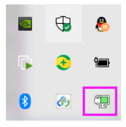

<!DOCTYPE html><html lang="zh-CN" data-theme="light"><head><meta charset="UTF-8"><meta http-equiv="X-UA-Compatible" content="IE=edge"><meta name="viewport" content="width=device-width, initial-scale=1.0,viewport-fit=cover"><title>OpenVPN | ૮(˶ᵔ ᵕ ᵔ˶)ა</title><meta name="author" content="૮(˶ᵔ ᵕ ᵔ˶)ა"><meta name="copyright" content="૮(˶ᵔ ᵕ ᵔ˶)ა"><meta name="format-detection" content="telephone=no"><meta name="theme-color" content="ffffff"><meta name="description" content="Site Reliability Engineering">
<meta property="og:type" content="article">
<meta property="og:title" content="OpenVPN">
<meta property="og:url" content="http://example.com/2025/02/18/SRE-OpenVPN/index.html">
<meta property="og:site_name" content="૮(˶ᵔ ᵕ ᵔ˶)ა">
<meta property="og:description" content="Site Reliability Engineering">
<meta property="og:locale" content="zh_CN">
<meta property="og:image" content="http://example.com/images/SRE/day25/5.png">
<meta property="article:published_time" content="2025-02-18T09:33:52.000Z">
<meta property="article:modified_time" content="2025-04-01T11:34:55.936Z">
<meta property="article:author" content="૮(˶ᵔ ᵕ ᵔ˶)ა">
<meta property="article:tag" content="SRE">
<meta property="article:tag" content="OpenVPN">
<meta name="twitter:card" content="summary">
<meta name="twitter:image" content="http://example.com/images/SRE/day25/5.png"><link rel="shortcut icon" href="/../images/TITLE/user.webp"><link rel="canonical" href="http://example.com/2025/02/18/SRE-OpenVPN/index.html"><link rel="preconnect" href="//cdn.jsdelivr.net"/><link rel="preconnect" href="//fonts.googleapis.com" crossorigin=""/><link rel="preconnect" href="//busuanzi.ibruce.info"/><link rel="stylesheet" href="/css/index.css"><link rel="stylesheet" href="https://cdn.jsdelivr.net/npm/@fortawesome/fontawesome-free/css/all.min.css" media="print" onload="this.media='all'"><link rel="stylesheet" href="https://cdn.jsdelivr.net/npm/node-snackbar/dist/snackbar.min.css" media="print" onload="this.media='all'"><link rel="stylesheet" href="https://cdn.jsdelivr.net/npm/@fancyapps/ui/dist/fancybox/fancybox.min.css" media="print" onload="this.media='all'"><link rel="stylesheet" href="https://fonts.googleapis.com/css?family=Titillium+Web&amp;display=swap" media="print" onload="this.media='all'"><script>const GLOBAL_CONFIG = { 
  root: '/',
  algolia: undefined,
  localSearch: undefined,
  translate: undefined,
  noticeOutdate: undefined,
  highlight: {"plugin":"highlighjs","highlightCopy":true,"highlightLang":false,"highlightHeightLimit":false},
  copy: {
    success: '复制成功',
    error: '复制错误',
    noSupport: '浏览器不支持'
  },
  relativeDate: {
    homepage: true,
    post: true
  },
  runtime: '天',
  dateSuffix: {
    just: '刚刚',
    min: '分钟前',
    hour: '小时前',
    day: '天前',
    month: '个月前'
  },
  copyright: undefined,
  lightbox: 'fancybox',
  Snackbar: {"chs_to_cht":"你已切换为繁体","cht_to_chs":"你已切换为简体","day_to_night":"你已切换为深色模式","night_to_day":"你已切换为浅色模式","bgLight":"#49b1f5","bgDark":"#1f1f1f","position":"top-center"},
  source: {
    justifiedGallery: {
      js: 'https://cdn.jsdelivr.net/npm/flickr-justified-gallery/dist/fjGallery.min.js',
      css: 'https://cdn.jsdelivr.net/npm/flickr-justified-gallery/dist/fjGallery.min.css'
    }
  },
  isPhotoFigcaption: false,
  islazyload: false,
  isAnchor: false,
  percent: {
    toc: true,
    rightside: true,
  }
}</script><script id="config-diff">var GLOBAL_CONFIG_SITE = {
  title: 'OpenVPN',
  isPost: true,
  isHome: false,
  isHighlightShrink: undefined,
  isToc: true,
  postUpdate: '2025-04-01 19:34:55'
}</script><noscript><style type="text/css">
  #nav {
    opacity: 1
  }
  .justified-gallery img {
    opacity: 1
  }

  #recent-posts time,
  #post-meta time {
    display: inline !important
  }
</style></noscript><script>(win=>{
    win.saveToLocal = {
      set: function setWithExpiry(key, value, ttl) {
        if (ttl === 0) return
        const now = new Date()
        const expiryDay = ttl * 86400000
        const item = {
          value: value,
          expiry: now.getTime() + expiryDay,
        }
        localStorage.setItem(key, JSON.stringify(item))
      },

      get: function getWithExpiry(key) {
        const itemStr = localStorage.getItem(key)

        if (!itemStr) {
          return undefined
        }
        const item = JSON.parse(itemStr)
        const now = new Date()

        if (now.getTime() > item.expiry) {
          localStorage.removeItem(key)
          return undefined
        }
        return item.value
      }
    }
  
    win.getScript = url => new Promise((resolve, reject) => {
      const script = document.createElement('script')
      script.src = url
      script.async = true
      script.onerror = reject
      script.onload = script.onreadystatechange = function() {
        const loadState = this.readyState
        if (loadState && loadState !== 'loaded' && loadState !== 'complete') return
        script.onload = script.onreadystatechange = null
        resolve()
      }
      document.head.appendChild(script)
    })
  
    win.getCSS = (url,id = false) => new Promise((resolve, reject) => {
      const link = document.createElement('link')
      link.rel = 'stylesheet'
      link.href = url
      if (id) link.id = id
      link.onerror = reject
      link.onload = link.onreadystatechange = function() {
        const loadState = this.readyState
        if (loadState && loadState !== 'loaded' && loadState !== 'complete') return
        link.onload = link.onreadystatechange = null
        resolve()
      }
      document.head.appendChild(link)
    })
  
      win.activateDarkMode = function () {
        document.documentElement.setAttribute('data-theme', 'dark')
        if (document.querySelector('meta[name="theme-color"]') !== null) {
          document.querySelector('meta[name="theme-color"]').setAttribute('content', '#0d0d0d')
        }
      }
      win.activateLightMode = function () {
        document.documentElement.setAttribute('data-theme', 'light')
        if (document.querySelector('meta[name="theme-color"]') !== null) {
          document.querySelector('meta[name="theme-color"]').setAttribute('content', 'ffffff')
        }
      }
      const t = saveToLocal.get('theme')
    
          if (t === 'dark') activateDarkMode()
          else if (t === 'light') activateLightMode()
        
      const asideStatus = saveToLocal.get('aside-status')
      if (asideStatus !== undefined) {
        if (asideStatus === 'hide') {
          document.documentElement.classList.add('hide-aside')
        } else {
          document.documentElement.classList.remove('hide-aside')
        }
      }
    
    const detectApple = () => {
      if(/iPad|iPhone|iPod|Macintosh/.test(navigator.userAgent)){
        document.documentElement.classList.add('apple')
      }
    }
    detectApple()
    })(window)</script><link rel="stylesheet" href="/css/custom.css"  media="defer" onload="this.media='all'"><meta name="generator" content="Hexo 5.4.2"></head><body><div id="web_bg"></div><div id="sidebar"><div id="menu-mask"></div><div id="sidebar-menus"><div class="avatar-img is-center"></div><div class="sidebar-site-data site-data is-center"><a href="/archives/"><div class="headline">文章</div><div class="length-num">101</div></a><a href="/tags/"><div class="headline">标签</div><div class="length-num">41</div></a><a href="/categories/"><div class="headline">分类</div><div class="length-num">34</div></a></div><hr/><div class="menus_items"><div class="menus_item"><a class="site-page" href="/"><i class="fa-fw fas fa-home"></i><span> 首页</span></a></div><div class="menus_item"><a class="site-page" href="/archives/"><i class="fa-fw fas fa-archive"></i><span> 时间线</span></a></div><div class="menus_item"><a class="site-page" href="/categories/"><i class="fa-fw fas fa-folder-open"></i><span> 分类</span></a></div><div class="menus_item"><a class="site-page" href="/tags/"><i class="fa-fw fas fa-tags"></i><span> 标签</span></a></div><div class="menus_item"><a class="site-page" href="/link/"><i class="fa-fw fas fa-link"></i><span> 友链</span></a></div></div></div></div><div class="post" id="body-wrap"><header class="post-bg" id="page-header" style="background-image: url('/../images/SRE/day25/5.png')"><nav id="nav"><span id="blog-info"><a href="/" title="૮(˶ᵔ ᵕ ᵔ˶)ა"><span class="site-name">૮(˶ᵔ ᵕ ᵔ˶)ა</span></a></span><div id="menus"><div class="menus_items"><div class="menus_item"><a class="site-page" href="/"><i class="fa-fw fas fa-home"></i><span> 首页</span></a></div><div class="menus_item"><a class="site-page" href="/archives/"><i class="fa-fw fas fa-archive"></i><span> 时间线</span></a></div><div class="menus_item"><a class="site-page" href="/categories/"><i class="fa-fw fas fa-folder-open"></i><span> 分类</span></a></div><div class="menus_item"><a class="site-page" href="/tags/"><i class="fa-fw fas fa-tags"></i><span> 标签</span></a></div><div class="menus_item"><a class="site-page" href="/link/"><i class="fa-fw fas fa-link"></i><span> 友链</span></a></div></div><div id="toggle-menu"><a class="site-page" href="javascript:void(0);"><i class="fas fa-bars fa-fw"></i></a></div></div></nav><div id="post-info"><h1 class="post-title">OpenVPN</h1><div id="post-meta"><div class="meta-firstline"><span class="post-meta-date"><i class="far fa-calendar-alt fa-fw post-meta-icon"></i><span class="post-meta-label">发表于</span><time class="post-meta-date-created" datetime="2025-02-18T09:33:52.000Z" title="发表于 2025-02-18 17:33:52">2025-02-18</time><span class="post-meta-separator">|</span><i class="fas fa-history fa-fw post-meta-icon"></i><span class="post-meta-label">更新于</span><time class="post-meta-date-updated" datetime="2025-04-01T11:34:55.936Z" title="更新于 2025-04-01 19:34:55">2025-04-01</time></span><span class="post-meta-categories"><span class="post-meta-separator">|</span><i class="fas fa-inbox fa-fw post-meta-icon"></i><a class="post-meta-categories" href="/categories/OpenVPN/">OpenVPN</a></span></div><div class="meta-secondline"><span class="post-meta-separator">|</span><span class="post-meta-wordcount"><i class="far fa-file-word fa-fw post-meta-icon"></i><span class="post-meta-label">字数总计:</span><span class="word-count">10.5k</span><span class="post-meta-separator">|</span><i class="far fa-clock fa-fw post-meta-icon"></i><span class="post-meta-label">阅读时长:</span><span>49分钟</span></span><span class="post-meta-separator">|</span><span class="post-meta-pv-cv" id="" data-flag-title="OpenVPN"><i class="far fa-eye fa-fw post-meta-icon"></i><span class="post-meta-label">阅读量:</span><span id="busuanzi_value_page_pv"><i class="fa-solid fa-spinner fa-spin"></i></span></span></div></div></div></header><main class="layout" id="content-inner"><div id="post"><article class="post-content" id="article-container"><h1 id="OpenVPN简介"><a href="#OpenVPN简介" class="headerlink" title="OpenVPN简介"></a>OpenVPN简介</h1><h2 id="VPN-介绍"><a href="#VPN-介绍" class="headerlink" title="VPN 介绍"></a>VPN 介绍</h2><p>一些组织需要实现跨地域的互相通信,比如:北京总公司和上海分公司之间进行网络互通,一般通过下面两种方式实现</p>
<p>专用网：</p>
<p>所谓专用网就是在两个网络（例如，北京总公司和广州分公司）的网络之间架设一条专用线路，但是它并不需要真正地去铺设光缆之类的物理线路。虽然没有实际去铺设网线，但是仍需要向电信运营商申请租用专线，在这条专用的线路上只传输自己组织之间的数据信息,所以此方式安全稳定,同时也费用高昂</p>
<p></p>
<p>VPN：</p>
<p>Virtual Private Network，虚拟私有网络，或称为虚拟专用网络，常用于在公用网络上实现专用网络功能，为了安全通常需要进行加密通讯。此方式在企业网络中有广泛应用。VPN网关通过对数据包的加密和数据包目标地址的转换实现远程访问。VPN功能可通过服务器、网络硬件、软件等多种方式实现</p>
<p></p>
<h2 id="VPN-常见应用模式"><a href="#VPN-常见应用模式" class="headerlink" title="VPN 常见应用模式"></a>VPN 常见应用模式</h2><h3 id="点对站点-peer-to-site"><a href="#点对站点-peer-to-site" class="headerlink" title="点对站点 peer to site"></a>点对站点 peer to site</h3><p></p>
<h3 id="站点对站点-site-to-site"><a href="#站点对站点-site-to-site" class="headerlink" title="站点对站点 site to site"></a>站点对站点 site to site</h3><p></p>
<h2 id="OpenVPN"><a href="#OpenVPN" class="headerlink" title="OpenVPN"></a>OpenVPN</h2><p></p>
<p>OpenVPN 是Linux下开源VPN的应用，提供了良好的性能和友好的用户GUI。</p>
<p>OpenVPN 是一个基于 OpenSSL 库的应用层 VPN 实现。和传统 VPN 相比，它的优点是简单易用。</p>
<p>OpenVPN允许参与建立VPN的单点使用共享密钥，电子证书，或者用户名/密码来进行身份验证。</p>
<p>OpenVPN支持在各种系统,,如:Linux、Windows、Mac OS X、Solaris、OpenBSD、FreeBSD、NetBSD 上运行，并包含了许多安全性的功能。它并不是一个基于Web的VPN软件，也不与IPsec及其他VPN软件包兼容。</p>
<p>官方网站：<a target="_blank" rel="noopener" href="https://openvpn.net/">https://openvpn.net</a></p>
<p>GitHub地址：<a target="_blank" rel="noopener" href="https://github.com/OpenVPN/openvpn">https://github.com/OpenVPN/openvpn</a></p>
<p><strong>OpenVPN 常见适用场景</strong></p>
<ul>
<li>实现远程主机到内网的连接</li>
<li>实现多个远程主机之间的连接</li>
</ul>
<h1 id="OpenVPN-部署"><a href="#OpenVPN-部署" class="headerlink" title="OpenVPN 部署"></a>OpenVPN 部署</h1><h2 id="准备-OpenVPN-部署环境"><a href="#准备-OpenVPN-部署环境" class="headerlink" title="准备 OpenVPN 部署环境"></a>准备 OpenVPN 部署环境</h2><p>官文文档: <a target="_blank" rel="noopener" href="https://openvpn.net/community-resources/how-to/">https://openvpn.net/community-resources/how-to/</a></p>
<p><strong>可选择以下两套环境之一实现OpenVPN</strong></p>
<h3 id="环境1-阿里云-OpenVPN-实战环境"><a href="#环境1-阿里云-OpenVPN-实战环境" class="headerlink" title="环境1: 阿里云 OpenVPN 实战环境"></a>环境1: 阿里云 OpenVPN 实战环境</h3><p><strong>准备阿里云网络实验环境</strong></p>
<figure class="highlight sh"><table><tr><td class="gutter"><pre><span class="line">1</span><br><span class="line">2</span><br><span class="line">3</span><br><span class="line">4</span><br><span class="line">5</span><br><span class="line">6</span><br><span class="line">7</span><br><span class="line">8</span><br><span class="line">9</span><br><span class="line">10</span><br><span class="line">11</span><br><span class="line">12</span><br><span class="line">13</span><br><span class="line">14</span><br><span class="line">15</span><br><span class="line">16</span><br><span class="line">17</span><br><span class="line">18</span><br><span class="line">19</span><br><span class="line">20</span><br><span class="line">21</span><br><span class="line">22</span><br><span class="line">23</span><br><span class="line">24</span><br><span class="line">25</span><br><span class="line">26</span><br><span class="line">27</span><br><span class="line">28</span><br><span class="line">29</span><br></pre></td><td class="code"><pre><span class="line">1 阿里云创建专有网络</span><br><span class="line">指定城市和可用区:华北3张家口可用区A区</span><br><span class="line">网段名wang-net1和地址段172.16.0.0/12,默认资源组</span><br><span class="line">交换机名wang-net1-sw1 可用区A IPv4的地址段 172.30.0.0/24</span><br><span class="line">安全组开放22端口</span><br><span class="line"></span><br><span class="line">2 创建OpenVPN服务器有公网IP的实例1个</span><br><span class="line">指定城市和可用区:华北3张家口可用区A区</span><br><span class="line">计算型c6 2vCPU 4G</span><br><span class="line">网络:wang-net1 交换机:wang-net1-sw1</span><br><span class="line">公网IP 按量收费 10M </span><br><span class="line">默认安全组 默认配置 22,3389,icmp</span><br><span class="line">centos8.2</span><br><span class="line">系统盘 存储默认高效云盘40G</span><br><span class="line"></span><br><span class="line">3 创建局域网的服务器无公网IP的实例2个</span><br><span class="line">按量付费</span><br><span class="line">指定城市和可用区:华北3张家口可用区A区</span><br><span class="line">共享型 2vCPU2G</span><br><span class="line">centos8.2</span><br><span class="line">系统盘 存储默认高效云盘40G</span><br><span class="line">网络:wang-net1 wang-net1-sw1</span><br><span class="line">无公网IP</span><br><span class="line">默认安全组</span><br><span class="line">主网卡sw1</span><br><span class="line"></span><br><span class="line">4 重设所有实例密码</span><br><span class="line"></span><br><span class="line">5 修改安全组打开 1194/TCP/UDP</span><br></pre></td></tr></table></figure>

<h3 id="环境2-局域网-OpenVPN-实战环境"><a href="#环境2-局域网-OpenVPN-实战环境" class="headerlink" title="环境2: 局域网 OpenVPN 实战环境"></a>环境2: 局域网 OpenVPN 实战环境</h3><p></p>
<figure class="highlight sh"><table><tr><td class="gutter"><pre><span class="line">1</span><br><span class="line">2</span><br><span class="line">3</span><br><span class="line">4</span><br><span class="line">5</span><br><span class="line">6</span><br><span class="line">7</span><br><span class="line">8</span><br><span class="line">9</span><br><span class="line">10</span><br><span class="line">11</span><br><span class="line">12</span><br><span class="line">13</span><br><span class="line">14</span><br></pre></td><td class="code"><pre><span class="line"><span class="comment">#共四台主机</span></span><br><span class="line">1 openvpn server：</span><br><span class="line">CentOS 8.2 </span><br><span class="line">eth0:10.0.0.8/24 NAT模式,模拟公网IP</span><br><span class="line">eth1:172.30.0.1/24 仅主机模式,私网IP</span><br><span class="line"></span><br><span class="line">2 内网主机两台</span><br><span class="line">第一台主机</span><br><span class="line">eth0:172.30.0.100/24 仅主机模式,私网IP，无需网关</span><br><span class="line">第二台主机</span><br><span class="line">eth0:172.30.0.200/24 仅主机模式,私网IP，无需网关</span><br><span class="line"></span><br><span class="line">3 Windows 客户端</span><br><span class="line">Windows 10</span><br></pre></td></tr></table></figure>

<h2 id="安装-OpenVPN-相关软件包"><a href="#安装-OpenVPN-相关软件包" class="headerlink" title="安装 OpenVPN 相关软件包"></a>安装 OpenVPN 相关软件包</h2><h3 id="查看版本"><a href="#查看版本" class="headerlink" title="查看版本"></a>查看版本</h3><h4 id="查看官网的OpenVPN的版本"><a href="#查看官网的OpenVPN的版本" class="headerlink" title="查看官网的OpenVPN的版本"></a>查看官网的OpenVPN的版本</h4><p>访问官网：<a target="_blank" rel="noopener" href="https://openvpn.net/">https://openvpn.net</a></p>
<p></p>
<h4 id="在不同OS上查看-OpenVPN-版本"><a href="#在不同OS上查看-OpenVPN-版本" class="headerlink" title="在不同OS上查看 OpenVPN 版本"></a>在不同OS上查看 OpenVPN 版本</h4><p><strong>CentOS系统上的EPEL源OpenVPN版本比Ubuntu的仓库中版本更新,以下选择在CentOS8上部署 OpenVPN</strong></p>
<p>范例: CentOS 查看OpenVPN版本</p>
<figure class="highlight sh"><table><tr><td class="gutter"><pre><span class="line">1</span><br><span class="line">2</span><br><span class="line">3</span><br><span class="line">4</span><br><span class="line">5</span><br></pre></td><td class="code"><pre><span class="line">[root@centos8 ~]<span class="comment"># yum list openvpn</span></span><br><span class="line">openvpn.x86_64            2.4.9-1.el8             epel</span><br><span class="line"></span><br><span class="line">[root@centos8 ~]<span class="comment"># yum list easy-rsa</span></span><br><span class="line">easy-rsa.noarch           3.0.7-1.el8             epel</span><br></pre></td></tr></table></figure>

<p>范例: Ubuntu 查看OpenVPN 和 easy-rsa 版本</p>
<figure class="highlight sh"><table><tr><td class="gutter"><pre><span class="line">1</span><br><span class="line">2</span><br><span class="line">3</span><br><span class="line">4</span><br><span class="line">5</span><br></pre></td><td class="code"><pre><span class="line">[root@ubuntu2204 ~]<span class="comment"># apt list openvpn</span></span><br><span class="line">openvpn/jammy-proposed 2.5.5-1ubuntu3.1 amd64</span><br><span class="line"></span><br><span class="line">[root@ubuntu2204 ~]<span class="comment"># apt list easy-rsa</span></span><br><span class="line">easy-rsa/jammy 3.0.8-1ubuntu1 all</span><br></pre></td></tr></table></figure>

<h3 id="安装-OpenVPN"><a href="#安装-OpenVPN" class="headerlink" title="安装 OpenVPN"></a>安装 OpenVPN</h3><p>后面环境以CentOS8上基于EPEL源安装OpenVPN为例</p>
<h4 id="安装-OpenVPN-和证书工具"><a href="#安装-OpenVPN-和证书工具" class="headerlink" title="安装 OpenVPN 和证书工具"></a>安装 OpenVPN 和证书工具</h4><p>范例：Ubuntun20.04</p>
<figure class="highlight sh"><table><tr><td class="gutter"><pre><span class="line">1</span><br></pre></td><td class="code"><pre><span class="line">[root@ubuntu2004 ~]<span class="comment"># apt update ; apt -y install openvpn easy-rsa</span></span><br></pre></td></tr></table></figure>

<p>注意: 需要提前配置epel源</p>
<figure class="highlight sh"><table><tr><td class="gutter"><pre><span class="line">1</span><br><span class="line">2</span><br><span class="line">3</span><br><span class="line">4</span><br><span class="line">5</span><br><span class="line">6</span><br><span class="line">7</span><br><span class="line">8</span><br><span class="line">9</span><br><span class="line">10</span><br><span class="line">11</span><br><span class="line">12</span><br></pre></td><td class="code"><pre><span class="line">[root@centos8 ~]<span class="comment"># vim /etc/yum.repos.d/epel.repo</span></span><br><span class="line">[epel]</span><br><span class="line">name=EPEL</span><br><span class="line">baseurl=https://mirrors.aliyun.com/epel/<span class="variable">$releasever</span>/Everything/<span class="variable">$basearch</span></span><br><span class="line">gpgcheck=0</span><br><span class="line">enabled=1</span><br><span class="line"></span><br><span class="line"><span class="comment">#OpenVPN服务器端</span></span><br><span class="line">[root@centos8 ~]<span class="comment"># yum -y install openvpn </span></span><br><span class="line"></span><br><span class="line"><span class="comment">#证书管理工具</span></span><br><span class="line">[root@centos8 ~]<span class="comment"># yum -y install easy-rsa </span></span><br></pre></td></tr></table></figure>

<h4 id="查看包中相关文件"><a href="#查看包中相关文件" class="headerlink" title="查看包中相关文件"></a>查看包中相关文件</h4><p>范例：Ubuntun20.04 </p>
<figure class="highlight sh"><table><tr><td class="gutter"><pre><span class="line">1</span><br></pre></td><td class="code"><pre><span class="line">[root@ubuntu2004 ~]<span class="comment"># dpkg -L openvpn easy-rsa</span></span><br></pre></td></tr></table></figure>

<p>范例：CentOS 8</p>
<figure class="highlight sh"><table><tr><td class="gutter"><pre><span class="line">1</span><br><span class="line">2</span><br><span class="line">3</span><br></pre></td><td class="code"><pre><span class="line">[root@centos8 ~]<span class="comment"># rpm -qi openvpn easy-rsa</span></span><br><span class="line">[root@centos8 ~]<span class="comment"># rpm -ql openvpn</span></span><br><span class="line">[root@centos8 ~]<span class="comment"># rpm -ql easy-rsa</span></span><br></pre></td></tr></table></figure>

<h4 id="准备相关配置文件"><a href="#准备相关配置文件" class="headerlink" title="准备相关配置文件"></a>准备相关配置文件</h4><p>范例: Ubuntun20.04</p>
<figure class="highlight sh"><table><tr><td class="gutter"><pre><span class="line">1</span><br><span class="line">2</span><br><span class="line">3</span><br><span class="line">4</span><br><span class="line">5</span><br><span class="line">6</span><br><span class="line">7</span><br><span class="line">8</span><br><span class="line">9</span><br><span class="line">10</span><br><span class="line">11</span><br><span class="line">12</span><br><span class="line">13</span><br><span class="line">14</span><br><span class="line">15</span><br><span class="line">16</span><br></pre></td><td class="code"><pre><span class="line">[root@ubuntu2004 ~]<span class="comment"># cp -r /usr/share/easy-rsa/ /etc/openvpn/</span></span><br><span class="line">[root@ubuntu2004 ~]<span class="comment"># mv /etc/openvpn/easy-rsa/vars.example /etc/openvpn/easy-rsa/vars</span></span><br><span class="line">[root@ubuntu2004 ~]<span class="comment"># tree /etc/openvpn/easy-rsa/</span></span><br><span class="line">/etc/openvpn/easy-rsa/</span><br><span class="line">├── easyrsa</span><br><span class="line">├── openssl-easyrsa.cnf</span><br><span class="line">├── vars</span><br><span class="line">└── x509-types</span><br><span class="line">   ├── ca</span><br><span class="line">   ├── client</span><br><span class="line">   ├── code-signing</span><br><span class="line">   ├── COMMON</span><br><span class="line">   ├── server</span><br><span class="line">   └── serverClient</span><br><span class="line">   </span><br><span class="line">1 directory, 9 files</span><br></pre></td></tr></table></figure>

<p>范例: CentOS8</p>
<figure class="highlight sh"><table><tr><td class="gutter"><pre><span class="line">1</span><br><span class="line">2</span><br><span class="line">3</span><br><span class="line">4</span><br><span class="line">5</span><br><span class="line">6</span><br><span class="line">7</span><br><span class="line">8</span><br><span class="line">9</span><br><span class="line">10</span><br><span class="line">11</span><br><span class="line">12</span><br><span class="line">13</span><br><span class="line">14</span><br><span class="line">15</span><br><span class="line">16</span><br><span class="line">17</span><br><span class="line">18</span><br><span class="line">19</span><br><span class="line">20</span><br><span class="line">21</span><br><span class="line">22</span><br><span class="line">23</span><br><span class="line">24</span><br><span class="line">25</span><br><span class="line">26</span><br><span class="line">27</span><br><span class="line">28</span><br><span class="line">29</span><br><span class="line">30</span><br><span class="line">31</span><br><span class="line">32</span><br><span class="line">33</span><br><span class="line">34</span><br><span class="line">35</span><br><span class="line">36</span><br></pre></td><td class="code"><pre><span class="line"><span class="comment">#准备证书颁发相关文件</span></span><br><span class="line">[root@centos8 ~]<span class="comment"># cp -r /usr/share/easy-rsa/3/ /etc/openvpn/easy-rsa</span></span><br><span class="line"></span><br><span class="line"><span class="comment">#准备颁发证书相关变量的配置文件</span></span><br><span class="line">[root@centos8 ~]<span class="comment"># cp /usr/share/doc/easy-rsa/vars.example /etc/openvpn/easy-rsa/vars</span></span><br><span class="line"></span><br><span class="line"><span class="comment">#建议修改给CA和OpenVPN服务器颁发的证书的有效期,可适当加长</span></span><br><span class="line">[root@centos8 ~]<span class="comment">#vim /etc/openvpn/easy-rsa/vars</span></span><br><span class="line"></span><br><span class="line"><span class="comment">#CA的证书默认有效期为10年,可以适当延长,比如:36500天</span></span><br><span class="line"><span class="comment">#set_var EASYRSA_CA_EXPIRE     3650</span></span><br><span class="line">set_var EASYRSA_CA_EXPIRE      36500</span><br><span class="line"></span><br><span class="line"><span class="comment">#服务器证书默为为825天,可适当加长,比如:3650天</span></span><br><span class="line"><span class="comment">#set_var EASYRSA_CERT_EXPIRE   825 </span></span><br><span class="line"><span class="comment">#将上面行修改为下面</span></span><br><span class="line">set_var EASYRSA_CERT_EXPIRE    3650</span><br><span class="line"></span><br><span class="line">[root@centos8 ~]<span class="comment">#tree /etc/openvpn/</span></span><br><span class="line">/etc/openvpn/</span><br><span class="line">├── client</span><br><span class="line">├── easy-rsa</span><br><span class="line">│       ├── easyrsa</span><br><span class="line">│       ├── openssl-easyrsa.cnf</span><br><span class="line">│       ├── vars</span><br><span class="line">│       └── x509-types</span><br><span class="line">│           ├── ca</span><br><span class="line">│           ├── client</span><br><span class="line">│           ├── code-signing</span><br><span class="line">│           ├── COMMON</span><br><span class="line">│           ├── email</span><br><span class="line">│           ├── kdc</span><br><span class="line">│           ├── server</span><br><span class="line">│           └── serverClient</span><br><span class="line">├── server</span><br><span class="line">└── server.conf</span><br></pre></td></tr></table></figure>

<h2 id="准备证书相关文件"><a href="#准备证书相关文件" class="headerlink" title="准备证书相关文件"></a>准备证书相关文件</h2><h3 id="初始化PKI和CA颁发机构环境"><a href="#初始化PKI和CA颁发机构环境" class="headerlink" title="初始化PKI和CA颁发机构环境"></a>初始化PKI和CA颁发机构环境</h3><h4 id="脚本easyrsa帮助用法"><a href="#脚本easyrsa帮助用法" class="headerlink" title="脚本easyrsa帮助用法"></a>脚本easyrsa帮助用法</h4><figure class="highlight sh"><table><tr><td class="gutter"><pre><span class="line">1</span><br><span class="line">2</span><br><span class="line">3</span><br><span class="line">4</span><br><span class="line">5</span><br><span class="line">6</span><br></pre></td><td class="code"><pre><span class="line">[root@centos8 ~]<span class="comment"># cd /etc/openvpn/easy-rsa</span></span><br><span class="line"></span><br><span class="line">[root@centos8 easy-rsa]<span class="comment"># file ./easyrsa</span></span><br><span class="line">./easyrsa: POSIX shell script, ASCII text executable</span><br><span class="line"></span><br><span class="line">[root@centos8 easy-rsa]<span class="comment"># ./easyrsa</span></span><br></pre></td></tr></table></figure>

<h4 id="初始化PKI生成PKI相关目录和文件"><a href="#初始化PKI生成PKI相关目录和文件" class="headerlink" title="初始化PKI生成PKI相关目录和文件"></a>初始化PKI生成PKI相关目录和文件</h4><figure class="highlight sh"><table><tr><td class="gutter"><pre><span class="line">1</span><br><span class="line">2</span><br><span class="line">3</span><br><span class="line">4</span><br><span class="line">5</span><br><span class="line">6</span><br><span class="line">7</span><br><span class="line">8</span><br><span class="line">9</span><br><span class="line">10</span><br><span class="line">11</span><br><span class="line">12</span><br><span class="line">13</span><br><span class="line">14</span><br><span class="line">15</span><br><span class="line">16</span><br><span class="line">17</span><br><span class="line">18</span><br><span class="line">19</span><br><span class="line">20</span><br><span class="line">21</span><br><span class="line">22</span><br><span class="line">23</span><br><span class="line">24</span><br><span class="line">25</span><br><span class="line">26</span><br></pre></td><td class="code"><pre><span class="line">[root@centos8 ~]<span class="comment"># cd /etc/openvpn/easy-rsa/</span></span><br><span class="line"></span><br><span class="line">[root@centos8 easy-rsa]<span class="comment"># ls</span></span><br><span class="line">easyrsa openssl-easyrsa.cnf vars x509-types</span><br><span class="line"></span><br><span class="line"><span class="comment">#初始化数据,在当前目录下生成pki目录及相关文件</span></span><br><span class="line">[root@centos8 easy-rsa]<span class="comment"># ./easyrsa init-pki</span></span><br><span class="line"></span><br><span class="line">[root@centos8 easy-rsa]<span class="comment"># tree </span></span><br><span class="line">├── easyrsa</span><br><span class="line">├── openssl-easyrsa.cnf</span><br><span class="line">├── pki                 <span class="comment">#生成一个新目录及相关文件</span></span><br><span class="line">│   ├── openssl-easyrsa.cnf</span><br><span class="line">│   ├── private</span><br><span class="line">│   ├── reqs</span><br><span class="line">│   └── safessl-easyrsa.cnf</span><br><span class="line">├── vars</span><br><span class="line">└── x509-types</span><br><span class="line">   ├── ca</span><br><span class="line">   ├── client</span><br><span class="line">   ├── code-signing</span><br><span class="line">   ├── COMMON</span><br><span class="line">   ├── email</span><br><span class="line">   ├── kdc</span><br><span class="line">   ├── server</span><br><span class="line">   └── serverClient</span><br></pre></td></tr></table></figure>

<h3 id="创建-CA-机构证书环境"><a href="#创建-CA-机构证书环境" class="headerlink" title="创建 CA 机构证书环境"></a>创建 CA 机构证书环境</h3><figure class="highlight sh"><table><tr><td class="gutter"><pre><span class="line">1</span><br><span class="line">2</span><br><span class="line">3</span><br><span class="line">4</span><br><span class="line">5</span><br><span class="line">6</span><br><span class="line">7</span><br><span class="line">8</span><br><span class="line">9</span><br><span class="line">10</span><br><span class="line">11</span><br><span class="line">12</span><br><span class="line">13</span><br><span class="line">14</span><br><span class="line">15</span><br><span class="line">16</span><br><span class="line">17</span><br><span class="line">18</span><br><span class="line">19</span><br><span class="line">20</span><br><span class="line">21</span><br><span class="line">22</span><br><span class="line">23</span><br><span class="line">24</span><br><span class="line">25</span><br><span class="line">26</span><br><span class="line">27</span><br><span class="line">28</span><br><span class="line">29</span><br><span class="line">30</span><br><span class="line">31</span><br><span class="line">32</span><br><span class="line">33</span><br><span class="line">34</span><br><span class="line">35</span><br><span class="line">36</span><br><span class="line">37</span><br><span class="line">38</span><br><span class="line">39</span><br><span class="line">40</span><br><span class="line">41</span><br><span class="line">42</span><br><span class="line">43</span><br><span class="line">44</span><br><span class="line">45</span><br><span class="line">46</span><br><span class="line">47</span><br><span class="line">48</span><br><span class="line">49</span><br><span class="line">50</span><br><span class="line">51</span><br><span class="line">52</span><br><span class="line">53</span><br><span class="line">54</span><br></pre></td><td class="code"><pre><span class="line">[root@centos8 ~]<span class="comment"># cd /etc/openvpn/easy-rsa/</span></span><br><span class="line">[root@centos8 easy-rsa]<span class="comment"># tree pki</span></span><br><span class="line">pki</span><br><span class="line">├── openssl-easyrsa.cnf</span><br><span class="line">├── private</span><br><span class="line">├── reqs</span><br><span class="line">└── safessl-easyrsa.cnf</span><br><span class="line">2 directories, 2 files</span><br><span class="line"></span><br><span class="line">[root@centos8 easy-rsa]<span class="comment"># ./easyrsa build-ca nopass </span></span><br><span class="line"></span><br><span class="line">[root@centos8 easy-rsa]<span class="comment"># tree pki</span></span><br><span class="line">pki</span><br><span class="line">├── ca.crt <span class="comment">#生成的自签名的证书文件</span></span><br><span class="line">├── certs_by_serial</span><br><span class="line">├── index.txt</span><br><span class="line">├── index.txt.attr</span><br><span class="line">├── issued</span><br><span class="line">├── openssl-easyrsa.cnf</span><br><span class="line">├── private</span><br><span class="line">│   └── ca.key <span class="comment">#生成的私钥文件</span></span><br><span class="line">├── renewed</span><br><span class="line">│   ├── certs_by_serial</span><br><span class="line">│   ├── private_by_serial</span><br><span class="line">│   └── reqs_by_serial</span><br><span class="line">├── reqs</span><br><span class="line">├── revoked</span><br><span class="line">│   ├── certs_by_serial</span><br><span class="line">│   ├── private_by_serial</span><br><span class="line">│   └── reqs_by_serial</span><br><span class="line">├── safessl-easyrsa.cnf</span><br><span class="line">└── serial</span><br><span class="line">12 directories, 7 files</span><br><span class="line"></span><br><span class="line"><span class="comment">#查看生成CA相关的文件</span></span><br><span class="line">[root@centos8 easy-rsa]<span class="comment"># cat pki/serial </span></span><br><span class="line">01</span><br><span class="line"></span><br><span class="line">[root@centos8 easy-rsa]<span class="comment"># ll pki/index.txt</span></span><br><span class="line">-rw------- 1 root root 0 Aug  2 16:42 pki/index.txt</span><br><span class="line"></span><br><span class="line">[root@centos8 easy-rsa]<span class="comment"># cat pki/serial </span></span><br><span class="line">01</span><br><span class="line"></span><br><span class="line">[root@centos8 easy-rsa]<span class="comment"># ll pki/ca.crt pki/private/ca.key </span></span><br><span class="line">-rw------- 1 root root 1204 Aug  2 16:42 pki/ca.crt</span><br><span class="line">-rw------- 1 root root 1675 Aug  2 16:42 pki/private/ca.key</span><br><span class="line"></span><br><span class="line"><span class="comment">#查看生成的自签名证书</span></span><br><span class="line">[root@centos8 easy-rsa]<span class="comment"># cat pki/ca.crt</span></span><br><span class="line">......</span><br><span class="line"></span><br><span class="line">[root@centos8 easy-rsa]<span class="comment"># openssl x509 -in pki/ca.crt -noout -text</span></span><br><span class="line">......</span><br></pre></td></tr></table></figure>

<h3 id="准备服务端证书环境"><a href="#准备服务端证书环境" class="headerlink" title="准备服务端证书环境"></a>准备服务端证书环境</h3><h4 id="创建服务端证书申请"><a href="#创建服务端证书申请" class="headerlink" title="创建服务端证书申请"></a>创建服务端证书申请</h4><figure class="highlight sh"><table><tr><td class="gutter"><pre><span class="line">1</span><br><span class="line">2</span><br><span class="line">3</span><br><span class="line">4</span><br><span class="line">5</span><br><span class="line">6</span><br><span class="line">7</span><br><span class="line">8</span><br><span class="line">9</span><br><span class="line">10</span><br><span class="line">11</span><br><span class="line">12</span><br><span class="line">13</span><br><span class="line">14</span><br><span class="line">15</span><br><span class="line">16</span><br><span class="line">17</span><br><span class="line">18</span><br><span class="line">19</span><br><span class="line">20</span><br><span class="line">21</span><br><span class="line">22</span><br><span class="line">23</span><br><span class="line">24</span><br><span class="line">25</span><br><span class="line">26</span><br><span class="line">27</span><br><span class="line">28</span><br><span class="line">29</span><br><span class="line">30</span><br><span class="line">31</span><br><span class="line">32</span><br><span class="line">33</span><br><span class="line">34</span><br><span class="line">35</span><br><span class="line">36</span><br><span class="line">37</span><br></pre></td><td class="code"><pre><span class="line">[root@centos8 ~]<span class="comment"># cd /etc/openvpn/easy-rsa</span></span><br><span class="line"></span><br><span class="line"><span class="comment">#创建服务器证书申请文件，其中server是文件前缀</span></span><br><span class="line">[root@centos8 easy-rsa]<span class="comment"># ./easyrsa gen-req server nopass</span></span><br><span class="line"></span><br><span class="line">Common Name (eg: your user, host, or server name) [server]: <span class="comment">#接受Common Name的默认值,直接回车</span></span><br><span class="line"></span><br><span class="line">Keypair and certificate request completed. Your files are:</span><br><span class="line">req: /etc/openvpn/easy-rsa/pki/reqs/server.req          <span class="comment">#生成请求文件</span></span><br><span class="line">key: /etc/openvpn/easy-rsa/pki/private/server.key       <span class="comment">#生成私钥文件</span></span><br><span class="line"></span><br><span class="line"></span><br><span class="line">[root@centos8 easy-rsa]<span class="comment"># tree pki</span></span><br><span class="line">pki</span><br><span class="line">├── ca.crt</span><br><span class="line">├── certs_by_serial</span><br><span class="line">├── index.txt</span><br><span class="line">├── index.txt.attr</span><br><span class="line">├── issued</span><br><span class="line">├── openssl-easyrsa.cnf</span><br><span class="line">├── private</span><br><span class="line">│   ├── ca.key</span><br><span class="line">│   └── server.key       <span class="comment">#生成私钥文件</span></span><br><span class="line">├── renewed</span><br><span class="line">│   ├── certs_by_serial</span><br><span class="line">│   ├── private_by_serial</span><br><span class="line">│   └── reqs_by_serial</span><br><span class="line">├── reqs</span><br><span class="line">│   └── server.req      <span class="comment">#生成请求文件</span></span><br><span class="line">├── revoked</span><br><span class="line">│   ├── certs_by_serial</span><br><span class="line">│   ├── private_by_serial</span><br><span class="line">│   └── reqs_by_serial</span><br><span class="line">├── safessl-easyrsa.cnf</span><br><span class="line">└── serial</span><br><span class="line"></span><br><span class="line">12 directories, 9 files</span><br></pre></td></tr></table></figure>

<h4 id="颁发服务端证书"><a href="#颁发服务端证书" class="headerlink" title="颁发服务端证书"></a>颁发服务端证书</h4><h5 id="查看颁发证书命令用法"><a href="#查看颁发证书命令用法" class="headerlink" title="查看颁发证书命令用法"></a>查看颁发证书命令用法</h5><figure class="highlight sh"><table><tr><td class="gutter"><pre><span class="line">1</span><br><span class="line">2</span><br><span class="line">3</span><br><span class="line">4</span><br><span class="line">5</span><br><span class="line">6</span><br><span class="line">7</span><br><span class="line">8</span><br><span class="line">9</span><br><span class="line">10</span><br><span class="line">11</span><br><span class="line">12</span><br></pre></td><td class="code"><pre><span class="line">[root@centos8 ~]<span class="comment"># cd /etc/openvpn/easy-rsa/</span></span><br><span class="line">[root@centos8 easy-rsa]<span class="comment"># ./easyrsa help sign </span></span><br><span class="line"></span><br><span class="line">Note: using Easy-RSA configuration from: /etc/openvpn/easy-rsa/vars</span><br><span class="line"></span><br><span class="line"> sign-req &lt;<span class="built_in">type</span>&gt; &lt;filename_base&gt;</span><br><span class="line">     Sign a certificate request of the defined <span class="built_in">type</span>. &lt;<span class="built_in">type</span>&gt; must be a known</span><br><span class="line">     <span class="built_in">type</span> such as <span class="string">&#x27;client&#x27;</span>, <span class="string">&#x27;server&#x27;</span>, <span class="string">&#x27;serverClient&#x27;</span>, or <span class="string">&#x27;ca&#x27;</span> (or a user-added </span><br><span class="line"><span class="built_in">type</span>.)</span><br><span class="line"></span><br><span class="line">     This request file must exist <span class="keyword">in</span> the reqs/ <span class="built_in">dir</span> and have a .req file</span><br><span class="line">     extension. See import-req below <span class="keyword">for</span> importing reqs from other sources.</span><br></pre></td></tr></table></figure>

<h5 id="颁发服务端证书-1"><a href="#颁发服务端证书-1" class="headerlink" title="颁发服务端证书"></a>颁发服务端证书</h5><figure class="highlight sh"><table><tr><td class="gutter"><pre><span class="line">1</span><br><span class="line">2</span><br><span class="line">3</span><br><span class="line">4</span><br><span class="line">5</span><br><span class="line">6</span><br><span class="line">7</span><br><span class="line">8</span><br><span class="line">9</span><br><span class="line">10</span><br><span class="line">11</span><br></pre></td><td class="code"><pre><span class="line"><span class="comment">#将上面server.req的申请,颁发server类型的证书</span></span><br><span class="line">[root@centos8 ~]<span class="comment"># cd /etc/openvpn/easy-rsa</span></span><br><span class="line"></span><br><span class="line"><span class="comment">#第一个server表示证书的类型,第二个server表示请求文件名的前缀</span></span><br><span class="line">[root@centos8 easy-rsa]<span class="comment"># ./easyrsa sign server server</span></span><br><span class="line"></span><br><span class="line">Request subject, to be signed as a server certificate <span class="keyword">for</span> 3650 days:   <span class="comment">#可以看到vars文件指定的有效期</span></span><br><span class="line"></span><br><span class="line">Confirm request details: <span class="built_in">yes</span> <span class="comment">#输入yes回车</span></span><br><span class="line"></span><br><span class="line">Certificate created at: /etc/openvpn/easy-rsa/pki/issued/server.crt <span class="comment">#生成服务器证书文件</span></span><br></pre></td></tr></table></figure>

<h5 id="验证结果"><a href="#验证结果" class="headerlink" title="验证结果"></a>验证结果</h5><figure class="highlight sh"><table><tr><td class="gutter"><pre><span class="line">1</span><br><span class="line">2</span><br><span class="line">3</span><br><span class="line">4</span><br><span class="line">5</span><br><span class="line">6</span><br><span class="line">7</span><br><span class="line">8</span><br><span class="line">9</span><br><span class="line">10</span><br><span class="line">11</span><br><span class="line">12</span><br><span class="line">13</span><br><span class="line">14</span><br><span class="line">15</span><br><span class="line">16</span><br><span class="line">17</span><br><span class="line">18</span><br><span class="line">19</span><br><span class="line">20</span><br><span class="line">21</span><br><span class="line">22</span><br><span class="line">23</span><br><span class="line">24</span><br><span class="line">25</span><br><span class="line">26</span><br><span class="line">27</span><br><span class="line">28</span><br><span class="line">29</span><br><span class="line">30</span><br><span class="line">31</span><br><span class="line">32</span><br><span class="line">33</span><br><span class="line">34</span><br><span class="line">35</span><br><span class="line">36</span><br><span class="line">37</span><br><span class="line">38</span><br><span class="line">39</span><br><span class="line">40</span><br><span class="line">41</span><br><span class="line">42</span><br><span class="line">43</span><br><span class="line">44</span><br><span class="line">45</span><br><span class="line">46</span><br><span class="line">47</span><br><span class="line">48</span><br><span class="line">49</span><br><span class="line">50</span><br><span class="line">51</span><br><span class="line">52</span><br><span class="line">53</span><br><span class="line">54</span><br></pre></td><td class="code"><pre><span class="line">[root@centos8 ~]<span class="comment">#cd /etc/openvpn/easy-rsa</span></span><br><span class="line">[root@centos8 easy-rsa]<span class="comment">#tree pki</span></span><br><span class="line">pki</span><br><span class="line">├── ca.crt</span><br><span class="line">├── certs_by_serial</span><br><span class="line">│   └── EDAEBAB8D65066D307AE58ADC1A56682.pem  <span class="comment">#生成的服务器证书文件</span></span><br><span class="line">├── index.txt</span><br><span class="line">├── index.txt.attr</span><br><span class="line">├── index.txt.attr.old</span><br><span class="line">├── index.txt.old</span><br><span class="line">├── issued</span><br><span class="line">│   └── server.crt          <span class="comment">#生成的服务器证书文件</span></span><br><span class="line">├── openssl-easyrsa.cnf</span><br><span class="line">├── private</span><br><span class="line">│   ├── ca.key</span><br><span class="line">│   └── server.key</span><br><span class="line">├── renewed</span><br><span class="line">│   ├── certs_by_serial</span><br><span class="line">│   ├── private_by_serial</span><br><span class="line">│   └── reqs_by_serial</span><br><span class="line">├── reqs</span><br><span class="line">│   └── server.req</span><br><span class="line">├── revoked</span><br><span class="line">│   ├── certs_by_serial</span><br><span class="line">│   ├── private_by_serial</span><br><span class="line">│   └── reqs_by_serial</span><br><span class="line">├── safessl-easyrsa.cnf</span><br><span class="line">├── serial</span><br><span class="line">└── serial.old</span><br><span class="line"></span><br><span class="line">12 directories, 14 files</span><br><span class="line"></span><br><span class="line"></span><br><span class="line">[root@centos8 easy-rsa]<span class="comment"># diff pki/certs_by_serial/EDAEBAB8D65066D307AE58ADC1A56682.pem pki/issued/server.crt </span></span><br><span class="line"></span><br><span class="line">[root@centos8 easy-rsa]<span class="comment"># ll !*</span></span><br><span class="line">ll pki/certs_by_serial/EDAEBAB8D65066D307AE58ADC1A56682.pem </span><br><span class="line">pki/issued/server.crt</span><br><span class="line">-rw------- 1 root root 4608 Aug  2 17:19 </span><br><span class="line">pki/certs_by_serial/EDAEBAB8D65066D307AE58ADC1A56682.pem</span><br><span class="line">-rw------- 1 root root 4608 Aug  2 17:19 pki/issued/server.crt</span><br><span class="line"></span><br><span class="line">[root@centos8 easy-rsa]<span class="comment"># cat pki/issued/server.crt</span></span><br><span class="line">......</span><br><span class="line"></span><br><span class="line"><span class="comment">#查看证书相关文件</span></span><br><span class="line">[root@centos8 easy-rsa]<span class="comment"># cat pki/serial</span></span><br><span class="line">EDAEBAB8D65066D307AE58ADC1A56683</span><br><span class="line"></span><br><span class="line">[root@centos8 easy-rsa]<span class="comment"># cat pki/index.txt</span></span><br><span class="line">V 201031091943Z EDAEBAB8D65066D307AE58ADC1A56682 unknown /CN=server</span><br><span class="line"></span><br><span class="line">[root@centos8 easy-rsa]<span class="comment"># cat pki/serial.old </span></span><br><span class="line">edaebab8d65066d307ae58adc1a56682</span><br></pre></td></tr></table></figure>

<h3 id="创建-Diffie-Hellman-密钥"><a href="#创建-Diffie-Hellman-密钥" class="headerlink" title="创建 Diffie-Hellman 密钥"></a>创建 Diffie-Hellman 密钥</h3><h4 id="Diffie-Hellman-算法说明"><a href="#Diffie-Hellman-算法说明" class="headerlink" title="Diffie-Hellman 算法说明"></a>Diffie-Hellman 算法说明</h4><figure class="highlight http"><table><tr><td class="gutter"><pre><span class="line">1</span><br><span class="line">2</span><br><span class="line">3</span><br><span class="line">4</span><br><span class="line">5</span><br><span class="line">6</span><br></pre></td><td class="code"><pre><span class="line">wiki参考链接:</span><br><span class="line">https://en.wikipedia.org/wiki/Diffie%E2%80%93Hellman_key_exchange</span><br><span class="line">Diffie-Hellman 密钥交换方法是迪菲（Whitefield Diffie）和赫尔曼（Martin Hellman）在1976</span><br><span class="line">年公布的一种秘钥交换算法，它是一种建立秘钥的方法，而不是加密方法，所以秘钥必须和其他一种加密算法</span><br><span class="line">结合使用。这种密钥交换技术的目的在于使两个用户安全地交换一个密钥，用此密钥做为对称密钥来加密后续</span><br><span class="line">的报文传输。</span><br></pre></td></tr></table></figure>

<h4 id="创建-Diffie-Hellman-密钥-1"><a href="#创建-Diffie-Hellman-密钥-1" class="headerlink" title="创建 Diffie-Hellman 密钥"></a>创建 Diffie-Hellman 密钥</h4><figure class="highlight sh"><table><tr><td class="gutter"><pre><span class="line">1</span><br><span class="line">2</span><br><span class="line">3</span><br><span class="line">4</span><br><span class="line">5</span><br><span class="line">6</span><br><span class="line">7</span><br><span class="line">8</span><br><span class="line">9</span><br><span class="line">10</span><br><span class="line">11</span><br><span class="line">12</span><br><span class="line">13</span><br><span class="line">14</span><br><span class="line">15</span><br><span class="line">16</span><br><span class="line">17</span><br><span class="line">18</span><br><span class="line">19</span><br><span class="line">20</span><br><span class="line">21</span><br><span class="line">22</span><br><span class="line">23</span><br><span class="line">24</span><br><span class="line">25</span><br></pre></td><td class="code"><pre><span class="line">[root@centos8 ~]<span class="comment"># cd /etc/openvpn/easy-rsa</span></span><br><span class="line">[root@centos8 easy-rsa]<span class="comment"># pwd</span></span><br><span class="line">/etc/openvpn/easy-rsa</span><br><span class="line"></span><br><span class="line"><span class="comment">#方法1</span></span><br><span class="line">[root@centos8 easy-rsa]<span class="comment"># ./easyrsa gen-dh</span></span><br><span class="line"></span><br><span class="line"><span class="comment">#查看生成的文件</span></span><br><span class="line">[root@centos8 easy-rsa]<span class="comment"># ll pki/dh.pem </span></span><br><span class="line">-rw------- 1 root root 424 Aug  2 17:41 pki/dh.pem</span><br><span class="line"></span><br><span class="line">[root@centos8 easy-rsa]<span class="comment"># cat pki/dh.pem</span></span><br><span class="line">-----BEGIN DH PARAMETERS-----</span><br><span class="line">MIIBCAKCAQEAkOTKU13dlokdC6nPi/Saa3T0ubfb2k3YvbA+ZTSWKUPvtlzf7IC1</span><br><span class="line">IF9XvWJO5jC7m2XL7Gld1i43GmUU+vYfyxQ9av6BgiT/Ug1BJbuQMtLzyS8O9zY/</span><br><span class="line">nPw95ouT50y3SACe9BF+2mRm/91bX+XyrHG/XxpKpKN+6q1M4RwMFnE7iRpfUTUv</span><br><span class="line">/DGml3pvLdtG7tMF5QOtmNlbRyA6iiuzABQ903tXQurOusQnDKolLp5DPgzSCKEQ</span><br><span class="line">qMwMGapXzwtfk/wxsaiPHDh4Erjo4SMu4msRM9DY2Q6b5heidEihB5Ud0UXLSelg</span><br><span class="line">vkqdEoqfWWzYZ5RKsugYgsIjc6uXhxxGiwIBAg==</span><br><span class="line">-----END DH PARAMETERS-----</span><br><span class="line"></span><br><span class="line"><span class="comment">#方法2</span></span><br><span class="line">[root@centos8 ~]<span class="comment"># openssl dhparam -out /etc/openvpn/dh2048.pem 2048</span></span><br><span class="line">[root@centos8 ~]<span class="comment"># ll /etc/openvpn/dh2048.pem </span></span><br><span class="line">-rw-r--r-- 1 root root 424 Aug  3 20:50 /etc/openvpn/dh2048.pem</span><br></pre></td></tr></table></figure>

<h3 id="准备客户端证书环境"><a href="#准备客户端证书环境" class="headerlink" title="准备客户端证书环境"></a>准备客户端证书环境</h3><p><strong>上面服务端证书配置完成，下面是配置客户端证书</strong></p>
<h4 id="修改客户端证书有效期"><a href="#修改客户端证书有效期" class="headerlink" title="修改客户端证书有效期"></a>修改客户端证书有效期</h4><figure class="highlight sh"><table><tr><td class="gutter"><pre><span class="line">1</span><br><span class="line">2</span><br><span class="line">3</span><br><span class="line">4</span><br><span class="line">5</span><br><span class="line">6</span><br><span class="line">7</span><br><span class="line">8</span><br><span class="line">9</span><br></pre></td><td class="code"><pre><span class="line">[root@centos8 ~]<span class="comment"># cd /etc/openvpn//easy-rsa/</span></span><br><span class="line">[root@centos8 easy-rsa]<span class="comment"># pwd</span></span><br><span class="line">/etc/openvpn/easy-rsa/</span><br><span class="line"></span><br><span class="line"><span class="comment">#建议修改给客户端颁发证书的有效期,可适当减少,比如:90天</span></span><br><span class="line">[root@centos8 ~]<span class="comment"># vim /etc/openvpn/easy-rsa/vars</span></span><br><span class="line"><span class="comment">#set_var EASYRSA_CERT_EXPIRE   825 </span></span><br><span class="line"><span class="comment">#将上面行修改为下面</span></span><br><span class="line">set_var EASYRSA_CERT_EXPIRE 90</span><br></pre></td></tr></table></figure>

<h4 id="创建客户端证书申请"><a href="#创建客户端证书申请" class="headerlink" title="创建客户端证书申请"></a>创建客户端证书申请</h4><figure class="highlight sh"><table><tr><td class="gutter"><pre><span class="line">1</span><br><span class="line">2</span><br><span class="line">3</span><br><span class="line">4</span><br><span class="line">5</span><br><span class="line">6</span><br><span class="line">7</span><br><span class="line">8</span><br><span class="line">9</span><br><span class="line">10</span><br><span class="line">11</span><br><span class="line">12</span><br><span class="line">13</span><br><span class="line">14</span><br><span class="line">15</span><br><span class="line">16</span><br><span class="line">17</span><br><span class="line">18</span><br><span class="line">19</span><br><span class="line">20</span><br><span class="line">21</span><br><span class="line">22</span><br><span class="line">23</span><br><span class="line">24</span><br><span class="line">25</span><br><span class="line">26</span><br><span class="line">27</span><br><span class="line">28</span><br><span class="line">29</span><br><span class="line">30</span><br><span class="line">31</span><br><span class="line">32</span><br><span class="line">33</span><br><span class="line">34</span><br><span class="line">35</span><br></pre></td><td class="code"><pre><span class="line">[root@centos8 ~]<span class="comment"># cd /etc/openvpn/easy-rsa/</span></span><br><span class="line">[root@centos8 easy-rsa]<span class="comment"># pwd</span></span><br><span class="line">/etc/openvpn/easy-rsa/</span><br><span class="line"></span><br><span class="line"><span class="comment">#生成客户端用户的证书申请</span></span><br><span class="line">[root@centos8 easy-rsa]<span class="comment"># ./easyrsa gen-req wangxiaochun nopass</span></span><br><span class="line"></span><br><span class="line">Common Name (eg: your user, host, or server name) [wangxiaochun]:  <span class="comment">#接受默认值,直接回车</span></span><br><span class="line"></span><br><span class="line">Keypair and certificate request completed. Your files are:</span><br><span class="line">req: /etc/openvpn/easy-rsa/pki/reqs/wangxiaochun.req      <span class="comment">#私钥文件</span></span><br><span class="line">key: /etc/openvpn/easy-rsa/pki/private/wangxiaochun.key    <span class="comment">#证书申请文件</span></span><br><span class="line"></span><br><span class="line"><span class="comment">#生成两个新文件</span></span><br><span class="line">[root@centos8 easy-rsa]<span class="comment">#tree</span></span><br><span class="line">.</span><br><span class="line">├── easyrsa</span><br><span class="line">├── openssl-easyrsa.cnf</span><br><span class="line">├── pki</span><br><span class="line">│   ├── openssl-easyrsa.cnf</span><br><span class="line">│   ├── private</span><br><span class="line">│   │   └── wangxiaochun.key  <span class="comment">#私钥文件</span></span><br><span class="line">│   ├── reqs</span><br><span class="line">│   │   └── wangxiaochun.req  <span class="comment">#证书申请文件</span></span><br><span class="line">│   └── safessl-easyrsa.cnf</span><br><span class="line">├── vars</span><br><span class="line">└── x509-types</span><br><span class="line">   ├── ca</span><br><span class="line">   ├── client</span><br><span class="line">   ├── code-signing</span><br><span class="line">   ├── COMMON</span><br><span class="line">   ├── email</span><br><span class="line">   ├── kdc</span><br><span class="line">   ├── server</span><br><span class="line">   └── serverClient</span><br></pre></td></tr></table></figure>

<h4 id="颁发客户端证书"><a href="#颁发客户端证书" class="headerlink" title="颁发客户端证书"></a>颁发客户端证书</h4><figure class="highlight sh"><table><tr><td class="gutter"><pre><span class="line">1</span><br><span class="line">2</span><br><span class="line">3</span><br><span class="line">4</span><br><span class="line">5</span><br><span class="line">6</span><br><span class="line">7</span><br><span class="line">8</span><br><span class="line">9</span><br><span class="line">10</span><br><span class="line">11</span><br><span class="line">12</span><br><span class="line">13</span><br><span class="line">14</span><br><span class="line">15</span><br><span class="line">16</span><br><span class="line">17</span><br><span class="line">18</span><br><span class="line">19</span><br><span class="line">20</span><br><span class="line">21</span><br><span class="line">22</span><br><span class="line">23</span><br><span class="line">24</span><br><span class="line">25</span><br><span class="line">26</span><br><span class="line">27</span><br><span class="line">28</span><br><span class="line">29</span><br><span class="line">30</span><br><span class="line">31</span><br><span class="line">32</span><br><span class="line">33</span><br><span class="line">34</span><br><span class="line">35</span><br><span class="line">36</span><br><span class="line">37</span><br><span class="line">38</span><br><span class="line">39</span><br><span class="line">40</span><br><span class="line">41</span><br><span class="line">42</span><br><span class="line">43</span><br><span class="line">44</span><br><span class="line">45</span><br><span class="line">46</span><br><span class="line">47</span><br><span class="line">48</span><br><span class="line">49</span><br><span class="line">50</span><br><span class="line">51</span><br><span class="line">52</span><br><span class="line">53</span><br><span class="line">54</span><br><span class="line">55</span><br><span class="line">56</span><br><span class="line">57</span><br><span class="line">58</span><br><span class="line">59</span><br></pre></td><td class="code"><pre><span class="line">[root@centos8 ~]<span class="comment"># cd /etc/openvpn/easy-rsa/</span></span><br><span class="line">[root@centos8 easy-rsa]<span class="comment"># pwd</span></span><br><span class="line">/etc/openvpn/easy-rsa/</span><br><span class="line"></span><br><span class="line"><span class="comment">#颁发客户端证书</span></span><br><span class="line">[root@centos8 easy-rsa]<span class="comment"># ./easyrsa sign client wangxiaochun</span></span><br><span class="line"></span><br><span class="line">Confirm request details: <span class="built_in">yes</span>                      <span class="comment">#输入yes后回车</span></span><br><span class="line"></span><br><span class="line">[root@centos8 easy-rsa]<span class="comment"># tree pki</span></span><br><span class="line">pki</span><br><span class="line">├── ca.crt</span><br><span class="line">├── certs_by_serial</span><br><span class="line">│   ├── 5FE114ACC4FE6AB89D17E1B0EECF2B78.pem</span><br><span class="line">│   └── EDAEBAB8D65066D307AE58ADC1A56682.pem</span><br><span class="line">├── dh.pem</span><br><span class="line">├── index.txt</span><br><span class="line">├── index.txt.attr</span><br><span class="line">├── index.txt.attr.old</span><br><span class="line">├── index.txt.old</span><br><span class="line">├── issued</span><br><span class="line">│   ├── server.crt</span><br><span class="line">│   └── wangxiaochun.crt <span class="comment">#生成客户端证书</span></span><br><span class="line">├── openssl-easyrsa.cnf</span><br><span class="line">├── private</span><br><span class="line">│   ├── ca.key</span><br><span class="line">│   └── server.key</span><br><span class="line">│   └── wangxiaochun.key</span><br><span class="line">├── renewed</span><br><span class="line">│   ├── certs_by_serial</span><br><span class="line">│   ├── private_by_serial</span><br><span class="line">│   └── reqs_by_serial</span><br><span class="line">├── reqs</span><br><span class="line">│   ├── server.req</span><br><span class="line">│   └── wangxiaochun.req</span><br><span class="line">├── revoked</span><br><span class="line">│   ├── certs_by_serial</span><br><span class="line">│   ├── private_by_serial</span><br><span class="line">│   └── reqs_by_serial</span><br><span class="line">├── safessl-easyrsa.cnf</span><br><span class="line">├── serial</span><br><span class="line">└── serial.old</span><br><span class="line"></span><br><span class="line">[root@centos8 easy-rsa]<span class="comment"># cat pki/index.txt</span></span><br><span class="line">V 201031091943Z EDAEBAB8D65066D307AE58ADC1A56682 unknown /CN=server</span><br><span class="line">V 201031153815Z 5FE114ACC4FE6AB89D17E1B0EECF2B78 unknown /CN=wangxiaochun</span><br><span class="line"></span><br><span class="line">[root@centos8 easy-rsa]<span class="comment"># ll pki/issued/</span></span><br><span class="line">total 16</span><br><span class="line">-rw------- 1 root root 4608 Aug  2 17:19 server.crt</span><br><span class="line">-rw------- 1 root root 4506 Aug  2 23:38 wangxiaochun.crt</span><br><span class="line"></span><br><span class="line">[root@centos8 easy-rsa]<span class="comment"># ll pki/certs_by_serial/</span></span><br><span class="line">total 16</span><br><span class="line">-rw------- 1 root root 4506 Aug  2 23:38 5FE114ACC4FE6AB89D17E1B0EECF2B78.pem</span><br><span class="line">-rw------- 1 root root 4608 Aug  2 17:19 EDAEBAB8D65066D307AE58ADC1A56682.pem</span><br><span class="line"></span><br><span class="line">[root@centos8 easy-rsa]<span class="comment"># cat pki/issued/wangxiaochun.crt </span></span><br><span class="line">......</span><br></pre></td></tr></table></figure>

<p>如果需要颁发的客户端证书较多,可以使用下面脚本实现客户端证书的批量颁发</p>
<p><strong>客户端证书自动颁发脚本</strong></p>
<figure class="highlight sh"><table><tr><td class="gutter"><pre><span class="line">1</span><br><span class="line">2</span><br><span class="line">3</span><br><span class="line">4</span><br><span class="line">5</span><br><span class="line">6</span><br><span class="line">7</span><br><span class="line">8</span><br><span class="line">9</span><br></pre></td><td class="code"><pre><span class="line">[root@centos8 ~]<span class="comment"># cat openvpn-user-crt.sh </span></span><br><span class="line"><span class="comment">#!/bin/bash</span></span><br><span class="line"><span class="built_in">read</span> -p <span class="string">&quot;请输入用户的姓名拼音(如:<span class="variable">$&#123;NAME&#125;</span>): &quot;</span> NAME</span><br><span class="line"><span class="built_in">cd</span> /etc/openvpn/easy-rsa/</span><br><span class="line">./easyrsa gen-req <span class="variable">$&#123;NAME&#125;</span> nopass &lt;&lt;<span class="string">EOF</span></span><br><span class="line"><span class="string">EOF</span></span><br><span class="line">./easyrsa sign client <span class="variable">$&#123;NAME&#125;</span> &lt;&lt;<span class="string">EOF</span></span><br><span class="line"><span class="string">yes</span></span><br><span class="line"><span class="string">EOF</span></span><br></pre></td></tr></table></figure>

<h3 id="将CA和服务器证书相关文件复制到服务器相应的目录"><a href="#将CA和服务器证书相关文件复制到服务器相应的目录" class="headerlink" title="将CA和服务器证书相关文件复制到服务器相应的目录"></a>将CA和服务器证书相关文件复制到服务器相应的目录</h3><figure class="highlight sh"><table><tr><td class="gutter"><pre><span class="line">1</span><br><span class="line">2</span><br><span class="line">3</span><br><span class="line">4</span><br><span class="line">5</span><br><span class="line">6</span><br><span class="line">7</span><br><span class="line">8</span><br><span class="line">9</span><br><span class="line">10</span><br><span class="line">11</span><br></pre></td><td class="code"><pre><span class="line">[root@centos8 ~]<span class="comment"># cp /etc/openvpn/easy-rsa/pki/ca.crt /etc/openvpn/server/</span></span><br><span class="line">[root@centos8 ~]<span class="comment"># cp /etc/openvpn/easy-rsa/pki/issued/server.crt /etc/openvpn/server</span></span><br><span class="line">[root@centos8 ~]<span class="comment"># cp /etc/openvpn/easy-rsa/pki/private/server.key /etc/openvpn/server  </span></span><br><span class="line">[root@centos8 ~]<span class="comment">#cp /etc/openvpn/easy-rsa/pki/dh.pem /etc/openvpn/server</span></span><br><span class="line"></span><br><span class="line">[root@centos8 ~]<span class="comment"># ll /etc/openvpn/server</span></span><br><span class="line">total 20</span><br><span class="line">-rw------- 1 root root 1204 Aug  3 20:34 ca.crt</span><br><span class="line">-rw------- 1 root root  424 Aug  3 20:35 dh.pem</span><br><span class="line">-rw------- 1 root root 4608 Aug  3 20:34 server.crt</span><br><span class="line">-rw------- 1 root root 1704 Aug  3 20:35 server.key</span><br></pre></td></tr></table></figure>

<h3 id="将客户端私钥与证书相关文件复制到服务器相关的目录"><a href="#将客户端私钥与证书相关文件复制到服务器相关的目录" class="headerlink" title="将客户端私钥与证书相关文件复制到服务器相关的目录"></a>将客户端私钥与证书相关文件复制到服务器相关的目录</h3><figure class="highlight sh"><table><tr><td class="gutter"><pre><span class="line">1</span><br><span class="line">2</span><br><span class="line">3</span><br><span class="line">4</span><br><span class="line">5</span><br><span class="line">6</span><br><span class="line">7</span><br><span class="line">8</span><br><span class="line">9</span><br><span class="line">10</span><br><span class="line">11</span><br><span class="line">12</span><br><span class="line">13</span><br></pre></td><td class="code"><pre><span class="line">[root@centos8 ~]<span class="comment"># mkdir /etc/openvpn/client/wangxiaochun/</span></span><br><span class="line">[root@centos8 ~]<span class="comment"># find /etc/openvpn/easy-rsa -name &quot;wangxiaochun.key&quot; -o -name &quot;wangxiaochun.crt&quot; -o -name ca.crt </span></span><br><span class="line">/etc/openvpn/easy-rsa/pki/private/wangxiaochun.key</span><br><span class="line">/etc/openvpn/easy-rsa/pki/issued/wangxiaochun.crt</span><br><span class="line">/etc/openvpn/easy-rsa/pki/ca.crt</span><br><span class="line"></span><br><span class="line">[root@centos8 ~]<span class="comment"># find /etc/openvpn/easy-rsa \( -name &quot;wangxiaochun.key&quot; -o -name &quot;wangxiaochun.crt&quot; -o -name ca.crt \) -exec cp &#123;&#125; /etc/openvpn/client/wangxiaochun \;</span></span><br><span class="line"></span><br><span class="line">[root@centos8 ~]<span class="comment"># ll /etc/openvpn/client/wangxiaochun/</span></span><br><span class="line">total 16</span><br><span class="line">-rw------- 1 root root 1204 Aug  3 21:05 ca.crt</span><br><span class="line">-rw------- 1 root root 4506 Aug  3 21:05 wangxiaochun.crt</span><br><span class="line">-rw------- 1 root root 1704 Aug  3 21:05 wangxiaochun.key</span><br></pre></td></tr></table></figure>

<h2 id="配置-OpenVPN-服务器并启动服务"><a href="#配置-OpenVPN-服务器并启动服务" class="headerlink" title="配置 OpenVPN 服务器并启动服务"></a>配置 OpenVPN 服务器并启动服务</h2><h3 id="服务器端配置文件说明"><a href="#服务器端配置文件说明" class="headerlink" title="服务器端配置文件说明"></a>服务器端配置文件说明</h3><figure class="highlight sh"><table><tr><td class="gutter"><pre><span class="line">1</span><br><span class="line">2</span><br><span class="line">3</span><br><span class="line">4</span><br><span class="line">5</span><br><span class="line">6</span><br><span class="line">7</span><br><span class="line">8</span><br><span class="line">9</span><br><span class="line">10</span><br><span class="line">11</span><br><span class="line">12</span><br><span class="line">13</span><br><span class="line">14</span><br><span class="line">15</span><br><span class="line">16</span><br><span class="line">17</span><br><span class="line">18</span><br><span class="line">19</span><br><span class="line">20</span><br><span class="line">21</span><br><span class="line">22</span><br><span class="line">23</span><br><span class="line">24</span><br><span class="line">25</span><br><span class="line">26</span><br><span class="line">27</span><br><span class="line">28</span><br><span class="line">29</span><br><span class="line">30</span><br><span class="line">31</span><br><span class="line">32</span><br><span class="line">33</span><br><span class="line">34</span><br><span class="line">35</span><br><span class="line">36</span><br><span class="line">37</span><br><span class="line">38</span><br><span class="line">39</span><br><span class="line">40</span><br><span class="line">41</span><br><span class="line">42</span><br><span class="line">43</span><br><span class="line">44</span><br><span class="line">45</span><br><span class="line">46</span><br><span class="line">47</span><br><span class="line">48</span><br><span class="line">49</span><br><span class="line">50</span><br><span class="line">51</span><br><span class="line">52</span><br><span class="line">53</span><br><span class="line">54</span><br><span class="line">55</span><br><span class="line">56</span><br><span class="line">57</span><br><span class="line">58</span><br><span class="line">59</span><br></pre></td><td class="code"><pre><span class="line"><span class="comment">#生成服务器配置文件</span></span><br><span class="line"><span class="comment">#Ubuntu20.04配置文件路径</span></span><br><span class="line">[root@ubuntu2004 ~]<span class="comment"># ls /usr/share/doc/openvpn/examples/sample-config-files/</span></span><br><span class="line"></span><br><span class="line"><span class="comment">#CentOS8</span></span><br><span class="line">[root@centos8 ~]<span class="comment"># cp /usr/share/doc/openvpn/sample/sample-config-files/server.conf /etc/openvpn/</span></span><br><span class="line"></span><br><span class="line"><span class="comment">#服务器配置文件server.conf文件中以#或;开头的行都为注释</span></span><br><span class="line">[root@centos8 ~]<span class="comment"># grep -Ev &quot;^#|^$&quot; /etc/openvpn/server.conf </span></span><br><span class="line">;<span class="built_in">local</span> a.b.c.d   <span class="comment">#本机监听IP,默认为本机所有IP</span></span><br><span class="line">port 1194        <span class="comment">#端口</span></span><br><span class="line">;proto tcp       <span class="comment">#协议,生产推荐使用TCP</span></span><br><span class="line">proto udp        <span class="comment">#默认协议udp</span></span><br><span class="line">;dev tap         <span class="comment">#创建以太网隧道设备，tap设备实现以太网帧通过Openvpn隧道，可提供非IP协议如IPX和AppleTalk等的支持，tap等当于一个以太网设备，它操作第二层数据包如以太网数据帧。</span></span><br><span class="line">dev tun          <span class="comment">#创建IP路由隧道，生产推存使用tun.互联网使用tun,一个tun设备大多时候被用于基于IP协议的通讯。tun模拟了网络层设备，操作第三层数据包比如IP数据封包。</span></span><br><span class="line">;dev-node MyTap  <span class="comment">#TAP-Win32的设备驱动。非windows系统不需要</span></span><br><span class="line">ca ca.crt        <span class="comment">#ca证书文件</span></span><br><span class="line">cert server.crt  <span class="comment">#服务器证书文件</span></span><br><span class="line">key server.key   <span class="comment">#服务器私钥文件</span></span><br><span class="line">dh dh2048.pem    <span class="comment">#dh参数文件</span></span><br><span class="line">;topology subnet</span><br><span class="line">server 10.8.0.0 255.255.255.0  <span class="comment">#客户端连接后自动分配的IP网段，默认会给服务器分配此网段的第一个IP将做为客户端的网关,注意不要和内网网段相同</span></span><br><span class="line">ifconfig-pool-persist ipp.txt  <span class="comment">#记录客户端和虚拟ip地址分配的文件</span></span><br><span class="line">;server-bridge 10.8.0.4 255.255.255.0 10.8.0.50 10.8.0.100  <span class="comment">#配置网桥模式，无需配置,建议注释</span></span><br><span class="line">;server-bridge</span><br><span class="line">;push <span class="string">&quot;route 192.168.10.0 255.255.255.0&quot;</span>      <span class="comment">#推送给客户端的到达服务器后面网段的静态路由，网关是服务器地址10.8.0.1</span></span><br><span class="line">;push <span class="string">&quot;route 192.168.10.100 255.255.255.255&quot;</span>  <span class="comment">#用255.255.255.255可实现只能访问内网单个主机的功能,比如:jumpserver</span></span><br><span class="line">;push <span class="string">&quot;route 192.168.20.0 255.255.255.0&quot;</span>      <span class="comment">#推送路由信息到客户端，以允许客户端能够连接到服务器背后的其它私有网络</span></span><br><span class="line">;client-config-dir ccd                        <span class="comment">#为特定客户端添加路由信息，此路由是客户端后面的网段而非服务端的网段，无需设置</span></span><br><span class="line">;route 192.168.40.128 255.255.255.248 </span><br><span class="line">;client-config-dir ccd    </span><br><span class="line">;route 10.9.0.0 255.255.255.252</span><br><span class="line">;learn-address ./script                       <span class="comment">#指定外部脚本文件，实现创建不同组的iptables规则，无需配置</span></span><br><span class="line">;push <span class="string">&quot;redirect-gateway def1 bypass-dhcp&quot;</span>     <span class="comment">#启用此配置后客户端所有流量都将通过VPN服务器进行转发，因此生产一般无需配置此项</span></span><br><span class="line">;push <span class="string">&quot;dhcp-option DNS 208.67.222.222&quot;</span>        <span class="comment">#推送DNS服务器地址，无需配置</span></span><br><span class="line">;push <span class="string">&quot;dhcp-option DNS 208.67.220.220&quot;</span></span><br><span class="line">;client-to-client                             <span class="comment">#允许不同的客户端直接通信,不安全,生产环境一般无需配置</span></span><br><span class="line">;duplicate-cn           <span class="comment">#多个用户共用一个证书，一般用于测试环境，生产环境建议一个用户一个证书,无需开启</span></span><br><span class="line">keepalive 10 120        <span class="comment">#设置服务端活动的检测的间隔和超时时间，每隔10秒ping一次，120秒没有回应则认为已经断线</span></span><br><span class="line">tls-auth ta.key 0       <span class="comment">#访止DoS等攻击的安全增强配置,服务器和每个客户端都需要拥有此密钥文件。第二个参数在服务器端为0，客户端为1</span></span><br><span class="line">cipher AES-256-CBC      <span class="comment">#加密算法</span></span><br><span class="line">;compress lz4-v2        <span class="comment">#启用Openvpn2.4.X新版压缩算法</span></span><br><span class="line">;push <span class="string">&quot;compress lz4-v2&quot;</span> <span class="comment">#推送客户端使用新版压缩算法,和下面的comp-lzo不要同时使用</span></span><br><span class="line">;comp-lzo               <span class="comment">#旧户端兼容的压缩配置，需要客户端配置开启压缩,openvpn2.4.X等新版可以不用开启</span></span><br><span class="line">;max-clients 100        <span class="comment">#最多支持的客户端数量</span></span><br><span class="line">;user nobody            <span class="comment">#指定openvpn服务的用户</span></span><br><span class="line">;group nobody           <span class="comment">#指定openvpn服务的组</span></span><br><span class="line">persist-key             <span class="comment">#重启服务时默认会重新读取key文件，开启此配置后保持使用第一次的key文件,生产环境无需开启</span></span><br><span class="line">persist-tun             <span class="comment">#Don’t close and reopen TUN/TAP device or run up/down scripts across SIGUSR1 or --ping-restart restarts,生产环境建议无需开启</span></span><br><span class="line">status openvpn-status.log  <span class="comment">#服务器状态记录文件，每分钟记录一次相关信息</span></span><br><span class="line">;<span class="built_in">log</span>         openvpn.log   <span class="comment">#第一种日志记录方式,并指定日志路径，log会在openvpn启动的时候清空日志文件,不建议使用</span></span><br><span class="line">;log-append openvpn.log    <span class="comment">#第二种日志记录方式,并指定日志路径，重启openvpn后在之前的日志后面追加新的日志,生产环境建议使用</span></span><br><span class="line">verb 3                     <span class="comment">#设置日志级别，0-9，级别越高记录的内容越详细,0 表示静默运行，只记录致命错误,4 表示合理的常规用法,5 和 6 可以帮助调试连接错误。9 表示极度冗余，输出非常详细的日志信息</span></span><br><span class="line">;mute 20                   <span class="comment">#对相同类别的信息只记录前20条到日志文件中</span></span><br><span class="line">explicit-exit-notify 1     <span class="comment">#当服务端重启后通知客户端自动重新连接服务器，此项配置仅能用于udp模式，tcp模式无需配置即能实现重新连接功能,且开启此项后tcp配置后将导致openvpn服务无法启动,所以tcp时必须不能开启此项</span></span><br><span class="line">script-security 3          <span class="comment"># 允许使用自定义脚本</span></span><br><span class="line">auth-user-pass-verify /etc/openvpn/checkpsw.sh via-env <span class="comment">#指定自定义脚本路径</span></span><br><span class="line">username-as-common-name    <span class="comment">#开启用户密码验证</span></span><br><span class="line">client-cert-not-required   <span class="comment">#只支持用户和密码方式验证,不支持证书,无此配置表示需要证书和用户密码多种验证</span></span><br></pre></td></tr></table></figure>

<h3 id="修改服务器端配置文件"><a href="#修改服务器端配置文件" class="headerlink" title="修改服务器端配置文件"></a>修改服务器端配置文件</h3><figure class="highlight sh"><table><tr><td class="gutter"><pre><span class="line">1</span><br><span class="line">2</span><br><span class="line">3</span><br><span class="line">4</span><br><span class="line">5</span><br><span class="line">6</span><br><span class="line">7</span><br><span class="line">8</span><br><span class="line">9</span><br><span class="line">10</span><br><span class="line">11</span><br><span class="line">12</span><br><span class="line">13</span><br><span class="line">14</span><br><span class="line">15</span><br><span class="line">16</span><br><span class="line">17</span><br><span class="line">18</span><br><span class="line">19</span><br><span class="line">20</span><br><span class="line">21</span><br><span class="line">22</span><br></pre></td><td class="code"><pre><span class="line">[root@centos8 ~]<span class="comment"># vim /etc/openvpn/server.conf</span></span><br><span class="line">[root@centos8 ~]<span class="comment"># grep &#x27;^[a-Z].*&#x27; /etc/openvpn/server.conf</span></span><br><span class="line">port 1194</span><br><span class="line">proto tcp</span><br><span class="line">dev tun</span><br><span class="line">ca /etc/openvpn/server/ca.crt</span><br><span class="line">cert /etc/openvpn/server/server.crt</span><br><span class="line">key /etc/openvpn/server/server.key  <span class="comment"># This file should be kept secret</span></span><br><span class="line">dh /etc/openvpn/server/dh.pem</span><br><span class="line">server 10.8.0.0 255.255.255.0</span><br><span class="line">push <span class="string">&quot;route 172.30.0.0 255.255.255.0&quot;</span></span><br><span class="line">keepalive 10 120</span><br><span class="line">cipher AES-256-CBC</span><br><span class="line">compress lz4-v2</span><br><span class="line">push <span class="string">&quot;compress lz4-v2&quot;</span></span><br><span class="line">max-clients 2048</span><br><span class="line">user openvpn</span><br><span class="line">group openvpn</span><br><span class="line">status /var/log/openvpn/openvpn-status.log</span><br><span class="line">log-append /var/log/openvpn/openvpn.log</span><br><span class="line">verb 3</span><br><span class="line">mute 20</span><br></pre></td></tr></table></figure>

<h3 id="准备服务器日志相关目录"><a href="#准备服务器日志相关目录" class="headerlink" title="准备服务器日志相关目录"></a>准备服务器日志相关目录</h3><figure class="highlight sh"><table><tr><td class="gutter"><pre><span class="line">1</span><br><span class="line">2</span><br><span class="line">3</span><br><span class="line">4</span><br><span class="line">5</span><br><span class="line">6</span><br><span class="line">7</span><br><span class="line">8</span><br><span class="line">9</span><br><span class="line">10</span><br><span class="line">11</span><br><span class="line">12</span><br><span class="line">13</span><br></pre></td><td class="code"><pre><span class="line"><span class="comment">#Ubuntu20.04需要手动创建用户</span></span><br><span class="line">[root@ubuntu2004 ~]<span class="comment"># useradd -r -s /sbin/nologin openvpn</span></span><br><span class="line"></span><br><span class="line"><span class="comment">#CentOS8安装包时,自动创建相关用户和组openvpn</span></span><br><span class="line">[root@centos8 ~]<span class="comment"># getent passwd openvpn</span></span><br><span class="line">openvpn:x:993:990:OpenVPN:/etc/openvpn:/sbin/nologin</span><br><span class="line"></span><br><span class="line"><span class="comment">##Ubuntu默认有此目录</span></span><br><span class="line">[root@centos8 ~]<span class="comment"># mkdir /var/log/openvpn</span></span><br><span class="line"></span><br><span class="line">[root@centos8 ~]<span class="comment"># chown openvpn.openvpn /var/log/openvpn</span></span><br><span class="line">[root@centos8 ~]<span class="comment"># ll -d /var/log/openvpn</span></span><br><span class="line">drwxr-xr-x 2 openvpn openvpn 6 Aug  3 23:07 /var/log/openvpn</span><br></pre></td></tr></table></figure>

<h3 id="启动-OpenVPN-服务"><a href="#启动-OpenVPN-服务" class="headerlink" title="启动 OpenVPN 服务"></a>启动 OpenVPN 服务</h3><h4 id="准备-OpenVPN-服务的service文件"><a href="#准备-OpenVPN-服务的service文件" class="headerlink" title="准备 OpenVPN 服务的service文件"></a>准备 OpenVPN 服务的service文件</h4><figure class="highlight sh"><table><tr><td class="gutter"><pre><span class="line">1</span><br><span class="line">2</span><br><span class="line">3</span><br><span class="line">4</span><br><span class="line">5</span><br><span class="line">6</span><br><span class="line">7</span><br><span class="line">8</span><br><span class="line">9</span><br><span class="line">10</span><br><span class="line">11</span><br><span class="line">12</span><br><span class="line">13</span><br><span class="line">14</span><br><span class="line">15</span><br><span class="line">16</span><br><span class="line">17</span><br><span class="line">18</span><br><span class="line">19</span><br><span class="line">20</span><br><span class="line">21</span><br><span class="line">22</span><br><span class="line">23</span><br><span class="line">24</span><br><span class="line">25</span><br><span class="line">26</span><br><span class="line">27</span><br><span class="line">28</span><br><span class="line">29</span><br><span class="line">30</span><br><span class="line">31</span><br><span class="line">32</span><br><span class="line">33</span><br></pre></td><td class="code"><pre><span class="line">[root@centos7 ~]<span class="comment"># rpm -ql openvpn|grep systemd</span></span><br><span class="line">/usr/lib/systemd/system/openvpn-client@.service</span><br><span class="line">/usr/lib/systemd/system/openvpn-server@.service</span><br><span class="line">/usr/lib/systemd/system/openvpn@.service</span><br><span class="line">/usr/share/doc/openvpn-2.4.9/README.systemd</span><br><span class="line"></span><br><span class="line"><span class="comment">#Ubuntu20.04内置service文件，无需下面操作</span></span><br><span class="line"><span class="comment">#CentOS8 缺失unit文件,从CentOS7复制文件</span></span><br><span class="line">[root@centos8 ~]<span class="comment"># rpm -ql openvpn|grep systemd</span></span><br><span class="line">/usr/lib/systemd/system/openvpn-client@.service</span><br><span class="line">/usr/lib/systemd/system/openvpn-server@.service</span><br><span class="line">/usr/share/doc/openvpn/README.systemd</span><br><span class="line"></span><br><span class="line">[root@centos7 ~]<span class="comment"># cat /usr/lib/systemd/system/openvpn@.service</span></span><br><span class="line">[Unit]</span><br><span class="line">Description=OpenVPN Robust And Highly Flexible Tunneling Application On %I</span><br><span class="line">After=network.target</span><br><span class="line"></span><br><span class="line">[Service]</span><br><span class="line">Type=notify</span><br><span class="line">PrivateTmp=<span class="literal">true</span></span><br><span class="line">ExecStart=/usr/sbin/openvpn --<span class="built_in">cd</span> /etc/openvpn/ --config %i.conf</span><br><span class="line"></span><br><span class="line">[Install]</span><br><span class="line">WantedBy=multi-user.target</span><br><span class="line"></span><br><span class="line">[root@centos7 ~]<span class="comment"># scp /lib/systemd/system/openvpn@.service 10.0.0.8:/lib/systemd/system/</span></span><br><span class="line"></span><br><span class="line"><span class="comment">#启动OpenVPN服务,注意service名称和文件名不一致</span></span><br><span class="line">[root@centos8 ~]<span class="comment"># systemctl daemon-reload </span></span><br><span class="line">[root@centos8 ~]<span class="comment"># systemctl enable --now openvpn@server</span></span><br><span class="line"></span><br><span class="line">[root@ubuntu2004 ~]<span class="comment"># systemctl enable --now openvpn@server</span></span><br></pre></td></tr></table></figure>

<h4 id="查看服务状态"><a href="#查看服务状态" class="headerlink" title="查看服务状态"></a>查看服务状态</h4><figure class="highlight sh"><table><tr><td class="gutter"><pre><span class="line">1</span><br><span class="line">2</span><br><span class="line">3</span><br><span class="line">4</span><br><span class="line">5</span><br><span class="line">6</span><br><span class="line">7</span><br><span class="line">8</span><br><span class="line">9</span><br><span class="line">10</span><br><span class="line">11</span><br><span class="line">12</span><br><span class="line">13</span><br><span class="line">14</span><br><span class="line">15</span><br><span class="line">16</span><br><span class="line">17</span><br><span class="line">18</span><br><span class="line">19</span><br><span class="line">20</span><br><span class="line">21</span><br><span class="line">22</span><br><span class="line">23</span><br><span class="line">24</span><br><span class="line">25</span><br><span class="line">26</span><br><span class="line">27</span><br><span class="line">28</span><br><span class="line">29</span><br><span class="line">30</span><br></pre></td><td class="code"><pre><span class="line">[root@centos8 openvpn]<span class="comment"># systemctl status openvpn@server</span></span><br><span class="line"></span><br><span class="line"><span class="comment">#注意端口号</span></span><br><span class="line">[root@centos8 ~]<span class="comment">#ss -ntlp</span></span><br><span class="line">State   Recv-Q   Send-Q Local Address:Port Peer Address:Port                   </span><br><span class="line">                   </span><br><span class="line">LISTEN  0         32           0.0.0.0:1194       0.0.0.0:*       <span class="built_in">users</span>:((&quot;openvpn&quot;,pid=<span class="number">7340</span>,fd=<span class="number">9</span>))</span><br><span class="line">LISTEN  0         128          0.0.0.0:22         0.0.0.0:*       <span class="built_in">users</span>:((&quot;sshd&quot;,pid=<span class="number">761</span>,fd=<span class="number">4</span>))    </span><br><span class="line">LISTEN  0         100        127.0.0.1:25         0.0.0.0:*       <span class="built_in">users</span>:((&quot;master&quot;,pid=<span class="number">1093</span>,fd=<span class="number">16</span>))</span><br><span class="line">LISTEN  0         128             [::]:22            [::]:*       <span class="built_in">users</span>:((&quot;sshd&quot;,pid=<span class="number">761</span>,fd=<span class="number">6</span>))    </span><br><span class="line">LISTEN  0         100            [::1]:25            [::]:*       <span class="built_in">users</span>:((&quot;master&quot;,pid=<span class="number">1093</span>,fd=<span class="number">17</span>))</span><br><span class="line"></span><br><span class="line">[root@centos8 ~]<span class="comment"># cat /var/log/openvpn/openvpn.log</span></span><br><span class="line"></span><br><span class="line">[root@centos8 ~]<span class="comment"># ip a</span></span><br><span class="line">3: tun0: &lt;POINTOPOINT,MULTICAST,NOARP,UP,LOWER_UP&gt; mtu 1500 qdisc fq_codel state </span><br><span class="line">UNKNOWN group default qlen 100</span><br><span class="line">   <span class="built_in">link</span>/none </span><br><span class="line">   inet 10.8.0.1 peer 10.8.0.2/32 scope global tun0</span><br><span class="line">       valid_lft forever preferred_lft forever</span><br><span class="line">   inet6 fe80::c8db:a8ca:b492:a3e0/64 scope <span class="built_in">link</span> stable-privacy </span><br><span class="line">       valid_lft forever preferred_lft forever</span><br><span class="line">       </span><br><span class="line">[root@centos8 ~]<span class="comment">#route -n</span></span><br><span class="line">Kernel IP routing table</span><br><span class="line">Destination     Gateway         Genmask         Flags Metric Ref   Use Iface</span><br><span class="line">0.0.0.0         172.30.0.253    0.0.0.0         UG    100    0        0 eth0</span><br><span class="line">10.8.0.0        10.8.0.2        255.255.255.0   UG    0      0        0 tun0</span><br><span class="line">10.8.0.2        0.0.0.0         255.255.255.255 UH    0      0        0 tun0</span><br><span class="line">172.30.0.0      0.0.0.0         255.255.255.0   U     100    0        0 eth0</span><br></pre></td></tr></table></figure>

<p>验证tun网卡设备：</p>
<p></p>
<h2 id="准备-OpenVPN-客户端配置文件"><a href="#准备-OpenVPN-客户端配置文件" class="headerlink" title="准备 OpenVPN 客户端配置文件"></a>准备 OpenVPN 客户端配置文件</h2><h3 id="客户端默认范例配置文件说明"><a href="#客户端默认范例配置文件说明" class="headerlink" title="客户端默认范例配置文件说明"></a>客户端默认范例配置文件说明</h3><figure class="highlight sh"><table><tr><td class="gutter"><pre><span class="line">1</span><br><span class="line">2</span><br><span class="line">3</span><br><span class="line">4</span><br><span class="line">5</span><br><span class="line">6</span><br><span class="line">7</span><br><span class="line">8</span><br><span class="line">9</span><br><span class="line">10</span><br><span class="line">11</span><br><span class="line">12</span><br><span class="line">13</span><br><span class="line">14</span><br><span class="line">15</span><br><span class="line">16</span><br><span class="line">17</span><br><span class="line">18</span><br><span class="line">19</span><br></pre></td><td class="code"><pre><span class="line"><span class="comment">#Ubuntu客户端配置范例文件</span></span><br><span class="line">[root@ubuntu2004 ~]<span class="comment"># cat /usr/share/doc/openvpn/examples/sample-config-files/client.conf</span></span><br><span class="line"></span><br><span class="line">[root@centos8 ~]<span class="comment"># grep &#x27;^[[:alpha:]].*&#x27; /usr/share/doc/openvpn/sample/sample-config-files/client.conf</span></span><br><span class="line">client     <span class="comment">#指明客户端</span></span><br><span class="line">dev tun    <span class="comment">#指定和服务端一致的接口类型</span></span><br><span class="line">proto udp  <span class="comment">#指定和服务端一致的协议类型</span></span><br><span class="line">remote my-server-1 1194 <span class="comment">#服务器端的ip或FQDN及端口</span></span><br><span class="line">resolv-retry infinite   <span class="comment">#指定服务器端FQDN而非IP时，当客户端重新连接后会重新解FQDN对应的IP</span></span><br><span class="line">nobind                  <span class="comment">#客户端不绑定监听端口，随机打开端口连接到服务端的端口</span></span><br><span class="line">persist-key</span><br><span class="line">persist-tun</span><br><span class="line">ca ca.crt</span><br><span class="line">cert client.crt</span><br><span class="line">key client.key</span><br><span class="line">remote-cert-tls server  <span class="comment">#使用服务器证书校验方式</span></span><br><span class="line">tls-auth ta.key 1       <span class="comment">#安全加强</span></span><br><span class="line">cipher AES-256-CBC</span><br><span class="line">verb 3</span><br></pre></td></tr></table></figure>

<h3 id="生成客户端用户的配置文件"><a href="#生成客户端用户的配置文件" class="headerlink" title="生成客户端用户的配置文件"></a>生成客户端用户的配置文件</h3><figure class="highlight sh"><table><tr><td class="gutter"><pre><span class="line">1</span><br><span class="line">2</span><br><span class="line">3</span><br><span class="line">4</span><br><span class="line">5</span><br><span class="line">6</span><br><span class="line">7</span><br><span class="line">8</span><br><span class="line">9</span><br><span class="line">10</span><br><span class="line">11</span><br><span class="line">12</span><br><span class="line">13</span><br><span class="line">14</span><br><span class="line">15</span><br><span class="line">16</span><br><span class="line">17</span><br><span class="line">18</span><br><span class="line">19</span><br><span class="line">20</span><br><span class="line">21</span><br><span class="line">22</span><br></pre></td><td class="code"><pre><span class="line"><span class="comment">#生成客户端文件,文件后缀必须为.ovpn</span></span><br><span class="line">[root@centos8 ~]<span class="comment"># grep &#x27;^[[:alpha:]].*&#x27; /usr/share/doc/openvpn/sample/sample-config-files/client.conf &gt; /etc/openvpn/client/wangxiaochun/client.ovpn</span></span><br><span class="line"></span><br><span class="line"><span class="comment">#修改配置文件,内容如下</span></span><br><span class="line">[root@centos8 ~]<span class="comment"># vim /etc/openvpn/client/wangxiaochun/client.ovpn</span></span><br><span class="line">[root@centos8 ~]<span class="comment"># cat /etc/openvpn/client/wangxiaochun/client.ovpn</span></span><br><span class="line">client</span><br><span class="line">dev tun</span><br><span class="line">proto tcp</span><br><span class="line">remote openvpn-server  1194              <span class="comment">#生产中为OpenVPN服务器的FQDN或者公网IP</span></span><br><span class="line">resolv-retry infinite</span><br><span class="line">nobind</span><br><span class="line"><span class="comment">#persist-key</span></span><br><span class="line"><span class="comment">#persist-tun</span></span><br><span class="line">ca ca.crt</span><br><span class="line">cert wangxiaochun.crt </span><br><span class="line">key wangxiaochun.key</span><br><span class="line">remote-cert-tls server</span><br><span class="line"><span class="comment">#tls-auth ta.key 1</span></span><br><span class="line">cipher AES-256-CBC</span><br><span class="line">verb 3           <span class="comment">#此值不能随意指定,否则无法通信</span></span><br><span class="line">compress lz4-v2  <span class="comment">#此项在OpenVPN2.4.X版本使用,需要和服务器端保持一致,如不指定,默认使用comp-lz压缩</span></span><br></pre></td></tr></table></figure>

<h2 id="实现-OpenVPN-客户端"><a href="#实现-OpenVPN-客户端" class="headerlink" title="实现 OpenVPN 客户端"></a>实现 OpenVPN 客户端</h2><h3 id="配置部署-Windows-的-OpenVPN-客户端"><a href="#配置部署-Windows-的-OpenVPN-客户端" class="headerlink" title="配置部署 Windows 的 OpenVPN 客户端"></a>配置部署 Windows 的 OpenVPN 客户端</h3><h4 id="Windows-安装-OpenVPN-客户端"><a href="#Windows-安装-OpenVPN-客户端" class="headerlink" title="Windows 安装 OpenVPN 客户端"></a>Windows 安装 OpenVPN 客户端</h4><p>官方客户端下载地址：</p>
<p><a target="_blank" rel="noopener" href="https://openvpn.net/community-downloads/">https://openvpn.net/community-downloads/</a></p>
<p></p>
<p>openvpn客户端安装过程：</p>
<p></p>
<p></p>
<p></p>
<p></p>
<p></p>
<h4 id="Windows-客户端配置准备"><a href="#Windows-客户端配置准备" class="headerlink" title="Windows 客户端配置准备"></a>Windows 客户端配置准备</h4><p>保存证书到openvpn 客户端安装目录</p>
<figure class="highlight sh"><table><tr><td class="gutter"><pre><span class="line">1</span><br><span class="line">2</span><br><span class="line">3</span><br><span class="line">4</span><br><span class="line">5</span><br><span class="line">6</span><br><span class="line">7</span><br><span class="line">8</span><br><span class="line">9</span><br><span class="line">10</span><br><span class="line">11</span><br><span class="line">12</span><br><span class="line">13</span><br><span class="line">14</span><br><span class="line">15</span><br><span class="line">16</span><br><span class="line">17</span><br><span class="line">18</span><br><span class="line">19</span><br><span class="line">20</span><br><span class="line">21</span><br><span class="line">22</span><br></pre></td><td class="code"><pre><span class="line"><span class="comment">#在服务器打包证书并下载发送给windows客户端</span></span><br><span class="line">[root@centos8 ~]<span class="comment"># cd /etc/openvpn/client/wangxiaochun/</span></span><br><span class="line">[root@centos8 wangxiaochun]<span class="comment"># pwd</span></span><br><span class="line">/etc/openvpn/client/wangxiaochun</span><br><span class="line"></span><br><span class="line">[root@centos8 wangxiaochun]<span class="comment"># tar cf wangxiaochun.tar ./</span></span><br><span class="line">tar: ./wangxiaochun.tar: file is the archive; not dumped</span><br><span class="line"></span><br><span class="line">[root@centos8 wangxiaochun]<span class="comment"># ll</span></span><br><span class="line">total 40</span><br><span class="line">-rw------- 1 root root  1204 Aug  3 21:05 ca.crt</span><br><span class="line">-rw-r--r-- 1 root root   231 Aug  3 23:31 client.ovpn</span><br><span class="line">-rw------- 1 root root  4506 Aug  3 21:05 wangxiaochun.crt</span><br><span class="line">-rw------- 1 root root  1704 Aug  3 21:05 wangxiaochun.key</span><br><span class="line">-rw-r--r-- 1 root root 20480 Aug  4 10:48 wangxiaochun.tar</span><br><span class="line"></span><br><span class="line">[root@centos8 wangxiaochun]<span class="comment"># tar tf wangxiaochun.tar </span></span><br><span class="line">./</span><br><span class="line">./wangxiaochun.key</span><br><span class="line">./wangxiaochun.crt</span><br><span class="line">./ca.crt</span><br><span class="line">./client.ovpn</span><br></pre></td></tr></table></figure>

<p>放置到windows客户端默认安装目录下 C:\Program Files\OpenVPN\config 目录</p>
<p></p>
<h4 id="Windows-客户端建立OpenVPN连接"><a href="#Windows-客户端建立OpenVPN连接" class="headerlink" title="Windows 客户端建立OpenVPN连接"></a>Windows 客户端建立OpenVPN连接</h4><p>在windows 中打开 OpenVPN GUI 工具，稍等一会儿,在状态栏显示以下图标,右键点连接</p>
<p></p>
<p></p>
<p></p>
<p></p>
<h4 id="Windows-客户端验证通信"><a href="#Windows-客户端验证通信" class="headerlink" title="Windows 客户端验证通信"></a>Windows 客户端验证通信</h4><h5 id="在Windows-客户端测试访问OpenVPN后端服务器"><a href="#在Windows-客户端测试访问OpenVPN后端服务器" class="headerlink" title="在Windows 客户端测试访问OpenVPN后端服务器"></a>在Windows 客户端测试访问OpenVPN后端服务器</h5><p><strong>后端服务器显示是来自于OpenVPN服务器的连接</strong></p>
<p></p>
<h5 id="观察OpenVPN服务器日志"><a href="#观察OpenVPN服务器日志" class="headerlink" title="观察OpenVPN服务器日志"></a>观察OpenVPN服务器日志</h5><figure class="highlight sh"><table><tr><td class="gutter"><pre><span class="line">1</span><br></pre></td><td class="code"><pre><span class="line">[root@centos8 ~]<span class="comment"># tail /var/log/openvpn/openvpn.log -f -n0</span></span><br></pre></td></tr></table></figure>

<h5 id="验证OpenVPN服务器连接状态"><a href="#验证OpenVPN服务器连接状态" class="headerlink" title="验证OpenVPN服务器连接状态"></a>验证OpenVPN服务器连接状态</h5><figure class="highlight sh"><table><tr><td class="gutter"><pre><span class="line">1</span><br><span class="line">2</span><br><span class="line">3</span><br><span class="line">4</span><br></pre></td><td class="code"><pre><span class="line">[root@centos8 ~]<span class="comment">#ss -nt</span></span><br><span class="line">State         Recv-Q         Send-Q     Local Address:Port   Peer Address:Port   </span><br><span class="line">ESTAB          0               52            10.0.0.8:22         10.0.0.1:14009</span><br><span class="line">ESTAB          0               0             10.0.0.8:1194       10.0.0.1:6913</span><br></pre></td></tr></table></figure>

<h5 id="验证-Windows-客户端的-IP地址"><a href="#验证-Windows-客户端的-IP地址" class="headerlink" title="验证 Windows 客户端的 IP地址"></a>验证 Windows 客户端的 IP地址</h5><p></p>
<h5 id="验证Windows-客户端的路由表"><a href="#验证Windows-客户端的路由表" class="headerlink" title="验证Windows 客户端的路由表"></a>验证Windows 客户端的路由表</h5><p></p>
<h3 id="配置部署-Linux-的-OpenVPN-客户端"><a href="#配置部署-Linux-的-OpenVPN-客户端" class="headerlink" title="配置部署 Linux 的 OpenVPN 客户端"></a>配置部署 Linux 的 OpenVPN 客户端</h3><h4 id="客户端安装-openvpn"><a href="#客户端安装-openvpn" class="headerlink" title="客户端安装 openvpn"></a>客户端安装 openvpn</h4><figure class="highlight sh"><table><tr><td class="gutter"><pre><span class="line">1</span><br></pre></td><td class="code"><pre><span class="line">[root@openvpn-client ~]<span class="comment"># yum -y install openvpn</span></span><br></pre></td></tr></table></figure>

<h4 id="下载客户端公钥与私钥以及Ca证书至客户端"><a href="#下载客户端公钥与私钥以及Ca证书至客户端" class="headerlink" title="下载客户端公钥与私钥以及Ca证书至客户端"></a>下载客户端公钥与私钥以及Ca证书至客户端</h4><figure class="highlight sh"><table><tr><td class="gutter"><pre><span class="line">1</span><br><span class="line">2</span><br></pre></td><td class="code"><pre><span class="line">[root@openvpn-client ~]<span class="comment"># ls /etc/openvpn/</span></span><br><span class="line">ca.crt wangxiaochun.crt wangxiaochun.key</span><br></pre></td></tr></table></figure>

<h4 id="客户端有了公钥和私钥后，还需要准备对应的客户端配置文件"><a href="#客户端有了公钥和私钥后，还需要准备对应的客户端配置文件" class="headerlink" title="客户端有了公钥和私钥后，还需要准备对应的客户端配置文件"></a>客户端有了公钥和私钥后，还需要准备对应的客户端配置文件</h4><figure class="highlight sh"><table><tr><td class="gutter"><pre><span class="line">1</span><br><span class="line">2</span><br><span class="line">3</span><br><span class="line">4</span><br><span class="line">5</span><br><span class="line">6</span><br><span class="line">7</span><br><span class="line">8</span><br><span class="line">9</span><br><span class="line">10</span><br><span class="line">11</span><br><span class="line">12</span><br><span class="line">13</span><br></pre></td><td class="code"><pre><span class="line">[root@openvpn-client ~]<span class="comment"># cat /etc/openvpn/client.ovpn</span></span><br><span class="line">client                  <span class="comment">#指定当前VPN是客户端</span></span><br><span class="line">dev tun                 <span class="comment">#使用tun隧道传输协议</span></span><br><span class="line">proto tcp               <span class="comment">#使用tcp协议传输数据</span></span><br><span class="line">remote OpenVPN服务器地址 1194   <span class="comment">#openvpn服务器IP地址端口号</span></span><br><span class="line">resolv-retry infinite   <span class="comment">#断线自动重新连接，在网络不稳定的情况下非常有用</span></span><br><span class="line">nobind                  <span class="comment">#不绑定本地特定的端口号</span></span><br><span class="line">ca ca.crt               <span class="comment">#指定CA证书的文件路径</span></span><br><span class="line">cert client.crt         <span class="comment">#指定当前客户端的证书文件路径</span></span><br><span class="line">key client.key          <span class="comment">#指定当前客户端的私钥文件路径</span></span><br><span class="line">verb 3                  <span class="comment">#指定日志文件的记录详细级别，可选0-9，等级越高日志内容越详细</span></span><br><span class="line">persist-key             <span class="comment">#重启服务时默认会重新读取key文件，开启此配置后保持使用第一次的key文件</span></span><br><span class="line">persist-tun             <span class="comment">#重新启动VPN时，仍会一直保持tun是up状态</span></span><br></pre></td></tr></table></figure>

<h4 id="启动-openvpn-客户端"><a href="#启动-openvpn-客户端" class="headerlink" title="启动 openvpn 客户端"></a>启动 openvpn 客户端</h4><figure class="highlight sh"><table><tr><td class="gutter"><pre><span class="line">1</span><br><span class="line">2</span><br><span class="line">3</span><br><span class="line">4</span><br><span class="line">5</span><br><span class="line">6</span><br></pre></td><td class="code"><pre><span class="line">[root@openvpn-client ~]<span class="comment"># openvpn --daemon --cd /etc/openvpn --config client.ovpn --log-append /var/log/openvpn.log</span></span><br><span class="line"></span><br><span class="line">--daemon          <span class="comment">#openvpn以daemon方式启动</span></span><br><span class="line">--<span class="built_in">cd</span> <span class="built_in">dir</span>          <span class="comment">#配置文件的目录，openvpn初始化前，先切换到此目录</span></span><br><span class="line">--config file     <span class="comment">#客户端配置文件的路径</span></span><br><span class="line">--log-append file <span class="comment">#日志文件路径，如果文件不存在会自动创建</span></span><br></pre></td></tr></table></figure>

<h3 id="配置部署-Mac-OS-的-OpenVPN-客户端"><a href="#配置部署-Mac-OS-的-OpenVPN-客户端" class="headerlink" title="配置部署 Mac OS 的 OpenVPN 客户端"></a>配置部署 Mac OS 的 OpenVPN 客户端</h3><p>由于官方并没有提供基于Mac OS的OpenVPN的客户端软件,,可以使用第三方 OpenVPN 客户端</p>
<p>参考链接: <a target="_blank" rel="noopener" href="https://tunnelblick.net/downloads.html">https://tunnelblick.net/downloads.html</a></p>
<p>需要科学访问</p>
<p></p>
<h2 id="实现访问VPN服务器的内网主机"><a href="#实现访问VPN服务器的内网主机" class="headerlink" title="实现访问VPN服务器的内网主机"></a>实现访问VPN服务器的内网主机</h2><p>当前客户端只能连接OpenVPN服务器,无法连接OpenVPN服务器网络的中其它主机,还需要做如下配置才能实现</p>
<h3 id="OpenVPN服务器打开-ip-forward功能"><a href="#OpenVPN服务器打开-ip-forward功能" class="headerlink" title="OpenVPN服务器打开 ip_forward功能"></a>OpenVPN服务器打开 ip_forward功能</h3><figure class="highlight sh"><table><tr><td class="gutter"><pre><span class="line">1</span><br><span class="line">2</span><br><span class="line">3</span><br><span class="line">4</span><br></pre></td><td class="code"><pre><span class="line"><span class="comment">#在服务器开启ip_forward转发功能</span></span><br><span class="line">[root@centos8 ~]<span class="comment"># echo net.ipv4.ip_forward = 1 &gt;&gt; /etc/sysctl.conf </span></span><br><span class="line">[root@centos8 ~]<span class="comment"># sysctl -p</span></span><br><span class="line">net.ipv4.ip_forward = 1</span><br></pre></td></tr></table></figure>

<h3 id="配置实现内网服务器回应外网的请求的路由"><a href="#配置实现内网服务器回应外网的请求的路由" class="headerlink" title="配置实现内网服务器回应外网的请求的路由"></a>配置实现内网服务器回应外网的请求的路由</h3><p>可以使用下面三种方法实现OpenVPN服务器网段中的其它主机的访问</p>
<h4 id="在内网每个主机上添加路由"><a href="#在内网每个主机上添加路由" class="headerlink" title="在内网每个主机上添加路由"></a>在内网每个主机上添加路由</h4><p>此方式比较麻烦,不太推荐</p>
<figure class="highlight http"><table><tr><td class="gutter"><pre><span class="line">1</span><br><span class="line">2</span><br></pre></td><td class="code"><pre><span class="line">#阿里云服务器不支持修改路由</span><br><span class="line">[root@rocky8 ~]# route add -net 10.8.0.0/24 gw 172.30.0.1</span><br></pre></td></tr></table></figure>

<h4 id="在内网主机指定的路由器上添加路由"><a href="#在内网主机指定的路由器上添加路由" class="headerlink" title="在内网主机指定的路由器上添加路由"></a>在内网主机指定的路由器上添加路由</h4><figure class="highlight http"><table><tr><td class="gutter"><pre><span class="line">1</span><br></pre></td><td class="code"><pre><span class="line">[root@router ~]# route add -net 10.8.0.0/24 gw 172.30.0.1</span><br></pre></td></tr></table></figure>

<h4 id="在OpenVPN服务器配置-iptables-规则"><a href="#在OpenVPN服务器配置-iptables-规则" class="headerlink" title="在OpenVPN服务器配置 iptables 规则"></a>在OpenVPN服务器配置 iptables 规则</h4><figure class="highlight sh"><table><tr><td class="gutter"><pre><span class="line">1</span><br><span class="line">2</span><br><span class="line">3</span><br><span class="line">4</span><br><span class="line">5</span><br><span class="line">6</span><br><span class="line">7</span><br><span class="line">8</span><br><span class="line">9</span><br><span class="line">10</span><br><span class="line">11</span><br><span class="line">12</span><br><span class="line">13</span><br><span class="line">14</span><br><span class="line">15</span><br><span class="line">16</span><br><span class="line">17</span><br><span class="line">18</span><br><span class="line">19</span><br><span class="line">20</span><br><span class="line">21</span><br><span class="line">22</span><br><span class="line">23</span><br><span class="line">24</span><br><span class="line">25</span><br><span class="line">26</span><br><span class="line">27</span><br><span class="line">28</span><br><span class="line">29</span><br><span class="line">30</span><br><span class="line">31</span><br><span class="line">32</span><br><span class="line">33</span><br><span class="line">34</span><br></pre></td><td class="code"><pre><span class="line"><span class="comment">#添加SNAT规则</span></span><br><span class="line"><span class="comment">#方法1</span></span><br><span class="line">[root@ubuntu2004 ~]<span class="comment"># echo &#x27;iptables -t nat -A POSTROUTING -s 10.8.0.0/24 ! -d 10.8.0.0/24 -j MASQUERADE&#x27; &gt;&gt; /etc/rc.local</span></span><br><span class="line">[root@centos8 ~]<span class="comment"># echo &#x27;iptables -t nat -A POSTROUTING -s 10.8.0.0/24 ! -d 10.8.0.0/24 -j MASQUERADE&#x27; &gt;&gt; /etc/rc.d/rc.local</span></span><br><span class="line"></span><br><span class="line"></span><br><span class="line"><span class="comment">#方法2</span></span><br><span class="line">[root@centos8 ~]<span class="comment"># echo &#x27;iptables -t nat -A POSTROUTING -s 10.8.0.0/24 ! -d 10.8.0.0/24 -j SNAT --to-source 172.30.0.1&#x27; &gt;&gt; /etc/rc.d/rc.local</span></span><br><span class="line">[root@centos8 ~]<span class="comment"># chmod +x /etc/rc.d/rc.local</span></span><br><span class="line"></span><br><span class="line">[root@centos8 ~]<span class="comment"># iptables -vnL</span></span><br><span class="line">Chain INPUT (policy ACCEPT 0 packets, 0 bytes)</span><br><span class="line"> pkts bytes target     prot opt <span class="keyword">in</span>     out     <span class="built_in">source</span>               destination </span><br><span class="line">   </span><br><span class="line">Chain FORWARD (policy ACCEPT 0 packets, 0 bytes)</span><br><span class="line"> pkts bytes target     prot opt <span class="keyword">in</span>     out     <span class="built_in">source</span>               destination </span><br><span class="line">        </span><br><span class="line">Chain OUTPUT (policy ACCEPT 0 packets, 0 bytes)</span><br><span class="line"> pkts bytes target     prot opt <span class="keyword">in</span>     out     <span class="built_in">source</span>               destination </span><br><span class="line">  </span><br><span class="line">[root@centos8 ~]<span class="comment"># iptables -vnL -t nat</span></span><br><span class="line">Chain PREROUTING (policy ACCEPT 0 packets, 0 bytes)</span><br><span class="line"> pkts bytes target     prot opt <span class="keyword">in</span>     out     <span class="built_in">source</span>               destination </span><br><span class="line">        </span><br><span class="line">Chain INPUT (policy ACCEPT 0 packets, 0 bytes)</span><br><span class="line"> pkts bytes target     prot opt <span class="keyword">in</span>     out     <span class="built_in">source</span>               destination </span><br><span class="line">        </span><br><span class="line">Chain POSTROUTING (policy ACCEPT 0 packets, 0 bytes)</span><br><span class="line"> pkts bytes target     prot opt <span class="keyword">in</span>     out     <span class="built_in">source</span>               destination </span><br><span class="line">        </span><br><span class="line">    0     0 MASQUERADE all  -- *     *       10.8.0.0/24          0.0.0.0/0   </span><br><span class="line">        </span><br><span class="line">Chain OUTPUT (policy ACCEPT 0 packets, 0 bytes)</span><br><span class="line">pkts bytes target     prot opt <span class="keyword">in</span>     out     <span class="built_in">source</span>               destination </span><br></pre></td></tr></table></figure>

<h1 id="OpenVPN-管理"><a href="#OpenVPN-管理" class="headerlink" title="OpenVPN 管理"></a>OpenVPN 管理</h1><p>OpenVPN的管理功能主要关于安全加强及客户端的证书管理,用户密码验证等</p>
<h2 id="启用安全增强功能"><a href="#启用安全增强功能" class="headerlink" title="启用安全增强功能"></a>启用安全增强功能</h2><p>启用防止DoS攻击的安全增强配置</p>
<figure class="highlight sh"><table><tr><td class="gutter"><pre><span class="line">1</span><br><span class="line">2</span><br><span class="line">3</span><br><span class="line">4</span><br><span class="line">5</span><br><span class="line">6</span><br><span class="line">7</span><br><span class="line">8</span><br><span class="line">9</span><br><span class="line">10</span><br><span class="line">11</span><br><span class="line">12</span><br><span class="line">13</span><br><span class="line">14</span><br><span class="line">15</span><br><span class="line">16</span><br><span class="line">17</span><br><span class="line">18</span><br><span class="line">19</span><br><span class="line">20</span><br><span class="line">21</span><br><span class="line">22</span><br><span class="line">23</span><br><span class="line">24</span><br><span class="line">25</span><br><span class="line">26</span><br><span class="line">27</span><br></pre></td><td class="code"><pre><span class="line">[root@centos8 ~]<span class="comment"># openvpn --genkey --secret /etc/openvpn/server/ta.key</span></span><br><span class="line">[root@centos8 ~]<span class="comment"># cat /etc/openvpn/server/ta.key </span></span><br><span class="line">......</span><br><span class="line"></span><br><span class="line">[root@centos8 ~]<span class="comment"># ll /etc/openvpn/server/</span></span><br><span class="line">total 24</span><br><span class="line">-rw------- 1 root root 1204 Aug  3 20:34 ca.crt</span><br><span class="line">-rw------- 1 root root  424 Aug  3 20:35 dh.pem</span><br><span class="line">-rw------- 1 root root 4608 Aug  3 20:34 server.crt</span><br><span class="line">-rw------- 1 root root 1704 Aug  3 20:35 server.key</span><br><span class="line">-rw------- 1 root root  636 Aug  4 15:53 ta.key</span><br><span class="line"></span><br><span class="line">[root@centos8 ~]<span class="comment"># vim /etc/openvpn/server.conf</span></span><br><span class="line"><span class="comment">#tls-auth ta.key 0 # This file is secret</span></span><br><span class="line">tls-auth /etc/openvpn/server/ta.key 0  <span class="comment">#客户端为1,服务器端为0</span></span><br><span class="line"></span><br><span class="line">[root@centos8 ~]<span class="comment"># systemctl restart openvpn@server.service</span></span><br><span class="line"></span><br><span class="line"></span><br><span class="line"><span class="comment">#日志提示出错</span></span><br><span class="line">root@centos8 ~]<span class="comment"># tail -n 20 /var/log/openvpn/openvpn.log -f</span></span><br><span class="line">Tue Aug  4 15:56:30 2020 TLS Error: cannot locate HMAC <span class="keyword">in</span> incoming packet from </span><br><span class="line">[AF_INET]10.0.0.1:59743</span><br><span class="line">Tue Aug  4 15:56:39 2020 TLS Error: cannot locate HMAC <span class="keyword">in</span> incoming packet from </span><br><span class="line">[AF_INET]10.0.0.1:59743</span><br><span class="line">Tue Aug  4 15:56:45 2020 TLS Error: cannot locate HMAC <span class="keyword">in</span> incoming packet from </span><br><span class="line">[AF_INET]10.0.0.1:59073</span><br></pre></td></tr></table></figure>

<p>客户端无法直接连接</p>
<p></p>
<p>将ta.key 传到客户端相关目录下</p>
<p></p>
<p>修改客户端配置文件clent.ovpn,添加一行</p>
<figure class="highlight sh"><table><tr><td class="gutter"><pre><span class="line">1</span><br></pre></td><td class="code"><pre><span class="line">tls-auth ta.key 1   <span class="comment">#客户端为1,服务器端为0</span></span><br></pre></td></tr></table></figure>

<p></p>
<p>客户端重新连接成功</p>
<p></p>
<h2 id="设置客户端的私钥密码增强安全性"><a href="#设置客户端的私钥密码增强安全性" class="headerlink" title="设置客户端的私钥密码增强安全性"></a>设置客户端的私钥密码增强安全性</h2><p>新建一个账户wang，并且设置证书密码，提高证书及登录VPN的安全性。</p>
<h3 id="创建新用户对应的有密码的私钥和证书申请"><a href="#创建新用户对应的有密码的私钥和证书申请" class="headerlink" title="创建新用户对应的有密码的私钥和证书申请"></a>创建新用户对应的有密码的私钥和证书申请</h3><figure class="highlight sh"><table><tr><td class="gutter"><pre><span class="line">1</span><br><span class="line">2</span><br><span class="line">3</span><br><span class="line">4</span><br><span class="line">5</span><br><span class="line">6</span><br><span class="line">7</span><br><span class="line">8</span><br><span class="line">9</span><br><span class="line">10</span><br><span class="line">11</span><br><span class="line">12</span><br><span class="line">13</span><br><span class="line">14</span><br><span class="line">15</span><br><span class="line">16</span><br><span class="line">17</span><br><span class="line">18</span><br><span class="line">19</span><br><span class="line">20</span><br><span class="line">21</span><br><span class="line">22</span><br><span class="line">23</span><br><span class="line">24</span><br><span class="line">25</span><br><span class="line">26</span><br><span class="line">27</span><br></pre></td><td class="code"><pre><span class="line">[root@centos8 easy-rsa]<span class="comment"># cd /etc/openvpn/easy-rsa/</span></span><br><span class="line">[root@centos8 easy-rsa]<span class="comment"># pwd</span></span><br><span class="line">/etc/openvpn/easy-rsa/</span><br><span class="line"></span><br><span class="line">[root@centos8 easy-rsa]<span class="comment"># ./easyrsa gen-req wang </span></span><br><span class="line">Note: using Easy-RSA configuration from: /etc/openvpn/easy-rsa/vars</span><br><span class="line">Using SSL: openssl OpenSSL 1.1.1c FIPS  28 May 2019</span><br><span class="line">Generating a RSA private key</span><br><span class="line">...............................................................+++++</span><br><span class="line">................+++++</span><br><span class="line">writing new private key to <span class="string">&#x27;/etc/openvpn/easy-rsa/pki/easy-rsa-35371.iJfHbs/tmp.9lGUMy&#x27;</span></span><br><span class="line">Enter PEM pass phrase:   </span><br><span class="line"><span class="comment">#输入两遍密码</span></span><br><span class="line">Verifying - Enter PEM pass phrase: </span><br><span class="line"><span class="comment">#输入两遍密码</span></span><br><span class="line">-----</span><br><span class="line">You are about to be asked to enter information that will be incorporated</span><br><span class="line">into your certificate request.</span><br><span class="line">What you are about to enter is what is called a Distinguished Name or a DN.</span><br><span class="line">There are quite a few fields but you can leave some blank</span><br><span class="line">For some fields there will be a default value,</span><br><span class="line">If you enter <span class="string">&#x27;.&#x27;</span>, the field will be left blank.</span><br><span class="line">-----</span><br><span class="line">Common Name (eg: your user, host, or server name) [wang]:   <span class="comment">#接受默认值,直接回车</span></span><br><span class="line">Keypair and certificate request completed. Your files are:</span><br><span class="line">req: /etc/openvpn/easy-rsa/pki/reqs/wang.req</span><br><span class="line">key: /etc/openvpn/easy-rsa/pki/private/wang.key</span><br></pre></td></tr></table></figure>

<h3 id="给新用户颁发用户证书"><a href="#给新用户颁发用户证书" class="headerlink" title="给新用户颁发用户证书"></a>给新用户颁发用户证书</h3><figure class="highlight sh"><table><tr><td class="gutter"><pre><span class="line">1</span><br><span class="line">2</span><br><span class="line">3</span><br><span class="line">4</span><br><span class="line">5</span><br><span class="line">6</span><br><span class="line">7</span><br><span class="line">8</span><br><span class="line">9</span><br><span class="line">10</span><br><span class="line">11</span><br><span class="line">12</span><br><span class="line">13</span><br><span class="line">14</span><br><span class="line">15</span><br><span class="line">16</span><br><span class="line">17</span><br><span class="line">18</span><br><span class="line">19</span><br><span class="line">20</span><br><span class="line">21</span><br><span class="line">22</span><br><span class="line">23</span><br><span class="line">24</span><br><span class="line">25</span><br><span class="line">26</span><br><span class="line">27</span><br><span class="line">28</span><br><span class="line">29</span><br><span class="line">30</span><br><span class="line">31</span><br><span class="line">32</span><br><span class="line">33</span><br><span class="line">34</span><br><span class="line">35</span><br><span class="line">36</span><br><span class="line">37</span><br><span class="line">38</span><br><span class="line">39</span><br><span class="line">40</span><br></pre></td><td class="code"><pre><span class="line">[root@centos8 easy-rsa]<span class="comment"># cd /etc/openvpn/easy-rsa/</span></span><br><span class="line">[root@centos8 easy-rsa]<span class="comment"># pwd</span></span><br><span class="line">/etc/openvpn/easy-rsa/</span><br><span class="line"></span><br><span class="line"><span class="comment">#确保证书有效期是合理值</span></span><br><span class="line">[root@centos8 easy-rsa]<span class="comment"># grep EASYRSA_CERT_EXPIRE vars </span></span><br><span class="line">set_var EASYRSA_CERT_EXPIRE 90</span><br><span class="line"></span><br><span class="line"><span class="comment">#颁发证书</span></span><br><span class="line">[root@centos8 easy-rsa]<span class="comment"># ./easyrsa sign client wang</span></span><br><span class="line">Note: using Easy-RSA configuration from: /etc/openvpn/easy-rsa/vars</span><br><span class="line">Using SSL: openssl OpenSSL 1.1.1c FIPS  28 May 2019</span><br><span class="line">You are about to sign the following certificate.</span><br><span class="line">Please check over the details shown below <span class="keyword">for</span> accuracy. Note that this request</span><br><span class="line">has not been cryptographically verified. Please be sure it came from a trusted</span><br><span class="line"><span class="built_in">source</span> or that you have verified the request checksum with the sender.</span><br><span class="line">Request subject, to be signed as a client certificate <span class="keyword">for</span> 90 days:</span><br><span class="line">subject=</span><br><span class="line">   commonName                = wang</span><br><span class="line">   </span><br><span class="line">   </span><br><span class="line">Type the word <span class="string">&#x27;yes&#x27;</span> to <span class="built_in">continue</span>, or any other input to abort.</span><br><span class="line"> Confirm request details: <span class="built_in">yes</span>   <span class="comment">#输入yes</span></span><br><span class="line">Using configuration from /etc/openvpn/easy-rsa/pki/easy-rsa-36053.IQvyRq/tmp.5GkGy2</span><br><span class="line">Check that the request matches the signature</span><br><span class="line">Signature ok</span><br><span class="line">The Subject<span class="string">&#x27;s Distinguished Name is as follows</span></span><br><span class="line"><span class="string">commonName           :ASN.1 12:&#x27;</span>wang<span class="string">&#x27;</span></span><br><span class="line"><span class="string">Certificate is to be certified until Nov  2 08:30:43 2020 GMT (90 days)  #有效期</span></span><br><span class="line"><span class="string"></span></span><br><span class="line"><span class="string">Write out database with 1 new entries</span></span><br><span class="line"><span class="string">Data Base Updated</span></span><br><span class="line"><span class="string"></span></span><br><span class="line"><span class="string">Certificate created at: /etc/openvpn/easy-rsa/pki/issued/wang.crt</span></span><br><span class="line"><span class="string"></span></span><br><span class="line"><span class="string">[root@centos8 ~]#cat /etc/openvpn/easy-rsa/pki/index.txt</span></span><br><span class="line"><span class="string">V 201031091943Z EDAEBAB8D65066D307AE58ADC1A56682 unknown /CN=server</span></span><br><span class="line"><span class="string">V 201031153815Z 5FE114ACC4FE6AB89D17E1B0EECF2B78 unknown </span></span><br><span class="line"><span class="string">/CN=wangxiaochun</span></span><br><span class="line"><span class="string">V 201102083043Z C971227DA77824C8ACB7D655D09D4081 unknown /CN=wang</span></span><br></pre></td></tr></table></figure>

<h3 id="将用户的证书相关文件放在指定的目录中"><a href="#将用户的证书相关文件放在指定的目录中" class="headerlink" title="将用户的证书相关文件放在指定的目录中"></a>将用户的证书相关文件放在指定的目录中</h3><figure class="highlight sh"><table><tr><td class="gutter"><pre><span class="line">1</span><br><span class="line">2</span><br><span class="line">3</span><br><span class="line">4</span><br><span class="line">5</span><br><span class="line">6</span><br><span class="line">7</span><br><span class="line">8</span><br><span class="line">9</span><br><span class="line">10</span><br><span class="line">11</span><br><span class="line">12</span><br><span class="line">13</span><br><span class="line">14</span><br><span class="line">15</span><br><span class="line">16</span><br><span class="line">17</span><br><span class="line">18</span><br><span class="line">19</span><br><span class="line">20</span><br><span class="line">21</span><br><span class="line">22</span><br><span class="line">23</span><br><span class="line">24</span><br><span class="line">25</span><br><span class="line">26</span><br><span class="line">27</span><br><span class="line">28</span><br><span class="line">29</span><br><span class="line">30</span><br><span class="line">31</span><br><span class="line">32</span><br><span class="line">33</span><br><span class="line">34</span><br><span class="line">35</span><br><span class="line">36</span><br><span class="line">37</span><br><span class="line">38</span><br><span class="line">39</span><br><span class="line">40</span><br><span class="line">41</span><br><span class="line">42</span><br><span class="line">43</span><br></pre></td><td class="code"><pre><span class="line">[root@centos8 ~]<span class="comment"># mkdir /etc/openvpn/client/wang</span></span><br><span class="line">[root@centos8 ~]<span class="comment"># cp /etc/openvpn/easy-rsa/pki/issued/wang.crt /etc/openvpn/client/wang</span></span><br><span class="line">[root@centos8 ~]<span class="comment">#cp /etc/openvpn/easy-rsa/pki/private/wang.key /etc/openvpn/client/wang</span></span><br><span class="line">[root@centos8 ~]<span class="comment"># cp /etc/openvpn/server/&#123;ca.crt,ta.key&#125; /etc/openvpn/client/wang/</span></span><br><span class="line">[root@centos8 ~]<span class="comment"># cp /etc/openvpn/client/wangxiaochun/client.ovpn /etc/openvpn/client/wang/</span></span><br><span class="line">[root@centos8 ~]<span class="comment"># ll /etc/openvpn/client/wang/</span></span><br><span class="line">total 28</span><br><span class="line">-rw------- 1 root root 1204 Aug  4 16:41 ca.crt</span><br><span class="line">-rw-r--r-- 1 root root  231 Aug  4 16:44 client.ovpn</span><br><span class="line">-rw------- 1 root root 4492 Aug  4 16:38 wang.crt</span><br><span class="line">-rw------- 1 root root 1854 Aug  4 16:38 wang.key</span><br><span class="line">-rw------- 1 root root  636 Aug  4 16:41 ta.key</span><br><span class="line"></span><br><span class="line">[root@centos8 ~]<span class="comment"># cd /etc/openvpn/client/wang/</span></span><br><span class="line"></span><br><span class="line"><span class="comment">#根据服务器端修改下面配置,需要和服务器同步</span></span><br><span class="line">[root@centos8 wang]<span class="comment"># vim client.ovpn</span></span><br><span class="line">[root@centos8 wang]<span class="comment"># cat client.ovpn</span></span><br><span class="line">client</span><br><span class="line">dev tun</span><br><span class="line">proto tcp</span><br><span class="line">remote OpenVPN服务器地址 1194</span><br><span class="line">resolv-retry infinite</span><br><span class="line">nobind</span><br><span class="line"><span class="comment">#persist-key</span></span><br><span class="line"><span class="comment">#persist-tun</span></span><br><span class="line">ca ca.crt</span><br><span class="line">cert wang.crt</span><br><span class="line">key wang.key</span><br><span class="line">remote-cert-tls server</span><br><span class="line">tls-auth ta.key 1</span><br><span class="line">cipher AES-256-CBC</span><br><span class="line">verb 3</span><br><span class="line">compress lz4-v2</span><br><span class="line"></span><br><span class="line"></span><br><span class="line">[root@centos8 wang]<span class="comment"># tar cf wang.tar *</span></span><br><span class="line">[root@centos8 wang]<span class="comment"># tar tvf wang.tar </span></span><br><span class="line">-rw------- root/root      1204 2020-08-04 16:41 ca.crt</span><br><span class="line">-rw-r--r-- root/root       225 2020-08-04 16:47 client.ovpn</span><br><span class="line">-rw------- root/root      4492 2020-08-04 16:38 wang.crt</span><br><span class="line">-rw------- root/root      1854 2020-08-04 16:38 wang.key</span><br><span class="line">-rw------- root/root       636 2020-08-04 16:41 ta.key</span><br></pre></td></tr></table></figure>

<h3 id="将相关文件传给客户端主机相应目录"><a href="#将相关文件传给客户端主机相应目录" class="headerlink" title="将相关文件传给客户端主机相应目录"></a>将相关文件传给客户端主机相应目录</h3><p>放置到windows客户端的 C:\Program Files\OpenVPN\config 目录下</p>
<p></p>
<h3 id="Windows-客户端重新连接"><a href="#Windows-客户端重新连接" class="headerlink" title="Windows 客户端重新连接"></a>Windows 客户端重新连接</h3><p></p>
<p></p>
<p>查看日志</p>
<figure class="highlight sh"><table><tr><td class="gutter"><pre><span class="line">1</span><br></pre></td><td class="code"><pre><span class="line">[root@centos8 ~]<span class="comment"># tail -n0 /var/log/openvpn/openvpn.log -f</span></span><br></pre></td></tr></table></figure>

<p></p>
<h2 id="账户证书管理"><a href="#账户证书管理" class="headerlink" title="账户证书管理"></a>账户证书管理</h2><p>对新员工的入职和老员工的离职,会涉及到证书的创建和吊销</p>
<h3 id="证书自动过期"><a href="#证书自动过期" class="headerlink" title="证书自动过期"></a>证书自动过期</h3><p>前面颁发的证书都有有一定的有效期,过期后就需要重新颁发新证书</p>
<figure class="highlight sh"><table><tr><td class="gutter"><pre><span class="line">1</span><br><span class="line">2</span><br><span class="line">3</span><br></pre></td><td class="code"><pre><span class="line"><span class="comment">#过期时间由以下设置决定</span></span><br><span class="line">[root@centos8 ~]<span class="comment">#grep EASYRSA_CERT_EXPIRE /etc/openvpn/easy-rsa/vars </span></span><br><span class="line">set_var EASYRSA_CERT_EXPIRE 90</span><br></pre></td></tr></table></figure>

<p>如果证书过期,在服务器端可以看到以下日志</p>
<figure class="highlight sh"><table><tr><td class="gutter"><pre><span class="line">1</span><br><span class="line">2</span><br><span class="line">3</span><br></pre></td><td class="code"><pre><span class="line"><span class="comment">#让服务器时间改为2年后时间</span></span><br><span class="line">[root@centos8 ~]<span class="comment">#date -s &#x27;2 year&#x27;</span></span><br><span class="line">Thu Aug  4 17:41:04 CST 2022</span><br></pre></td></tr></table></figure>

<p></p>
<figure class="highlight sh"><table><tr><td class="gutter"><pre><span class="line">1</span><br><span class="line">2</span><br></pre></td><td class="code"><pre><span class="line"><span class="comment">#服务器端日志中会显示用户证书过期</span></span><br><span class="line">[root@centos8 ~]<span class="comment"># tail -n0 /var/log/openvpn/openvpn.log -f</span></span><br></pre></td></tr></table></figure>

<h3 id="证书手动注销"><a href="#证书手动注销" class="headerlink" title="证书手动注销"></a>证书手动注销</h3><h4 id="查看当前证书的有效性"><a href="#查看当前证书的有效性" class="headerlink" title="查看当前证书的有效性"></a>查看当前证书的有效性</h4><figure class="highlight sh"><table><tr><td class="gutter"><pre><span class="line">1</span><br><span class="line">2</span><br><span class="line">3</span><br><span class="line">4</span><br><span class="line">5</span><br></pre></td><td class="code"><pre><span class="line"><span class="comment">#证书有效为V,无效为R</span></span><br><span class="line">[root@centos8 ~]<span class="comment">#cat /etc/openvpn/easy-rsa/pki/index.txt</span></span><br><span class="line">V 201031091943Z EDAEBAB8D65066D307AE58ADC1A56682 unknown /CN=server</span><br><span class="line">V 201031153815Z 5FE114ACC4FE6AB89D17E1B0EECF2B78 unknown /CN=wangxiaochun</span><br><span class="line">V 201102083043Z C971227DA77824C8ACB7D655D09D4081 unknown /CN=wang</span><br></pre></td></tr></table></figure>

<h4 id="吊销指定的用户的证书"><a href="#吊销指定的用户的证书" class="headerlink" title="吊销指定的用户的证书"></a>吊销指定的用户的证书</h4><figure class="highlight sh"><table><tr><td class="gutter"><pre><span class="line">1</span><br><span class="line">2</span><br><span class="line">3</span><br><span class="line">4</span><br><span class="line">5</span><br><span class="line">6</span><br><span class="line">7</span><br><span class="line">8</span><br><span class="line">9</span><br><span class="line">10</span><br><span class="line">11</span><br><span class="line">12</span><br><span class="line">13</span><br><span class="line">14</span><br><span class="line">15</span><br><span class="line">16</span><br><span class="line">17</span><br><span class="line">18</span><br><span class="line">19</span><br><span class="line">20</span><br><span class="line">21</span><br><span class="line">22</span><br><span class="line">23</span><br><span class="line">24</span><br><span class="line">25</span><br></pre></td><td class="code"><pre><span class="line">[root@centos8 ~]<span class="comment"># cd /etc/openvpn/easy-rsa/</span></span><br><span class="line">[root@centos8 easy-rsa]<span class="comment"># ./easyrsa revoke wang</span></span><br><span class="line">Note: using Easy-RSA configuration from: /etc/openvpn/easy-rsa/vars</span><br><span class="line">Using SSL: openssl OpenSSL 1.1.1c FIPS  28 May 2019</span><br><span class="line">Please confirm you wish to revoke the certificate with the following subject:</span><br><span class="line">subject=</span><br><span class="line">   commonName                = wang</span><br><span class="line"></span><br><span class="line">Type the word <span class="string">&#x27;yes&#x27;</span> to <span class="built_in">continue</span>, or any other input to abort.</span><br><span class="line"> Continue with revocation: <span class="built_in">yes</span></span><br><span class="line">Using configuration from /etc/openvpn/easy-rsa/pki/easy-rsa3787.Q2lnW6/tmp.18ZdMO</span><br><span class="line">Revoking Certificate C971227DA77824C8ACB7D655D09D4081.</span><br><span class="line">Data Base Updated</span><br><span class="line">IMPORTANT!!!</span><br><span class="line"></span><br><span class="line">Revocation was successful. You must run gen-crl and upload a CRL to your</span><br><span class="line">infrastructure <span class="keyword">in</span> order to prevent the revoked cert from being accepted.</span><br><span class="line"></span><br><span class="line"><span class="comment">#查看当前证书的有效性,有效为V,无效为R</span></span><br><span class="line">[root@centos8 easy-rsa]<span class="comment"># cat /etc/openvpn/easy-rsa/pki/index.txt</span></span><br><span class="line">V 201031091943Z EDAEBAB8D65066D307AE58ADC1A56682 unknown /CN=server</span><br><span class="line">V 201031153815Z 5FE114ACC4FE6AB89D17E1B0EECF2B78 unknown /CN=wangxiaochun</span><br><span class="line">R 201102083043Z 200805123127Z C971227DA77824C8ACB7D655D09D4081 unknown /CN=wang</span><br><span class="line"></span><br><span class="line"><span class="comment">#当前断开客户端连接,wang用户仍然能连接成功</span></span><br></pre></td></tr></table></figure>

<h4 id="生成证书吊销列表"><a href="#生成证书吊销列表" class="headerlink" title="生成证书吊销列表"></a>生成证书吊销列表</h4><figure class="highlight sh"><table><tr><td class="gutter"><pre><span class="line">1</span><br><span class="line">2</span><br><span class="line">3</span><br><span class="line">4</span><br><span class="line">5</span><br><span class="line">6</span><br><span class="line">7</span><br><span class="line">8</span><br><span class="line">9</span><br><span class="line">10</span><br><span class="line">11</span><br><span class="line">12</span><br></pre></td><td class="code"><pre><span class="line"><span class="comment">#每次吊销证书后都需要更新证书吊销列表文件,并且需要重启OpenVPN服务</span></span><br><span class="line">[root@centos8 easy-rsa]<span class="comment"># ./easyrsa gen-crl</span></span><br><span class="line"></span><br><span class="line">Note: using Easy-RSA configuration from: /etc/openvpn/easy-rsa/vars</span><br><span class="line">Using SSL: openssl OpenSSL 1.1.1c FIPS  28 May 2019</span><br><span class="line">Using configuration from /etc/openvpn/easy-rsa/pki/easy-rsa-4323.gUt4WS/tmp.ybAcAU</span><br><span class="line"></span><br><span class="line">An updated CRL has been created.</span><br><span class="line">CRL file: /etc/openvpn/easy-rsa/pki/crl.pem</span><br><span class="line"></span><br><span class="line">[root@centos8 easy-rsa]<span class="comment"># cat pki/crl.pem</span></span><br><span class="line">......</span><br></pre></td></tr></table></figure>

<p></p>
<h4 id="将吊销列表文件发布"><a href="#将吊销列表文件发布" class="headerlink" title="将吊销列表文件发布"></a>将吊销列表文件发布</h4><figure class="highlight sh"><table><tr><td class="gutter"><pre><span class="line">1</span><br><span class="line">2</span><br><span class="line">3</span><br><span class="line">4</span><br><span class="line">5</span><br><span class="line">6</span><br></pre></td><td class="code"><pre><span class="line"><span class="comment">#第一次吊销证时需要编辑配置文件调用吊销证书的文件,后续吊销无需此步</span></span><br><span class="line">[root@openvpn-server ~]<span class="comment"># vim /etc/openvpn/server.conf</span></span><br><span class="line">crl-verify /etc/openvpn/easy-rsa/pki/crl.pem</span><br><span class="line"></span><br><span class="line"><span class="comment">#每次吊销证书后,都需要重新启动才能生效</span></span><br><span class="line">[root@centos8 ~]<span class="comment"># systemctl restart openvpn@server.service</span></span><br></pre></td></tr></table></figure>

<h4 id="再次测试连接失败"><a href="#再次测试连接失败" class="headerlink" title="再次测试连接失败"></a>再次测试连接失败</h4><p>用户端再次连接失败</p>
<p></p>
<figure class="highlight sh"><table><tr><td class="gutter"><pre><span class="line">1</span><br><span class="line">2</span><br><span class="line">3</span><br><span class="line">4</span><br><span class="line">5</span><br><span class="line">6</span><br><span class="line">7</span><br><span class="line">8</span><br><span class="line">9</span><br><span class="line">10</span><br><span class="line">11</span><br></pre></td><td class="code"><pre><span class="line"><span class="comment">#观察OpenVPN目志</span></span><br><span class="line">[root@centos8 easy-rsa]<span class="comment"># tail -f /var/log/openvpn/openvpn.log -n0</span></span><br><span class="line">Wed Aug  5 21:13:25 2020 TCP connection established with [AF_INET]10.0.0.1:7419</span><br><span class="line">Wed Aug  5 21:13:26 2020 10.0.0.1:7419 TLS: Initial packet from </span><br><span class="line">[AF_INET]10.0.0.1:7419, sid=169fe75b 63908b79</span><br><span class="line">Wed Aug  5 21:13:26 2020 10.0.0.1:7419 WARNING: Failed to <span class="built_in">stat</span> CRL file, not </span><br><span class="line">(re)loading CRL.</span><br><span class="line">Wed Aug  5 21:13:26 2020 10.0.0.1:7419 VERIFY ERROR: depth=0, error=certificate </span><br><span class="line">revoked: CN=wang</span><br><span class="line">Wed Aug  5 21:13:26 2020 10.0.0.1:7419 OpenSSL: error:1417C086:SSL </span><br><span class="line">routines:tls_process_client_certificate:certificate verify failed</span><br></pre></td></tr></table></figure>

<h3 id="账户重名证书颁发"><a href="#账户重名证书颁发" class="headerlink" title="账户重名证书颁发"></a>账户重名证书颁发</h3><p>对于员工重名的情况,可以为新员工指定新的名称,或者删除不再使用的重名用户证书,重新创建新证书</p>
<h4 id="手动重新颁发证书"><a href="#手动重新颁发证书" class="headerlink" title="手动重新颁发证书"></a>手动重新颁发证书</h4><figure class="highlight sh"><table><tr><td class="gutter"><pre><span class="line">1</span><br><span class="line">2</span><br><span class="line">3</span><br><span class="line">4</span><br><span class="line">5</span><br><span class="line">6</span><br><span class="line">7</span><br><span class="line">8</span><br><span class="line">9</span><br><span class="line">10</span><br><span class="line">11</span><br><span class="line">12</span><br><span class="line">13</span><br><span class="line">14</span><br><span class="line">15</span><br><span class="line">16</span><br><span class="line">17</span><br><span class="line">18</span><br><span class="line">19</span><br><span class="line">20</span><br><span class="line">21</span><br><span class="line">22</span><br><span class="line">23</span><br><span class="line">24</span><br><span class="line">25</span><br><span class="line">26</span><br><span class="line">27</span><br><span class="line">28</span><br><span class="line">29</span><br><span class="line">30</span><br><span class="line">31</span><br><span class="line">32</span><br><span class="line">33</span><br><span class="line">34</span><br><span class="line">35</span><br><span class="line">36</span><br><span class="line">37</span><br><span class="line">38</span><br><span class="line">39</span><br><span class="line">40</span><br><span class="line">41</span><br><span class="line">42</span><br><span class="line">43</span><br><span class="line">44</span><br><span class="line">45</span><br><span class="line">46</span><br><span class="line">47</span><br><span class="line">48</span><br><span class="line">49</span><br><span class="line">50</span><br><span class="line">51</span><br><span class="line">52</span><br><span class="line">53</span><br><span class="line">54</span><br><span class="line">55</span><br><span class="line">56</span><br><span class="line">57</span><br><span class="line">58</span><br><span class="line">59</span><br><span class="line">60</span><br><span class="line">61</span><br><span class="line">62</span><br><span class="line">63</span><br><span class="line">64</span><br></pre></td><td class="code"><pre><span class="line"><span class="comment">#删除已被吊销的账户证书</span></span><br><span class="line">[root@centos8 ~]<span class="comment"># cd /etc/openvpn/easy-rsa/</span></span><br><span class="line">[root@centos8 easy-rsa]<span class="comment"># rm -f pki/private/wang.key</span></span><br><span class="line">[root@centos8 easy-rsa]<span class="comment"># rm -f pki/reqs/wang.req</span></span><br><span class="line">[root@centos8 easy-rsa]<span class="comment"># rm -f /etc/openvpn/client/wang/*</span></span><br><span class="line">[root@centos8 easy-rsa]<span class="comment"># rm -f /etc/openvpn/easy-rsa/pki/reqs/wang.req</span></span><br><span class="line">[root@centos8 easy-rsa]<span class="comment"># rm -f /etc/openvpn/easy-rsa/pki/issued/wang.crt</span></span><br><span class="line"></span><br><span class="line"></span><br><span class="line"><span class="comment">#删除之前的带R的吊销记录,此为可选项</span></span><br><span class="line">[root@centos8 easy-rsa]<span class="comment"># vim /etc/openvpn/easy-rsa/pki/index.txt </span></span><br><span class="line"></span><br><span class="line"><span class="comment">#重新生成新的账户证书申请和私钥</span></span><br><span class="line">[root@centos8 easy-rsa]<span class="comment"># cd /etc/openvpn//easy-rsa/</span></span><br><span class="line">[root@centos8 easy-rsa]<span class="comment"># ./easyrsa gen-req wang</span></span><br><span class="line"></span><br><span class="line">Common Name (eg: your user, host, or server name) [wang]:<span class="comment">#直接回车</span></span><br><span class="line"></span><br><span class="line">[root@centos8 easy-rsa]<span class="comment"># cd /etc/openvpn/easy-rsa</span></span><br><span class="line">[root@centos8 easy-rsa]<span class="comment"># ./easyrsa import-req /etc/openvpn/easy-rsa/pki/reqs/wang.req wang</span></span><br><span class="line">[root@centos8 easy-rsa]<span class="comment"># ./easyrsa sign client wang</span></span><br><span class="line">......</span><br><span class="line">Type the word <span class="string">&#x27;yes&#x27;</span> to <span class="built_in">continue</span>, or any other input to abort.</span><br><span class="line"> Confirm request details: <span class="built_in">yes</span>  <span class="comment">#输入yes</span></span><br><span class="line">......</span><br><span class="line">Write out database with 1 new entries</span><br><span class="line">Data Base Updated</span><br><span class="line">Certificate created at: /etc/openvpn/easy-rsa/pki/issued/wang.crt</span><br><span class="line"></span><br><span class="line"><span class="comment">#生成相关文件</span></span><br><span class="line">[root@centos8 easy-rsa]<span class="comment"># cp /etc/openvpn/easy-rsa/pki/issued/wang.crt /etc/openvpn/client/wang/</span></span><br><span class="line">[root@centos8 easy-rsa]<span class="comment"># cp /etc/openvpn/easy-rsa/pki/private/wang.key /etc/openvpn/client/wang/</span></span><br><span class="line">[root@centos8 easy-rsa]<span class="comment"># cp /etc/openvpn/server/&#123;ca.crt,ta.key&#125; /etc/openvpn/client/wang/</span></span><br><span class="line">[root@centos8 easy-rsa]<span class="comment"># cp /etc/openvpn/client/wangxiaochun/client.ovpn /etc/openvpn/client/wang/</span></span><br><span class="line"></span><br><span class="line"><span class="comment">#修改客户端配置文件</span></span><br><span class="line">[root@centos8 easy-rsa]<span class="comment"># vim /etc/openvpn/client/wang/client.ovpn</span></span><br><span class="line">client</span><br><span class="line">dev tun</span><br><span class="line">proto tcp</span><br><span class="line">remote 10.0.0.8 1194</span><br><span class="line">resolv-retry infinite</span><br><span class="line">nobind</span><br><span class="line"><span class="comment">#persist-key</span></span><br><span class="line"><span class="comment">#persist-tun</span></span><br><span class="line">ca ca.crt</span><br><span class="line">cert wang.crt</span><br><span class="line">key wang.key</span><br><span class="line">remote-cert-tls server</span><br><span class="line">tls-auth ta.key 1</span><br><span class="line">cipher AES-256-CBC</span><br><span class="line">verb 3</span><br><span class="line">compress lz4-v2</span><br><span class="line"></span><br><span class="line">[root@centos8 ~]<span class="comment"># tree /etc/openvpn/client/wang</span></span><br><span class="line">/etc/openvpn/client/wang</span><br><span class="line">├── ca.crt</span><br><span class="line">├── client.ovpn</span><br><span class="line">├── dh.pem</span><br><span class="line">├── wang.crt</span><br><span class="line">├── wang.key</span><br><span class="line">└── ta.key</span><br><span class="line">0 directories, 6 files</span><br><span class="line"><span class="comment">#将/etc/openvpn/client/wang所有文件打包传到客户端使用</span></span><br></pre></td></tr></table></figure>

<h4 id="自动化的证书颁发脚本"><a href="#自动化的证书颁发脚本" class="headerlink" title="自动化的证书颁发脚本"></a>自动化的证书颁发脚本</h4><p>通过脚本实现自动化的证书颁发</p>
<h5 id="脚本内容"><a href="#脚本内容" class="headerlink" title="脚本内容"></a>脚本内容</h5><figure class="highlight sh"><table><tr><td class="gutter"><pre><span class="line">1</span><br><span class="line">2</span><br><span class="line">3</span><br><span class="line">4</span><br><span class="line">5</span><br><span class="line">6</span><br><span class="line">7</span><br><span class="line">8</span><br><span class="line">9</span><br><span class="line">10</span><br><span class="line">11</span><br><span class="line">12</span><br><span class="line">13</span><br><span class="line">14</span><br><span class="line">15</span><br><span class="line">16</span><br><span class="line">17</span><br><span class="line">18</span><br><span class="line">19</span><br><span class="line">20</span><br><span class="line">21</span><br><span class="line">22</span><br><span class="line">23</span><br><span class="line">24</span><br><span class="line">25</span><br><span class="line">26</span><br><span class="line">27</span><br><span class="line">28</span><br><span class="line">29</span><br><span class="line">30</span><br><span class="line">31</span><br><span class="line">32</span><br><span class="line">33</span><br><span class="line">34</span><br><span class="line">35</span><br><span class="line">36</span><br><span class="line">37</span><br><span class="line">38</span><br><span class="line">39</span><br><span class="line">40</span><br><span class="line">41</span><br><span class="line">42</span><br><span class="line">43</span><br><span class="line">44</span><br><span class="line">45</span><br><span class="line">46</span><br><span class="line">47</span><br><span class="line">48</span><br><span class="line">49</span><br><span class="line">50</span><br><span class="line">51</span><br><span class="line">52</span><br><span class="line">53</span><br><span class="line">54</span><br><span class="line">55</span><br><span class="line">56</span><br><span class="line">57</span><br><span class="line">58</span><br><span class="line">59</span><br><span class="line">60</span><br></pre></td><td class="code"><pre><span class="line">[root@centos8 ~]<span class="comment">#cat openvpn-user-crt.sh </span></span><br><span class="line"><span class="comment">#!/bin/bash</span></span><br><span class="line"></span><br><span class="line">OPENVPN_SERVER=openvpn.wangxiaochun.com</span><br><span class="line">PASS=123456</span><br><span class="line"></span><br><span class="line"><span class="function"><span class="title">remove_cert</span></span> () &#123;</span><br><span class="line">    <span class="built_in">rm</span> -rf /etc/openvpn/client/<span class="variable">$&#123;NAME&#125;</span></span><br><span class="line">    find /etc/openvpn/ -name <span class="string">&quot;<span class="variable">$NAME</span>.*&quot;</span> -delete</span><br><span class="line">&#125;</span><br><span class="line"></span><br><span class="line"><span class="function"><span class="title">create_cert</span></span> () &#123;</span><br><span class="line">    <span class="built_in">cd</span> /etc/openvpn/easy-rsa</span><br><span class="line">   ./easyrsa gen-req <span class="variable">$&#123;NAME&#125;</span> nopass &lt;&lt;<span class="string">EOF</span></span><br><span class="line"><span class="string">EOF</span></span><br><span class="line">    <span class="built_in">cd</span> /etc/openvpn/easy-rsa</span><br><span class="line">   ./easyrsa import-req /etc/openvpn/easy-rsa/pki/reqs/<span class="variable">$&#123;NAME&#125;</span>.req <span class="variable">$&#123;NAME&#125;</span></span><br><span class="line">   ./easyrsa sign client <span class="variable">$&#123;NAME&#125;</span> &lt;&lt;<span class="string">EOF</span></span><br><span class="line"><span class="string">yes</span></span><br><span class="line"><span class="string">EOF</span></span><br><span class="line"></span><br><span class="line">    <span class="built_in">mkdir</span> /etc/openvpn/client/<span class="variable">$&#123;NAME&#125;</span></span><br><span class="line">    <span class="built_in">cp</span> /etc/openvpn/easy-rsa/pki/issued/<span class="variable">$&#123;NAME&#125;</span>.crt /etc/openvpn/client/<span class="variable">$&#123;NAME&#125;</span></span><br><span class="line">    <span class="built_in">cp</span> /etc/openvpn/easy-rsa/pki/private/<span class="variable">$&#123;NAME&#125;</span>.key </span><br><span class="line">/etc/openvpn/client/<span class="variable">$&#123;NAME&#125;</span></span><br><span class="line">    <span class="built_in">cp</span> /etc/openvpn/server/&#123;ca.crt,ta.key&#125; /etc/openvpn/client/<span class="variable">$&#123;NAME&#125;</span></span><br><span class="line">    <span class="built_in">cat</span> &gt; /etc/openvpn/client/<span class="variable">$&#123;NAME&#125;</span>/client.ovpn &lt;&lt;<span class="string">EOF</span></span><br><span class="line"><span class="string">client</span></span><br><span class="line"><span class="string">dev tun</span></span><br><span class="line"><span class="string">proto tcp</span></span><br><span class="line"><span class="string">remote $OPENVPN_SERVER 1194</span></span><br><span class="line"><span class="string">resolv-retry infinite</span></span><br><span class="line"><span class="string">nobind</span></span><br><span class="line"><span class="string">#persist-key</span></span><br><span class="line"><span class="string">#persist-tun</span></span><br><span class="line"><span class="string">ca ca.crt</span></span><br><span class="line"><span class="string">cert $NAME.crt</span></span><br><span class="line"><span class="string">key $NAME.key</span></span><br><span class="line"><span class="string">remote-cert-tls server</span></span><br><span class="line"><span class="string">tls-auth ta.key 1</span></span><br><span class="line"><span class="string">cipher AES-256-CBC</span></span><br><span class="line"><span class="string">verb 3</span></span><br><span class="line"><span class="string">compress lz4-v2</span></span><br><span class="line"><span class="string">EOF</span></span><br><span class="line"></span><br><span class="line">    <span class="built_in">echo</span> <span class="string">&quot;证书存放路径:/etc/openvpn/client/<span class="variable">$&#123;NAME&#125;</span>,证书文件如下:&quot;</span></span><br><span class="line">    <span class="built_in">echo</span> -e</span><br><span class="line"><span class="string">&quot;\E[1;32m******************************************************************\E[0m&quot;</span></span><br><span class="line">    <span class="built_in">ls</span> -l /etc/openvpn/client/<span class="variable">$&#123;NAME&#125;</span></span><br><span class="line">    <span class="built_in">echo</span> -e</span><br><span class="line"><span class="string">&quot;\E[1;32m******************************************************************\E[0m&quot;</span></span><br><span class="line">    <span class="built_in">cd</span> /etc/openvpn/client/<span class="variable">$&#123;NAME&#125;</span></span><br><span class="line">    zip -qP <span class="string">&quot;<span class="variable">$PASS</span>&quot;</span> /root/<span class="variable">$&#123;NAME&#125;</span>.zip * </span><br><span class="line">    <span class="built_in">echo</span> <span class="string">&quot;证书的打包文件已生成: /root/<span class="variable">$&#123;NAME&#125;</span>.zip&quot;</span></span><br><span class="line">&#125;</span><br><span class="line"></span><br><span class="line"><span class="built_in">read</span> -p <span class="string">&quot;请输入用户的姓名拼音(如:wangxiaochun): &quot;</span> NAME</span><br><span class="line"></span><br><span class="line">remove_cert</span><br><span class="line">create_cert</span><br></pre></td></tr></table></figure>

<h5 id="执行脚本"><a href="#执行脚本" class="headerlink" title="执行脚本"></a>执行脚本</h5><figure class="highlight sh"><table><tr><td class="gutter"><pre><span class="line">1</span><br><span class="line">2</span><br><span class="line">3</span><br><span class="line">4</span><br><span class="line">5</span><br><span class="line">6</span><br><span class="line">7</span><br><span class="line">8</span><br><span class="line">9</span><br><span class="line">10</span><br><span class="line">11</span><br><span class="line">12</span><br><span class="line">13</span><br><span class="line">14</span><br></pre></td><td class="code"><pre><span class="line">[root@centos8 ~]<span class="comment"># bash openvpn-user-crt.sh </span></span><br><span class="line">请输入用户的姓名拼音(如:): wang</span><br><span class="line"></span><br><span class="line">证书存放路径:/etc/openvpn/client/wang,证书文件如下:</span><br><span class="line">******************************************************************</span><br><span class="line">total 28</span><br><span class="line">-rw------- 1 root root 1204 Aug  5 21:50 ca.crt</span><br><span class="line">-rw-r--r-- 1 root root  225 Aug  5 21:50 client.ovpn</span><br><span class="line">-rw------- 1 root root  424 Aug  5 21:50 dh.pem</span><br><span class="line">-rw------- 1 root root 4492 Aug  5 21:50 wang.crt</span><br><span class="line">-rw------- 1 root root 1704 Aug  5 21:50 wang.key</span><br><span class="line">-rw------- 1 root root  636 Aug  5 21:50 ta.key</span><br><span class="line">******************************************************************</span><br><span class="line">证书的打包文件已生成: /root/wang.zip                 [ OK ]</span><br></pre></td></tr></table></figure>

<h4 id="在Windows客户端用新证书连接登录"><a href="#在Windows客户端用新证书连接登录" class="headerlink" title="在Windows客户端用新证书连接登录"></a>在Windows客户端用新证书连接登录</h4><p></p>
<p></p>
<p></p>
<h2 id="实现用户密码认证"><a href="#实现用户密码认证" class="headerlink" title="实现用户密码认证"></a>实现用户密码认证</h2><p>基于证书验证的基础上再加上用户名密码验证可以实现更高的安全性</p>
<h3 id="修改服务端配置"><a href="#修改服务端配置" class="headerlink" title="修改服务端配置"></a>修改服务端配置</h3><figure class="highlight sh"><table><tr><td class="gutter"><pre><span class="line">1</span><br><span class="line">2</span><br><span class="line">3</span><br><span class="line">4</span><br><span class="line">5</span><br></pre></td><td class="code"><pre><span class="line">[root@centos8 ~]<span class="comment"># vim /etc/openvpn/server.conf</span></span><br><span class="line"><span class="comment"># 添加三行，实现服务端支持密码认证方式</span></span><br><span class="line">script-security 3       <span class="comment"># 允许使用自定义脚本</span></span><br><span class="line">auth-user-pass-verify /etc/openvpn/checkpsw.sh via-env <span class="comment">#指定自定义脚本路径</span></span><br><span class="line">username-as-common-name <span class="comment">#开启用户密码验证</span></span><br></pre></td></tr></table></figure>

<h3 id="创建自定义脚本"><a href="#创建自定义脚本" class="headerlink" title="创建自定义脚本"></a>创建自定义脚本</h3><p>官方脚本下载</p>
<figure class="highlight http"><table><tr><td class="gutter"><pre><span class="line">1</span><br></pre></td><td class="code"><pre><span class="line">http://openvpn.se/files/other/checkpsw.sh</span><br></pre></td></tr></table></figure>

<p>范例:</p>
<figure class="highlight sh"><table><tr><td class="gutter"><pre><span class="line">1</span><br><span class="line">2</span><br><span class="line">3</span><br><span class="line">4</span><br><span class="line">5</span><br><span class="line">6</span><br><span class="line">7</span><br><span class="line">8</span><br><span class="line">9</span><br><span class="line">10</span><br><span class="line">11</span><br><span class="line">12</span><br><span class="line">13</span><br><span class="line">14</span><br><span class="line">15</span><br><span class="line">16</span><br><span class="line">17</span><br><span class="line">18</span><br><span class="line">19</span><br><span class="line">20</span><br><span class="line">21</span><br><span class="line">22</span><br><span class="line">23</span><br><span class="line">24</span><br><span class="line">25</span><br><span class="line">26</span><br><span class="line">27</span><br><span class="line">28</span><br><span class="line">29</span><br><span class="line">30</span><br><span class="line">31</span><br></pre></td><td class="code"><pre><span class="line">[root@centos8 ~]<span class="comment"># vim /etc/openvpn/checkpsw.sh</span></span><br><span class="line"><span class="comment">#!/bin/sh</span></span><br><span class="line"></span><br><span class="line">PASSFILE=<span class="string">&quot;/etc/openvpn/psw-file&quot;</span></span><br><span class="line">LOG_FILE=<span class="string">&quot;/var/log/openvpn-password.log&quot;</span></span><br><span class="line">TIME_STAMP=`<span class="built_in">date</span> <span class="string">&quot;+%Y-%m-%d %T&quot;</span>`</span><br><span class="line"></span><br><span class="line"><span class="keyword">if</span> [ ! -r <span class="string">&quot;<span class="variable">$&#123;PASSFILE&#125;</span>&quot;</span> ]; <span class="keyword">then</span></span><br><span class="line">    <span class="built_in">echo</span> <span class="string">&quot;<span class="variable">$&#123;TIME_STAMP&#125;</span>: Could not open password file \&quot;<span class="variable">$&#123;PASSFILE&#125;</span>\&quot; for reading.&quot;</span> &gt;&gt; <span class="variable">$&#123;LOG_FILE&#125;</span></span><br><span class="line">    <span class="built_in">exit</span> 1</span><br><span class="line"><span class="keyword">fi</span></span><br><span class="line"></span><br><span class="line">CORRECT_PASSWORD=`awk <span class="string">&#x27;!/^;/&amp;&amp;!/^#/&amp;&amp;$1==&quot;&#x27;</span><span class="variable">$&#123;username&#125;</span><span class="string">&#x27;&quot;&#123;print $2;exit&#125;&#x27;</span> <span class="variable">$&#123;PASSFILE&#125;</span>`</span><br><span class="line"></span><br><span class="line"></span><br><span class="line"><span class="keyword">if</span> [ <span class="string">&quot;<span class="variable">$&#123;CORRECT_PASSWORD&#125;</span>&quot;</span> = <span class="string">&quot;&quot;</span> ]; <span class="keyword">then</span></span><br><span class="line">    <span class="built_in">echo</span> <span class="string">&quot;<span class="variable">$&#123;TIME_STAMP&#125;</span>: User does not exist: username=\&quot;<span class="variable">$&#123;username&#125;</span>\&quot;, password=\&quot;<span class="variable">$&#123;password&#125;</span>\&quot;.&quot;</span> &gt;&gt; <span class="variable">$&#123;LOG_FILE&#125;</span></span><br><span class="line">    <span class="built_in">exit</span> 1</span><br><span class="line"><span class="keyword">fi</span></span><br><span class="line"><span class="keyword">if</span> [ <span class="string">&quot;<span class="variable">$&#123;password&#125;</span>&quot;</span> = <span class="string">&quot;<span class="variable">$&#123;CORRECT_PASSWORD&#125;</span>&quot;</span> ]; <span class="keyword">then</span></span><br><span class="line">    <span class="built_in">echo</span> <span class="string">&quot;<span class="variable">$&#123;TIME_STAMP&#125;</span>: Successful authentication: username=\&quot;<span class="variable">$&#123;username&#125;</span>\&quot;.&quot;</span> &gt;&gt; <span class="variable">$&#123;LOG_FILE&#125;</span></span><br><span class="line">    <span class="built_in">exit</span> 0</span><br><span class="line"><span class="keyword">fi</span></span><br><span class="line"></span><br><span class="line"></span><br><span class="line"><span class="built_in">echo</span> <span class="string">&quot;<span class="variable">$&#123;TIME_STAMP&#125;</span>: Incorrect password: username=\&quot;<span class="variable">$&#123;username&#125;</span>\&quot;, password=\&quot;<span class="variable">$&#123;password&#125;</span>\&quot;.&quot;</span> &gt;&gt; <span class="variable">$&#123;LOG_FILE&#125;</span></span><br><span class="line"></span><br><span class="line"><span class="built_in">exit</span> 1</span><br><span class="line"></span><br><span class="line"><span class="comment">#增加执行权限</span></span><br><span class="line">[root@centos8 ~]<span class="comment"># chmod +x /etc/openvpn/checkpsw.sh</span></span><br></pre></td></tr></table></figure>

<h3 id="创建用户密码文件"><a href="#创建用户密码文件" class="headerlink" title="创建用户密码文件"></a>创建用户密码文件</h3><figure class="highlight sh"><table><tr><td class="gutter"><pre><span class="line">1</span><br><span class="line">2</span><br><span class="line">3</span><br><span class="line">4</span><br><span class="line">5</span><br><span class="line">6</span><br><span class="line">7</span><br></pre></td><td class="code"><pre><span class="line"><span class="comment"># 创建用户和密码认证文件,每行是一个用户和密码</span></span><br><span class="line">[root@centos8 ~]<span class="comment"># cat &gt; /etc/openvpn/psw-file &lt;&lt;EOF</span></span><br><span class="line">wang 123456</span><br><span class="line"><span class="built_in">test</span> 654321</span><br><span class="line">EOF</span><br><span class="line"></span><br><span class="line">[root@centos8 ~]<span class="comment"># systemctl restart openvpn@server</span></span><br></pre></td></tr></table></figure>

<h3 id="修改客户端配置"><a href="#修改客户端配置" class="headerlink" title="修改客户端配置"></a>修改客户端配置</h3><p>修改客户端配置文件client.ovpn文件，增加下面一行,使其支持用户名/密码与服务器进行身份验证.</p>
<figure class="highlight sh"><table><tr><td class="gutter"><pre><span class="line">1</span><br><span class="line">2</span><br><span class="line">3</span><br></pre></td><td class="code"><pre><span class="line">[root@centos8 ~]<span class="comment"># vim /etc/openvpn/client/wangxiaochun/client.ovpn</span></span><br><span class="line"><span class="comment">#加下面一行,可以支持用户密码认证</span></span><br><span class="line">auth-user-pass</span><br></pre></td></tr></table></figure>

<h3 id="客户端连接验证"><a href="#客户端连接验证" class="headerlink" title="客户端连接验证"></a>客户端连接验证</h3><p></p>
</article><div class="post-copyright"><div class="post-copyright__author"><span class="post-copyright-meta">文章作者: </span><span class="post-copyright-info"><a href="http://example.com">૮(˶ᵔ ᵕ ᵔ˶)ა</a></span></div><div class="post-copyright__type"><span class="post-copyright-meta">文章链接: </span><span class="post-copyright-info"><a href="http://example.com/2025/02/18/SRE-OpenVPN/">http://example.com/2025/02/18/SRE-OpenVPN/</a></span></div><div class="post-copyright__notice"><span class="post-copyright-meta">版权声明: </span><span class="post-copyright-info">本博客所有文章除特别声明外，均采用 <a href="https://creativecommons.org/licenses/by-nc-sa/4.0/" target="_blank">CC BY-NC-SA 4.0</a> 许可协议。转载请注明来自 <a href="http://example.com" target="_blank">૮(˶ᵔ ᵕ ᵔ˶)ა</a>！</span></div></div><div class="tag_share"><div class="post-meta__tag-list"><a class="post-meta__tags" href="/tags/SRE/">SRE</a><a class="post-meta__tags" href="/tags/OpenVPN/">OpenVPN</a></div><div class="post_share"><div class="social-share" data-image="/../images/SRE/day25/5.png" data-sites="wechat,weibo,qq"></div><link rel="stylesheet" href="https://cdn.jsdelivr.net/npm/butterfly-extsrc/sharejs/dist/css/share.min.css" media="print" onload="this.media='all'"><script src="https://cdn.jsdelivr.net/npm/butterfly-extsrc/sharejs/dist/js/social-share.min.js" defer></script></div></div><nav class="pagination-post" id="pagination"><div class="prev-post pull-left"><a href="/2025/02/17/SRE-MySQL/" title="MySQL"><div class="pagination-info"><div class="label">上一篇</div><div class="prev_info">MySQL</div></div></a></div><div class="next-post pull-right"><a href="/2025/02/21/ST-%E9%85%8D%E7%BD%AElinux%E9%82%AE%E7%AE%B1%E5%8F%91%E9%80%81/" title="配置linux邮箱"><div class="pagination-info"><div class="label">下一篇</div><div class="next_info">配置linux邮箱</div></div></a></div></nav><div class="relatedPosts"><div class="headline"><i class="fas fa-thumbs-up fa-fw"></i><span>相关推荐</span></div><div class="relatedPosts-list"><div><a href="/2025/04/15/SRE-HAProxy/" title="高可用性集群HAProxy"><div class="content is-center"><div class="date"><i class="far fa-calendar-alt fa-fw"></i> 2025-04-15</div><div class="title">高可用性集群HAProxy</div></div></a></div><div><a href="/2025/02/21/SRE-LVS/" title="企业级调度器LVS"><div class="content is-center"><div class="date"><i class="far fa-calendar-alt fa-fw"></i> 2025-02-21</div><div class="title">企业级调度器LVS</div></div></a></div><div><a href="/2024/04/24/SRE-Linux%E5%9F%BA%E6%9C%AC%E6%93%8D%E4%BD%9C%E5%92%8C%E5%B8%AE%E5%8A%A9/" title="Linux基本操作和帮助"><div class="content is-center"><div class="date"><i class="far fa-calendar-alt fa-fw"></i> 2024-04-24</div><div class="title">Linux基本操作和帮助</div></div></a></div><div><a href="/2024/08/27/SRE-Linux%E6%96%87%E4%BB%B6%E7%AE%A1%E7%90%86%E5%92%8CIO%E9%87%8D%E5%AE%9A%E5%90%91/" title="Linux文件管理和IO重定向"><div class="content is-center"><div class="date"><i class="far fa-calendar-alt fa-fw"></i> 2024-08-27</div><div class="title">Linux文件管理和IO重定向</div></div></a></div><div><a href="/2024/12/08/SRE-Linux%E9%98%B2%E7%81%AB%E5%A2%99/" title="Linux防火墙"><div class="content is-center"><div class="date"><i class="far fa-calendar-alt fa-fw"></i> 2024-12-08</div><div class="title">Linux防火墙</div></div></a></div><div><a href="/2024/11/05/SRE-Shell%E8%84%9A%E6%9C%AC%E7%BC%96%E7%A8%8B/" title="shell脚本编程"><div class="content is-center"><div class="date"><i class="far fa-calendar-alt fa-fw"></i> 2024-11-05</div><div class="title">shell脚本编程</div></div></a></div></div></div></div><div class="aside-content" id="aside-content"><div class="card-widget card-info"><div class="is-center"><div class="avatar-img"></div><div class="author-info__name">૮(˶ᵔ ᵕ ᵔ˶)ა</div><div class="author-info__description">这家伙很勤奋，什么都留下了</div></div><div class="card-info-data site-data is-center"><a href="/archives/"><div class="headline">文章</div><div class="length-num">101</div></a><a href="/tags/"><div class="headline">标签</div><div class="length-num">41</div></a><a href="/categories/"><div class="headline">分类</div><div class="length-num">34</div></a></div></div><div class="sticky_layout"><div class="card-widget" id="card-toc"><div class="item-headline"><i class="fas fa-stream"></i><span>目录</span><span class="toc-percentage"></span></div><div class="toc-content is-expand"><ol class="toc"><li class="toc-item toc-level-1"><a class="toc-link" href="#OpenVPN%E7%AE%80%E4%BB%8B"><span class="toc-number">1.</span> <span class="toc-text">OpenVPN简介</span></a><ol class="toc-child"><li class="toc-item toc-level-2"><a class="toc-link" href="#VPN-%E4%BB%8B%E7%BB%8D"><span class="toc-number">1.1.</span> <span class="toc-text">VPN 介绍</span></a></li><li class="toc-item toc-level-2"><a class="toc-link" href="#VPN-%E5%B8%B8%E8%A7%81%E5%BA%94%E7%94%A8%E6%A8%A1%E5%BC%8F"><span class="toc-number">1.2.</span> <span class="toc-text">VPN 常见应用模式</span></a><ol class="toc-child"><li class="toc-item toc-level-3"><a class="toc-link" href="#%E7%82%B9%E5%AF%B9%E7%AB%99%E7%82%B9-peer-to-site"><span class="toc-number">1.2.1.</span> <span class="toc-text">点对站点 peer to site</span></a></li><li class="toc-item toc-level-3"><a class="toc-link" href="#%E7%AB%99%E7%82%B9%E5%AF%B9%E7%AB%99%E7%82%B9-site-to-site"><span class="toc-number">1.2.2.</span> <span class="toc-text">站点对站点 site to site</span></a></li></ol></li><li class="toc-item toc-level-2"><a class="toc-link" href="#OpenVPN"><span class="toc-number">1.3.</span> <span class="toc-text">OpenVPN</span></a></li></ol></li><li class="toc-item toc-level-1"><a class="toc-link" href="#OpenVPN-%E9%83%A8%E7%BD%B2"><span class="toc-number">2.</span> <span class="toc-text">OpenVPN 部署</span></a><ol class="toc-child"><li class="toc-item toc-level-2"><a class="toc-link" href="#%E5%87%86%E5%A4%87-OpenVPN-%E9%83%A8%E7%BD%B2%E7%8E%AF%E5%A2%83"><span class="toc-number">2.1.</span> <span class="toc-text">准备 OpenVPN 部署环境</span></a><ol class="toc-child"><li class="toc-item toc-level-3"><a class="toc-link" href="#%E7%8E%AF%E5%A2%831-%E9%98%BF%E9%87%8C%E4%BA%91-OpenVPN-%E5%AE%9E%E6%88%98%E7%8E%AF%E5%A2%83"><span class="toc-number">2.1.1.</span> <span class="toc-text">环境1: 阿里云 OpenVPN 实战环境</span></a></li><li class="toc-item toc-level-3"><a class="toc-link" href="#%E7%8E%AF%E5%A2%832-%E5%B1%80%E5%9F%9F%E7%BD%91-OpenVPN-%E5%AE%9E%E6%88%98%E7%8E%AF%E5%A2%83"><span class="toc-number">2.1.2.</span> <span class="toc-text">环境2: 局域网 OpenVPN 实战环境</span></a></li></ol></li><li class="toc-item toc-level-2"><a class="toc-link" href="#%E5%AE%89%E8%A3%85-OpenVPN-%E7%9B%B8%E5%85%B3%E8%BD%AF%E4%BB%B6%E5%8C%85"><span class="toc-number">2.2.</span> <span class="toc-text">安装 OpenVPN 相关软件包</span></a><ol class="toc-child"><li class="toc-item toc-level-3"><a class="toc-link" href="#%E6%9F%A5%E7%9C%8B%E7%89%88%E6%9C%AC"><span class="toc-number">2.2.1.</span> <span class="toc-text">查看版本</span></a><ol class="toc-child"><li class="toc-item toc-level-4"><a class="toc-link" href="#%E6%9F%A5%E7%9C%8B%E5%AE%98%E7%BD%91%E7%9A%84OpenVPN%E7%9A%84%E7%89%88%E6%9C%AC"><span class="toc-number">2.2.1.1.</span> <span class="toc-text">查看官网的OpenVPN的版本</span></a></li><li class="toc-item toc-level-4"><a class="toc-link" href="#%E5%9C%A8%E4%B8%8D%E5%90%8COS%E4%B8%8A%E6%9F%A5%E7%9C%8B-OpenVPN-%E7%89%88%E6%9C%AC"><span class="toc-number">2.2.1.2.</span> <span class="toc-text">在不同OS上查看 OpenVPN 版本</span></a></li></ol></li><li class="toc-item toc-level-3"><a class="toc-link" href="#%E5%AE%89%E8%A3%85-OpenVPN"><span class="toc-number">2.2.2.</span> <span class="toc-text">安装 OpenVPN</span></a><ol class="toc-child"><li class="toc-item toc-level-4"><a class="toc-link" href="#%E5%AE%89%E8%A3%85-OpenVPN-%E5%92%8C%E8%AF%81%E4%B9%A6%E5%B7%A5%E5%85%B7"><span class="toc-number">2.2.2.1.</span> <span class="toc-text">安装 OpenVPN 和证书工具</span></a></li><li class="toc-item toc-level-4"><a class="toc-link" href="#%E6%9F%A5%E7%9C%8B%E5%8C%85%E4%B8%AD%E7%9B%B8%E5%85%B3%E6%96%87%E4%BB%B6"><span class="toc-number">2.2.2.2.</span> <span class="toc-text">查看包中相关文件</span></a></li><li class="toc-item toc-level-4"><a class="toc-link" href="#%E5%87%86%E5%A4%87%E7%9B%B8%E5%85%B3%E9%85%8D%E7%BD%AE%E6%96%87%E4%BB%B6"><span class="toc-number">2.2.2.3.</span> <span class="toc-text">准备相关配置文件</span></a></li></ol></li></ol></li><li class="toc-item toc-level-2"><a class="toc-link" href="#%E5%87%86%E5%A4%87%E8%AF%81%E4%B9%A6%E7%9B%B8%E5%85%B3%E6%96%87%E4%BB%B6"><span class="toc-number">2.3.</span> <span class="toc-text">准备证书相关文件</span></a><ol class="toc-child"><li class="toc-item toc-level-3"><a class="toc-link" href="#%E5%88%9D%E5%A7%8B%E5%8C%96PKI%E5%92%8CCA%E9%A2%81%E5%8F%91%E6%9C%BA%E6%9E%84%E7%8E%AF%E5%A2%83"><span class="toc-number">2.3.1.</span> <span class="toc-text">初始化PKI和CA颁发机构环境</span></a><ol class="toc-child"><li class="toc-item toc-level-4"><a class="toc-link" href="#%E8%84%9A%E6%9C%ACeasyrsa%E5%B8%AE%E5%8A%A9%E7%94%A8%E6%B3%95"><span class="toc-number">2.3.1.1.</span> <span class="toc-text">脚本easyrsa帮助用法</span></a></li><li class="toc-item toc-level-4"><a class="toc-link" href="#%E5%88%9D%E5%A7%8B%E5%8C%96PKI%E7%94%9F%E6%88%90PKI%E7%9B%B8%E5%85%B3%E7%9B%AE%E5%BD%95%E5%92%8C%E6%96%87%E4%BB%B6"><span class="toc-number">2.3.1.2.</span> <span class="toc-text">初始化PKI生成PKI相关目录和文件</span></a></li></ol></li><li class="toc-item toc-level-3"><a class="toc-link" href="#%E5%88%9B%E5%BB%BA-CA-%E6%9C%BA%E6%9E%84%E8%AF%81%E4%B9%A6%E7%8E%AF%E5%A2%83"><span class="toc-number">2.3.2.</span> <span class="toc-text">创建 CA 机构证书环境</span></a></li><li class="toc-item toc-level-3"><a class="toc-link" href="#%E5%87%86%E5%A4%87%E6%9C%8D%E5%8A%A1%E7%AB%AF%E8%AF%81%E4%B9%A6%E7%8E%AF%E5%A2%83"><span class="toc-number">2.3.3.</span> <span class="toc-text">准备服务端证书环境</span></a><ol class="toc-child"><li class="toc-item toc-level-4"><a class="toc-link" href="#%E5%88%9B%E5%BB%BA%E6%9C%8D%E5%8A%A1%E7%AB%AF%E8%AF%81%E4%B9%A6%E7%94%B3%E8%AF%B7"><span class="toc-number">2.3.3.1.</span> <span class="toc-text">创建服务端证书申请</span></a></li><li class="toc-item toc-level-4"><a class="toc-link" href="#%E9%A2%81%E5%8F%91%E6%9C%8D%E5%8A%A1%E7%AB%AF%E8%AF%81%E4%B9%A6"><span class="toc-number">2.3.3.2.</span> <span class="toc-text">颁发服务端证书</span></a><ol class="toc-child"><li class="toc-item toc-level-5"><a class="toc-link" href="#%E6%9F%A5%E7%9C%8B%E9%A2%81%E5%8F%91%E8%AF%81%E4%B9%A6%E5%91%BD%E4%BB%A4%E7%94%A8%E6%B3%95"><span class="toc-number">2.3.3.2.1.</span> <span class="toc-text">查看颁发证书命令用法</span></a></li><li class="toc-item toc-level-5"><a class="toc-link" href="#%E9%A2%81%E5%8F%91%E6%9C%8D%E5%8A%A1%E7%AB%AF%E8%AF%81%E4%B9%A6-1"><span class="toc-number">2.3.3.2.2.</span> <span class="toc-text">颁发服务端证书</span></a></li><li class="toc-item toc-level-5"><a class="toc-link" href="#%E9%AA%8C%E8%AF%81%E7%BB%93%E6%9E%9C"><span class="toc-number">2.3.3.2.3.</span> <span class="toc-text">验证结果</span></a></li></ol></li></ol></li><li class="toc-item toc-level-3"><a class="toc-link" href="#%E5%88%9B%E5%BB%BA-Diffie-Hellman-%E5%AF%86%E9%92%A5"><span class="toc-number">2.3.4.</span> <span class="toc-text">创建 Diffie-Hellman 密钥</span></a><ol class="toc-child"><li class="toc-item toc-level-4"><a class="toc-link" href="#Diffie-Hellman-%E7%AE%97%E6%B3%95%E8%AF%B4%E6%98%8E"><span class="toc-number">2.3.4.1.</span> <span class="toc-text">Diffie-Hellman 算法说明</span></a></li><li class="toc-item toc-level-4"><a class="toc-link" href="#%E5%88%9B%E5%BB%BA-Diffie-Hellman-%E5%AF%86%E9%92%A5-1"><span class="toc-number">2.3.4.2.</span> <span class="toc-text">创建 Diffie-Hellman 密钥</span></a></li></ol></li><li class="toc-item toc-level-3"><a class="toc-link" href="#%E5%87%86%E5%A4%87%E5%AE%A2%E6%88%B7%E7%AB%AF%E8%AF%81%E4%B9%A6%E7%8E%AF%E5%A2%83"><span class="toc-number">2.3.5.</span> <span class="toc-text">准备客户端证书环境</span></a><ol class="toc-child"><li class="toc-item toc-level-4"><a class="toc-link" href="#%E4%BF%AE%E6%94%B9%E5%AE%A2%E6%88%B7%E7%AB%AF%E8%AF%81%E4%B9%A6%E6%9C%89%E6%95%88%E6%9C%9F"><span class="toc-number">2.3.5.1.</span> <span class="toc-text">修改客户端证书有效期</span></a></li><li class="toc-item toc-level-4"><a class="toc-link" href="#%E5%88%9B%E5%BB%BA%E5%AE%A2%E6%88%B7%E7%AB%AF%E8%AF%81%E4%B9%A6%E7%94%B3%E8%AF%B7"><span class="toc-number">2.3.5.2.</span> <span class="toc-text">创建客户端证书申请</span></a></li><li class="toc-item toc-level-4"><a class="toc-link" href="#%E9%A2%81%E5%8F%91%E5%AE%A2%E6%88%B7%E7%AB%AF%E8%AF%81%E4%B9%A6"><span class="toc-number">2.3.5.3.</span> <span class="toc-text">颁发客户端证书</span></a></li></ol></li><li class="toc-item toc-level-3"><a class="toc-link" href="#%E5%B0%86CA%E5%92%8C%E6%9C%8D%E5%8A%A1%E5%99%A8%E8%AF%81%E4%B9%A6%E7%9B%B8%E5%85%B3%E6%96%87%E4%BB%B6%E5%A4%8D%E5%88%B6%E5%88%B0%E6%9C%8D%E5%8A%A1%E5%99%A8%E7%9B%B8%E5%BA%94%E7%9A%84%E7%9B%AE%E5%BD%95"><span class="toc-number">2.3.6.</span> <span class="toc-text">将CA和服务器证书相关文件复制到服务器相应的目录</span></a></li><li class="toc-item toc-level-3"><a class="toc-link" href="#%E5%B0%86%E5%AE%A2%E6%88%B7%E7%AB%AF%E7%A7%81%E9%92%A5%E4%B8%8E%E8%AF%81%E4%B9%A6%E7%9B%B8%E5%85%B3%E6%96%87%E4%BB%B6%E5%A4%8D%E5%88%B6%E5%88%B0%E6%9C%8D%E5%8A%A1%E5%99%A8%E7%9B%B8%E5%85%B3%E7%9A%84%E7%9B%AE%E5%BD%95"><span class="toc-number">2.3.7.</span> <span class="toc-text">将客户端私钥与证书相关文件复制到服务器相关的目录</span></a></li></ol></li><li class="toc-item toc-level-2"><a class="toc-link" href="#%E9%85%8D%E7%BD%AE-OpenVPN-%E6%9C%8D%E5%8A%A1%E5%99%A8%E5%B9%B6%E5%90%AF%E5%8A%A8%E6%9C%8D%E5%8A%A1"><span class="toc-number">2.4.</span> <span class="toc-text">配置 OpenVPN 服务器并启动服务</span></a><ol class="toc-child"><li class="toc-item toc-level-3"><a class="toc-link" href="#%E6%9C%8D%E5%8A%A1%E5%99%A8%E7%AB%AF%E9%85%8D%E7%BD%AE%E6%96%87%E4%BB%B6%E8%AF%B4%E6%98%8E"><span class="toc-number">2.4.1.</span> <span class="toc-text">服务器端配置文件说明</span></a></li><li class="toc-item toc-level-3"><a class="toc-link" href="#%E4%BF%AE%E6%94%B9%E6%9C%8D%E5%8A%A1%E5%99%A8%E7%AB%AF%E9%85%8D%E7%BD%AE%E6%96%87%E4%BB%B6"><span class="toc-number">2.4.2.</span> <span class="toc-text">修改服务器端配置文件</span></a></li><li class="toc-item toc-level-3"><a class="toc-link" href="#%E5%87%86%E5%A4%87%E6%9C%8D%E5%8A%A1%E5%99%A8%E6%97%A5%E5%BF%97%E7%9B%B8%E5%85%B3%E7%9B%AE%E5%BD%95"><span class="toc-number">2.4.3.</span> <span class="toc-text">准备服务器日志相关目录</span></a></li><li class="toc-item toc-level-3"><a class="toc-link" href="#%E5%90%AF%E5%8A%A8-OpenVPN-%E6%9C%8D%E5%8A%A1"><span class="toc-number">2.4.4.</span> <span class="toc-text">启动 OpenVPN 服务</span></a><ol class="toc-child"><li class="toc-item toc-level-4"><a class="toc-link" href="#%E5%87%86%E5%A4%87-OpenVPN-%E6%9C%8D%E5%8A%A1%E7%9A%84service%E6%96%87%E4%BB%B6"><span class="toc-number">2.4.4.1.</span> <span class="toc-text">准备 OpenVPN 服务的service文件</span></a></li><li class="toc-item toc-level-4"><a class="toc-link" href="#%E6%9F%A5%E7%9C%8B%E6%9C%8D%E5%8A%A1%E7%8A%B6%E6%80%81"><span class="toc-number">2.4.4.2.</span> <span class="toc-text">查看服务状态</span></a></li></ol></li></ol></li><li class="toc-item toc-level-2"><a class="toc-link" href="#%E5%87%86%E5%A4%87-OpenVPN-%E5%AE%A2%E6%88%B7%E7%AB%AF%E9%85%8D%E7%BD%AE%E6%96%87%E4%BB%B6"><span class="toc-number">2.5.</span> <span class="toc-text">准备 OpenVPN 客户端配置文件</span></a><ol class="toc-child"><li class="toc-item toc-level-3"><a class="toc-link" href="#%E5%AE%A2%E6%88%B7%E7%AB%AF%E9%BB%98%E8%AE%A4%E8%8C%83%E4%BE%8B%E9%85%8D%E7%BD%AE%E6%96%87%E4%BB%B6%E8%AF%B4%E6%98%8E"><span class="toc-number">2.5.1.</span> <span class="toc-text">客户端默认范例配置文件说明</span></a></li><li class="toc-item toc-level-3"><a class="toc-link" href="#%E7%94%9F%E6%88%90%E5%AE%A2%E6%88%B7%E7%AB%AF%E7%94%A8%E6%88%B7%E7%9A%84%E9%85%8D%E7%BD%AE%E6%96%87%E4%BB%B6"><span class="toc-number">2.5.2.</span> <span class="toc-text">生成客户端用户的配置文件</span></a></li></ol></li><li class="toc-item toc-level-2"><a class="toc-link" href="#%E5%AE%9E%E7%8E%B0-OpenVPN-%E5%AE%A2%E6%88%B7%E7%AB%AF"><span class="toc-number">2.6.</span> <span class="toc-text">实现 OpenVPN 客户端</span></a><ol class="toc-child"><li class="toc-item toc-level-3"><a class="toc-link" href="#%E9%85%8D%E7%BD%AE%E9%83%A8%E7%BD%B2-Windows-%E7%9A%84-OpenVPN-%E5%AE%A2%E6%88%B7%E7%AB%AF"><span class="toc-number">2.6.1.</span> <span class="toc-text">配置部署 Windows 的 OpenVPN 客户端</span></a><ol class="toc-child"><li class="toc-item toc-level-4"><a class="toc-link" href="#Windows-%E5%AE%89%E8%A3%85-OpenVPN-%E5%AE%A2%E6%88%B7%E7%AB%AF"><span class="toc-number">2.6.1.1.</span> <span class="toc-text">Windows 安装 OpenVPN 客户端</span></a></li><li class="toc-item toc-level-4"><a class="toc-link" href="#Windows-%E5%AE%A2%E6%88%B7%E7%AB%AF%E9%85%8D%E7%BD%AE%E5%87%86%E5%A4%87"><span class="toc-number">2.6.1.2.</span> <span class="toc-text">Windows 客户端配置准备</span></a></li><li class="toc-item toc-level-4"><a class="toc-link" href="#Windows-%E5%AE%A2%E6%88%B7%E7%AB%AF%E5%BB%BA%E7%AB%8BOpenVPN%E8%BF%9E%E6%8E%A5"><span class="toc-number">2.6.1.3.</span> <span class="toc-text">Windows 客户端建立OpenVPN连接</span></a></li><li class="toc-item toc-level-4"><a class="toc-link" href="#Windows-%E5%AE%A2%E6%88%B7%E7%AB%AF%E9%AA%8C%E8%AF%81%E9%80%9A%E4%BF%A1"><span class="toc-number">2.6.1.4.</span> <span class="toc-text">Windows 客户端验证通信</span></a><ol class="toc-child"><li class="toc-item toc-level-5"><a class="toc-link" href="#%E5%9C%A8Windows-%E5%AE%A2%E6%88%B7%E7%AB%AF%E6%B5%8B%E8%AF%95%E8%AE%BF%E9%97%AEOpenVPN%E5%90%8E%E7%AB%AF%E6%9C%8D%E5%8A%A1%E5%99%A8"><span class="toc-number">2.6.1.4.1.</span> <span class="toc-text">在Windows 客户端测试访问OpenVPN后端服务器</span></a></li><li class="toc-item toc-level-5"><a class="toc-link" href="#%E8%A7%82%E5%AF%9FOpenVPN%E6%9C%8D%E5%8A%A1%E5%99%A8%E6%97%A5%E5%BF%97"><span class="toc-number">2.6.1.4.2.</span> <span class="toc-text">观察OpenVPN服务器日志</span></a></li><li class="toc-item toc-level-5"><a class="toc-link" href="#%E9%AA%8C%E8%AF%81OpenVPN%E6%9C%8D%E5%8A%A1%E5%99%A8%E8%BF%9E%E6%8E%A5%E7%8A%B6%E6%80%81"><span class="toc-number">2.6.1.4.3.</span> <span class="toc-text">验证OpenVPN服务器连接状态</span></a></li><li class="toc-item toc-level-5"><a class="toc-link" href="#%E9%AA%8C%E8%AF%81-Windows-%E5%AE%A2%E6%88%B7%E7%AB%AF%E7%9A%84-IP%E5%9C%B0%E5%9D%80"><span class="toc-number">2.6.1.4.4.</span> <span class="toc-text">验证 Windows 客户端的 IP地址</span></a></li><li class="toc-item toc-level-5"><a class="toc-link" href="#%E9%AA%8C%E8%AF%81Windows-%E5%AE%A2%E6%88%B7%E7%AB%AF%E7%9A%84%E8%B7%AF%E7%94%B1%E8%A1%A8"><span class="toc-number">2.6.1.4.5.</span> <span class="toc-text">验证Windows 客户端的路由表</span></a></li></ol></li></ol></li><li class="toc-item toc-level-3"><a class="toc-link" href="#%E9%85%8D%E7%BD%AE%E9%83%A8%E7%BD%B2-Linux-%E7%9A%84-OpenVPN-%E5%AE%A2%E6%88%B7%E7%AB%AF"><span class="toc-number">2.6.2.</span> <span class="toc-text">配置部署 Linux 的 OpenVPN 客户端</span></a><ol class="toc-child"><li class="toc-item toc-level-4"><a class="toc-link" href="#%E5%AE%A2%E6%88%B7%E7%AB%AF%E5%AE%89%E8%A3%85-openvpn"><span class="toc-number">2.6.2.1.</span> <span class="toc-text">客户端安装 openvpn</span></a></li><li class="toc-item toc-level-4"><a class="toc-link" href="#%E4%B8%8B%E8%BD%BD%E5%AE%A2%E6%88%B7%E7%AB%AF%E5%85%AC%E9%92%A5%E4%B8%8E%E7%A7%81%E9%92%A5%E4%BB%A5%E5%8F%8ACa%E8%AF%81%E4%B9%A6%E8%87%B3%E5%AE%A2%E6%88%B7%E7%AB%AF"><span class="toc-number">2.6.2.2.</span> <span class="toc-text">下载客户端公钥与私钥以及Ca证书至客户端</span></a></li><li class="toc-item toc-level-4"><a class="toc-link" href="#%E5%AE%A2%E6%88%B7%E7%AB%AF%E6%9C%89%E4%BA%86%E5%85%AC%E9%92%A5%E5%92%8C%E7%A7%81%E9%92%A5%E5%90%8E%EF%BC%8C%E8%BF%98%E9%9C%80%E8%A6%81%E5%87%86%E5%A4%87%E5%AF%B9%E5%BA%94%E7%9A%84%E5%AE%A2%E6%88%B7%E7%AB%AF%E9%85%8D%E7%BD%AE%E6%96%87%E4%BB%B6"><span class="toc-number">2.6.2.3.</span> <span class="toc-text">客户端有了公钥和私钥后，还需要准备对应的客户端配置文件</span></a></li><li class="toc-item toc-level-4"><a class="toc-link" href="#%E5%90%AF%E5%8A%A8-openvpn-%E5%AE%A2%E6%88%B7%E7%AB%AF"><span class="toc-number">2.6.2.4.</span> <span class="toc-text">启动 openvpn 客户端</span></a></li></ol></li><li class="toc-item toc-level-3"><a class="toc-link" href="#%E9%85%8D%E7%BD%AE%E9%83%A8%E7%BD%B2-Mac-OS-%E7%9A%84-OpenVPN-%E5%AE%A2%E6%88%B7%E7%AB%AF"><span class="toc-number">2.6.3.</span> <span class="toc-text">配置部署 Mac OS 的 OpenVPN 客户端</span></a></li></ol></li><li class="toc-item toc-level-2"><a class="toc-link" href="#%E5%AE%9E%E7%8E%B0%E8%AE%BF%E9%97%AEVPN%E6%9C%8D%E5%8A%A1%E5%99%A8%E7%9A%84%E5%86%85%E7%BD%91%E4%B8%BB%E6%9C%BA"><span class="toc-number">2.7.</span> <span class="toc-text">实现访问VPN服务器的内网主机</span></a><ol class="toc-child"><li class="toc-item toc-level-3"><a class="toc-link" href="#OpenVPN%E6%9C%8D%E5%8A%A1%E5%99%A8%E6%89%93%E5%BC%80-ip-forward%E5%8A%9F%E8%83%BD"><span class="toc-number">2.7.1.</span> <span class="toc-text">OpenVPN服务器打开 ip_forward功能</span></a></li><li class="toc-item toc-level-3"><a class="toc-link" href="#%E9%85%8D%E7%BD%AE%E5%AE%9E%E7%8E%B0%E5%86%85%E7%BD%91%E6%9C%8D%E5%8A%A1%E5%99%A8%E5%9B%9E%E5%BA%94%E5%A4%96%E7%BD%91%E7%9A%84%E8%AF%B7%E6%B1%82%E7%9A%84%E8%B7%AF%E7%94%B1"><span class="toc-number">2.7.2.</span> <span class="toc-text">配置实现内网服务器回应外网的请求的路由</span></a><ol class="toc-child"><li class="toc-item toc-level-4"><a class="toc-link" href="#%E5%9C%A8%E5%86%85%E7%BD%91%E6%AF%8F%E4%B8%AA%E4%B8%BB%E6%9C%BA%E4%B8%8A%E6%B7%BB%E5%8A%A0%E8%B7%AF%E7%94%B1"><span class="toc-number">2.7.2.1.</span> <span class="toc-text">在内网每个主机上添加路由</span></a></li><li class="toc-item toc-level-4"><a class="toc-link" href="#%E5%9C%A8%E5%86%85%E7%BD%91%E4%B8%BB%E6%9C%BA%E6%8C%87%E5%AE%9A%E7%9A%84%E8%B7%AF%E7%94%B1%E5%99%A8%E4%B8%8A%E6%B7%BB%E5%8A%A0%E8%B7%AF%E7%94%B1"><span class="toc-number">2.7.2.2.</span> <span class="toc-text">在内网主机指定的路由器上添加路由</span></a></li><li class="toc-item toc-level-4"><a class="toc-link" href="#%E5%9C%A8OpenVPN%E6%9C%8D%E5%8A%A1%E5%99%A8%E9%85%8D%E7%BD%AE-iptables-%E8%A7%84%E5%88%99"><span class="toc-number">2.7.2.3.</span> <span class="toc-text">在OpenVPN服务器配置 iptables 规则</span></a></li></ol></li></ol></li></ol></li><li class="toc-item toc-level-1"><a class="toc-link" href="#OpenVPN-%E7%AE%A1%E7%90%86"><span class="toc-number">3.</span> <span class="toc-text">OpenVPN 管理</span></a><ol class="toc-child"><li class="toc-item toc-level-2"><a class="toc-link" href="#%E5%90%AF%E7%94%A8%E5%AE%89%E5%85%A8%E5%A2%9E%E5%BC%BA%E5%8A%9F%E8%83%BD"><span class="toc-number">3.1.</span> <span class="toc-text">启用安全增强功能</span></a></li><li class="toc-item toc-level-2"><a class="toc-link" href="#%E8%AE%BE%E7%BD%AE%E5%AE%A2%E6%88%B7%E7%AB%AF%E7%9A%84%E7%A7%81%E9%92%A5%E5%AF%86%E7%A0%81%E5%A2%9E%E5%BC%BA%E5%AE%89%E5%85%A8%E6%80%A7"><span class="toc-number">3.2.</span> <span class="toc-text">设置客户端的私钥密码增强安全性</span></a><ol class="toc-child"><li class="toc-item toc-level-3"><a class="toc-link" href="#%E5%88%9B%E5%BB%BA%E6%96%B0%E7%94%A8%E6%88%B7%E5%AF%B9%E5%BA%94%E7%9A%84%E6%9C%89%E5%AF%86%E7%A0%81%E7%9A%84%E7%A7%81%E9%92%A5%E5%92%8C%E8%AF%81%E4%B9%A6%E7%94%B3%E8%AF%B7"><span class="toc-number">3.2.1.</span> <span class="toc-text">创建新用户对应的有密码的私钥和证书申请</span></a></li><li class="toc-item toc-level-3"><a class="toc-link" href="#%E7%BB%99%E6%96%B0%E7%94%A8%E6%88%B7%E9%A2%81%E5%8F%91%E7%94%A8%E6%88%B7%E8%AF%81%E4%B9%A6"><span class="toc-number">3.2.2.</span> <span class="toc-text">给新用户颁发用户证书</span></a></li><li class="toc-item toc-level-3"><a class="toc-link" href="#%E5%B0%86%E7%94%A8%E6%88%B7%E7%9A%84%E8%AF%81%E4%B9%A6%E7%9B%B8%E5%85%B3%E6%96%87%E4%BB%B6%E6%94%BE%E5%9C%A8%E6%8C%87%E5%AE%9A%E7%9A%84%E7%9B%AE%E5%BD%95%E4%B8%AD"><span class="toc-number">3.2.3.</span> <span class="toc-text">将用户的证书相关文件放在指定的目录中</span></a></li><li class="toc-item toc-level-3"><a class="toc-link" href="#%E5%B0%86%E7%9B%B8%E5%85%B3%E6%96%87%E4%BB%B6%E4%BC%A0%E7%BB%99%E5%AE%A2%E6%88%B7%E7%AB%AF%E4%B8%BB%E6%9C%BA%E7%9B%B8%E5%BA%94%E7%9B%AE%E5%BD%95"><span class="toc-number">3.2.4.</span> <span class="toc-text">将相关文件传给客户端主机相应目录</span></a></li><li class="toc-item toc-level-3"><a class="toc-link" href="#Windows-%E5%AE%A2%E6%88%B7%E7%AB%AF%E9%87%8D%E6%96%B0%E8%BF%9E%E6%8E%A5"><span class="toc-number">3.2.5.</span> <span class="toc-text">Windows 客户端重新连接</span></a></li></ol></li><li class="toc-item toc-level-2"><a class="toc-link" href="#%E8%B4%A6%E6%88%B7%E8%AF%81%E4%B9%A6%E7%AE%A1%E7%90%86"><span class="toc-number">3.3.</span> <span class="toc-text">账户证书管理</span></a><ol class="toc-child"><li class="toc-item toc-level-3"><a class="toc-link" href="#%E8%AF%81%E4%B9%A6%E8%87%AA%E5%8A%A8%E8%BF%87%E6%9C%9F"><span class="toc-number">3.3.1.</span> <span class="toc-text">证书自动过期</span></a></li><li class="toc-item toc-level-3"><a class="toc-link" href="#%E8%AF%81%E4%B9%A6%E6%89%8B%E5%8A%A8%E6%B3%A8%E9%94%80"><span class="toc-number">3.3.2.</span> <span class="toc-text">证书手动注销</span></a><ol class="toc-child"><li class="toc-item toc-level-4"><a class="toc-link" href="#%E6%9F%A5%E7%9C%8B%E5%BD%93%E5%89%8D%E8%AF%81%E4%B9%A6%E7%9A%84%E6%9C%89%E6%95%88%E6%80%A7"><span class="toc-number">3.3.2.1.</span> <span class="toc-text">查看当前证书的有效性</span></a></li><li class="toc-item toc-level-4"><a class="toc-link" href="#%E5%90%8A%E9%94%80%E6%8C%87%E5%AE%9A%E7%9A%84%E7%94%A8%E6%88%B7%E7%9A%84%E8%AF%81%E4%B9%A6"><span class="toc-number">3.3.2.2.</span> <span class="toc-text">吊销指定的用户的证书</span></a></li><li class="toc-item toc-level-4"><a class="toc-link" href="#%E7%94%9F%E6%88%90%E8%AF%81%E4%B9%A6%E5%90%8A%E9%94%80%E5%88%97%E8%A1%A8"><span class="toc-number">3.3.2.3.</span> <span class="toc-text">生成证书吊销列表</span></a></li><li class="toc-item toc-level-4"><a class="toc-link" href="#%E5%B0%86%E5%90%8A%E9%94%80%E5%88%97%E8%A1%A8%E6%96%87%E4%BB%B6%E5%8F%91%E5%B8%83"><span class="toc-number">3.3.2.4.</span> <span class="toc-text">将吊销列表文件发布</span></a></li><li class="toc-item toc-level-4"><a class="toc-link" href="#%E5%86%8D%E6%AC%A1%E6%B5%8B%E8%AF%95%E8%BF%9E%E6%8E%A5%E5%A4%B1%E8%B4%A5"><span class="toc-number">3.3.2.5.</span> <span class="toc-text">再次测试连接失败</span></a></li></ol></li><li class="toc-item toc-level-3"><a class="toc-link" href="#%E8%B4%A6%E6%88%B7%E9%87%8D%E5%90%8D%E8%AF%81%E4%B9%A6%E9%A2%81%E5%8F%91"><span class="toc-number">3.3.3.</span> <span class="toc-text">账户重名证书颁发</span></a><ol class="toc-child"><li class="toc-item toc-level-4"><a class="toc-link" href="#%E6%89%8B%E5%8A%A8%E9%87%8D%E6%96%B0%E9%A2%81%E5%8F%91%E8%AF%81%E4%B9%A6"><span class="toc-number">3.3.3.1.</span> <span class="toc-text">手动重新颁发证书</span></a></li><li class="toc-item toc-level-4"><a class="toc-link" href="#%E8%87%AA%E5%8A%A8%E5%8C%96%E7%9A%84%E8%AF%81%E4%B9%A6%E9%A2%81%E5%8F%91%E8%84%9A%E6%9C%AC"><span class="toc-number">3.3.3.2.</span> <span class="toc-text">自动化的证书颁发脚本</span></a><ol class="toc-child"><li class="toc-item toc-level-5"><a class="toc-link" href="#%E8%84%9A%E6%9C%AC%E5%86%85%E5%AE%B9"><span class="toc-number">3.3.3.2.1.</span> <span class="toc-text">脚本内容</span></a></li><li class="toc-item toc-level-5"><a class="toc-link" href="#%E6%89%A7%E8%A1%8C%E8%84%9A%E6%9C%AC"><span class="toc-number">3.3.3.2.2.</span> <span class="toc-text">执行脚本</span></a></li></ol></li><li class="toc-item toc-level-4"><a class="toc-link" href="#%E5%9C%A8Windows%E5%AE%A2%E6%88%B7%E7%AB%AF%E7%94%A8%E6%96%B0%E8%AF%81%E4%B9%A6%E8%BF%9E%E6%8E%A5%E7%99%BB%E5%BD%95"><span class="toc-number">3.3.3.3.</span> <span class="toc-text">在Windows客户端用新证书连接登录</span></a></li></ol></li></ol></li><li class="toc-item toc-level-2"><a class="toc-link" href="#%E5%AE%9E%E7%8E%B0%E7%94%A8%E6%88%B7%E5%AF%86%E7%A0%81%E8%AE%A4%E8%AF%81"><span class="toc-number">3.4.</span> <span class="toc-text">实现用户密码认证</span></a><ol class="toc-child"><li class="toc-item toc-level-3"><a class="toc-link" href="#%E4%BF%AE%E6%94%B9%E6%9C%8D%E5%8A%A1%E7%AB%AF%E9%85%8D%E7%BD%AE"><span class="toc-number">3.4.1.</span> <span class="toc-text">修改服务端配置</span></a></li><li class="toc-item toc-level-3"><a class="toc-link" href="#%E5%88%9B%E5%BB%BA%E8%87%AA%E5%AE%9A%E4%B9%89%E8%84%9A%E6%9C%AC"><span class="toc-number">3.4.2.</span> <span class="toc-text">创建自定义脚本</span></a></li><li class="toc-item toc-level-3"><a class="toc-link" href="#%E5%88%9B%E5%BB%BA%E7%94%A8%E6%88%B7%E5%AF%86%E7%A0%81%E6%96%87%E4%BB%B6"><span class="toc-number">3.4.3.</span> <span class="toc-text">创建用户密码文件</span></a></li><li class="toc-item toc-level-3"><a class="toc-link" href="#%E4%BF%AE%E6%94%B9%E5%AE%A2%E6%88%B7%E7%AB%AF%E9%85%8D%E7%BD%AE"><span class="toc-number">3.4.4.</span> <span class="toc-text">修改客户端配置</span></a></li><li class="toc-item toc-level-3"><a class="toc-link" href="#%E5%AE%A2%E6%88%B7%E7%AB%AF%E8%BF%9E%E6%8E%A5%E9%AA%8C%E8%AF%81"><span class="toc-number">3.4.5.</span> <span class="toc-text">客户端连接验证</span></a></li></ol></li></ol></li></ol></div></div><div class="card-widget card-recent-post"><div class="item-headline"><i class="fas fa-history"></i><span>最新文章</span></div><div class="aside-list"><div class="aside-list-item"><a class="thumbnail" href="/2025/05/09/SRE-jenkins/" title="DevOps之CICD工具Jenkins"></a><div class="content"><a class="title" href="/2025/05/09/SRE-jenkins/" title="DevOps之CICD工具Jenkins">DevOps之CICD工具Jenkins</a><time datetime="2025-05-09T09:30:43.000Z" title="发表于 2025-05-09 17:30:43">2025-05-09</time></div></div><div class="aside-list-item"><a class="thumbnail" href="/2025/04/24/SRE-git/" title="版本管理系统Git和GitLab"></a><div class="content"><a class="title" href="/2025/04/24/SRE-git/" title="版本管理系统Git和GitLab">版本管理系统Git和GitLab</a><time datetime="2025-04-24T01:21:27.000Z" title="发表于 2025-04-24 09:21:27">2025-04-24</time></div></div><div class="aside-list-item"><a class="thumbnail" href="/2025/04/21/SRE-kafka/" title="消息队列和微服务"></a><div class="content"><a class="title" href="/2025/04/21/SRE-kafka/" title="消息队列和微服务">消息队列和微服务</a><time datetime="2025-04-21T15:34:02.000Z" title="发表于 2025-04-21 23:34:02">2025-04-21</time></div></div><div class="aside-list-item"><a class="thumbnail" href="/2025/04/19/SRE-redis/" title="企业级NoSQL数据库Redis"></a><div class="content"><a class="title" href="/2025/04/19/SRE-redis/" title="企业级NoSQL数据库Redis">企业级NoSQL数据库Redis</a><time datetime="2025-04-19T15:34:02.000Z" title="发表于 2025-04-19 23:34:02">2025-04-19</time></div></div></div></div></div></div></main><footer id="footer"><div id="footer-wrap"><div class="copyright">&copy;2023 - 2025 By ૮(˶ᵔ ᵕ ᵔ˶)ა</div><div class="framework-info"><span>框架 </span><a target="_blank" rel="noopener" href="https://hexo.io">Hexo</a><span class="footer-separator">|</span><span>主题 </span><a target="_blank" rel="noopener" href="https://github.com/jerryc127/hexo-theme-butterfly">Butterfly</a></div><div class="footer_custom_text"><a target="_blank" rel="noopener" href="https://beian.miit.gov.cn/#/Integrated/index">豫ICP备2023009931号</a></br><a href="http://www.beian.gov.cn/portal/registerSystemInfo?recordcode=41162702000178" target="_blank">豫公网安备 41162702000178号</a></div></div></footer></div><div id="rightside"><div id="rightside-config-hide"><button id="readmode" type="button" title="阅读模式"><i class="fas fa-book-open"></i></button><button id="darkmode" type="button" title="浅色和深色模式转换"><i class="fas fa-adjust"></i></button><button id="hide-aside-btn" type="button" title="单栏和双栏切换"><i class="fas fa-arrows-alt-h"></i></button></div><div id="rightside-config-show"><button id="rightside_config" type="button" title="设置"><i class="fas fa-cog fa-spin"></i></button><button class="close" id="mobile-toc-button" type="button" title="目录"><i class="fas fa-list-ul"></i></button><button id="go-up" type="button" title="回到顶部"><span class="scroll-percent"></span><i class="fas fa-arrow-up"></i></button></div></div><div><script src="/js/utils.js"></script><script src="/js/main.js"></script><script src="https://cdn.jsdelivr.net/npm/@fancyapps/ui/dist/fancybox/fancybox.umd.min.js"></script><script src="https://cdn.jsdelivr.net/npm/node-snackbar/dist/snackbar.min.js"></script><script>function panguFn () {
  if (typeof pangu === 'object') pangu.autoSpacingPage()
  else {
    getScript('https://cdn.jsdelivr.net/npm/pangu/dist/browser/pangu.min.js')
      .then(() => {
        pangu.autoSpacingPage()
      })
  }
}

function panguInit () {
  if (true){
    GLOBAL_CONFIG_SITE.isPost && panguFn()
  } else {
    panguFn()
  }
}

document.addEventListener('DOMContentLoaded', panguInit)</script><div class="js-pjax"></div><canvas id="universe"></canvas><script src="/js/universe.js"></script><canvas class="fireworks" mobile="true"></canvas><script src="https://cdn.jsdelivr.net/npm/butterfly-extsrc/dist/fireworks.min.js"></script><script src="https://cdn.jsdelivr.net/npm/butterfly-extsrc/dist/activate-power-mode.min.js"></script><script>POWERMODE.colorful = true;
POWERMODE.shake = false;
POWERMODE.mobile = false;
document.body.addEventListener('input', POWERMODE);
</script><script async data-pjax src="//busuanzi.ibruce.info/busuanzi/2.3/busuanzi.pure.mini.js"></script></div></body></html>